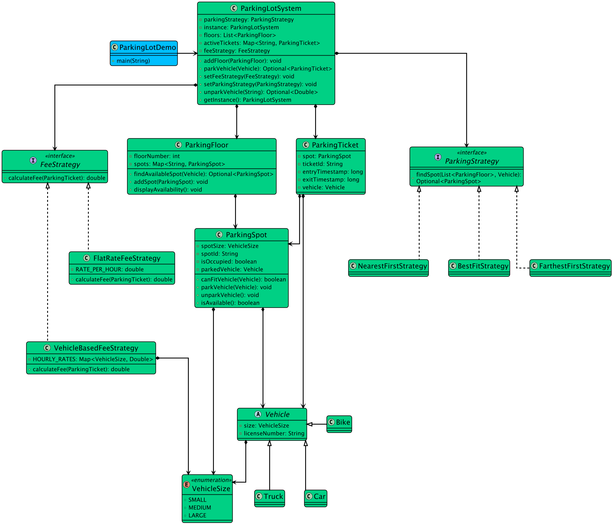
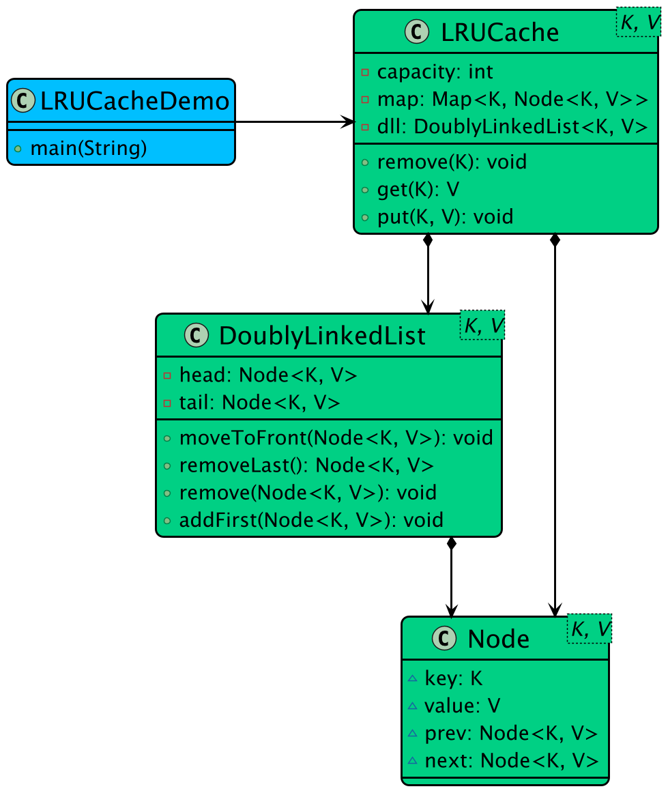
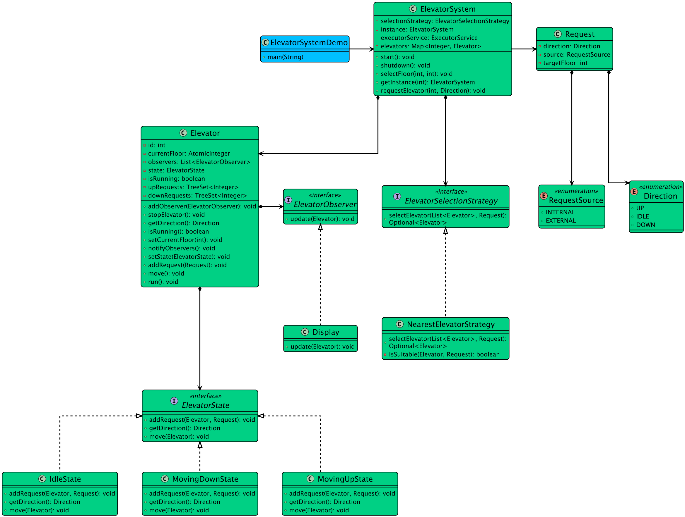
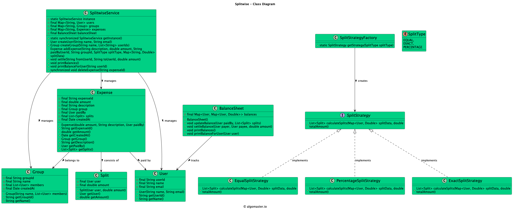
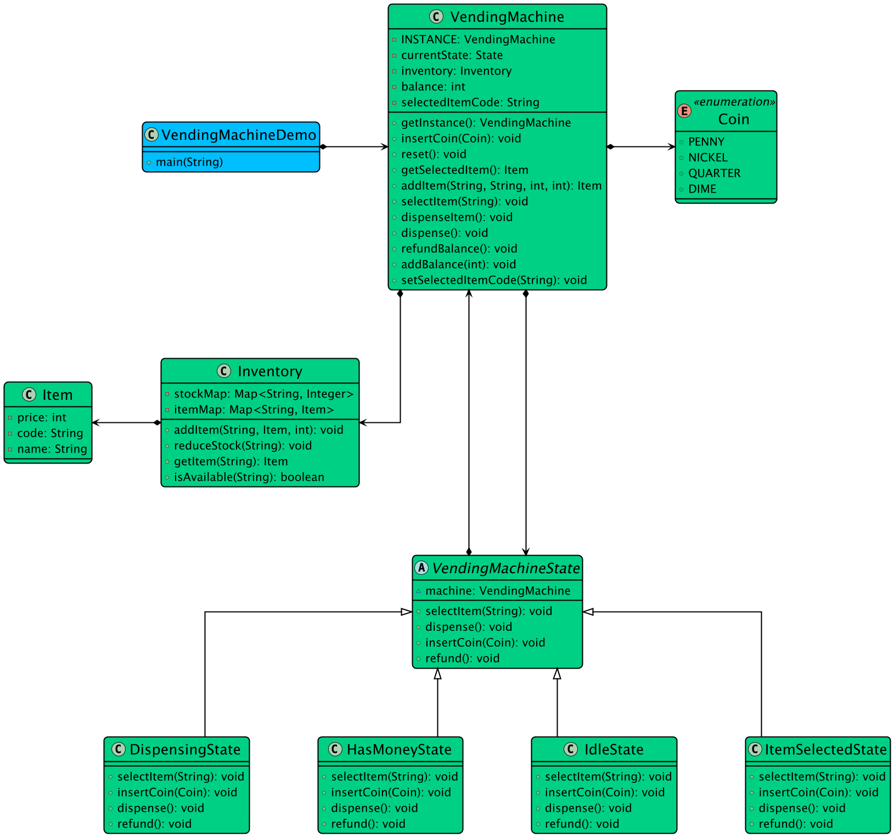
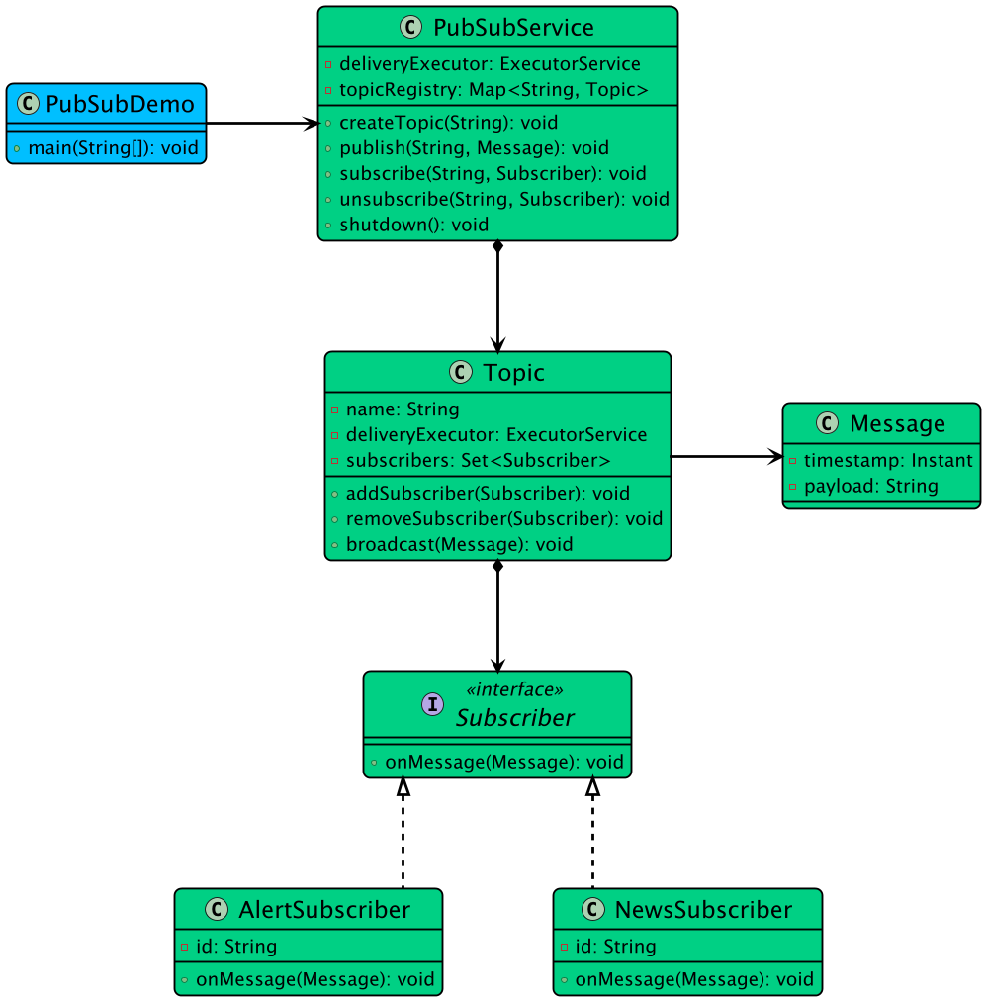
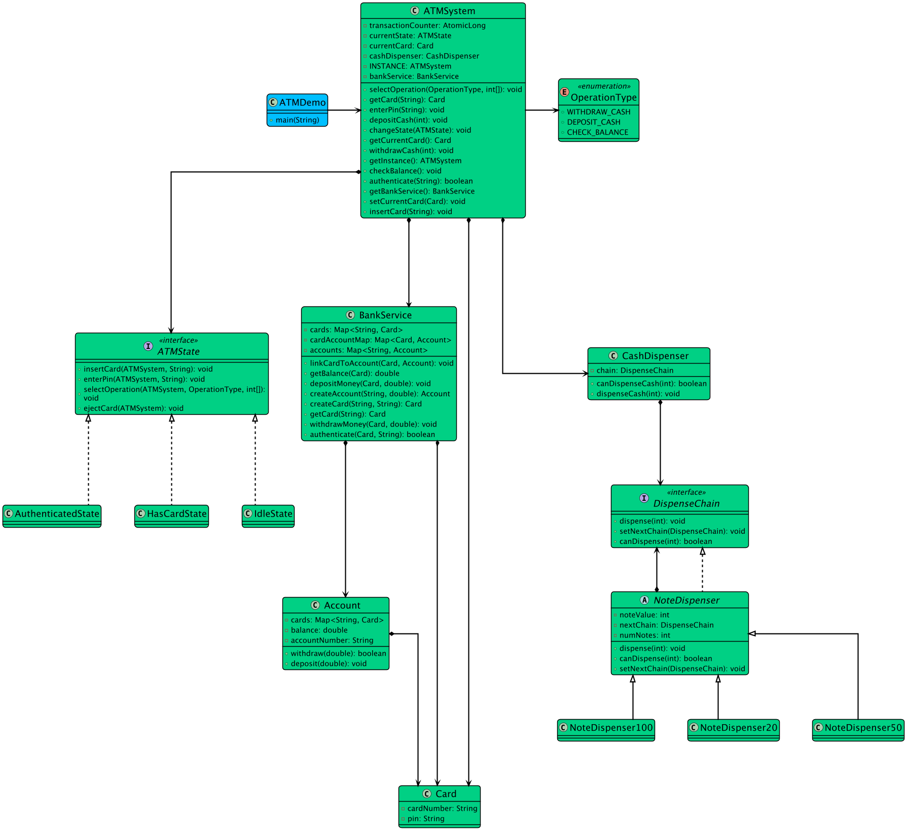
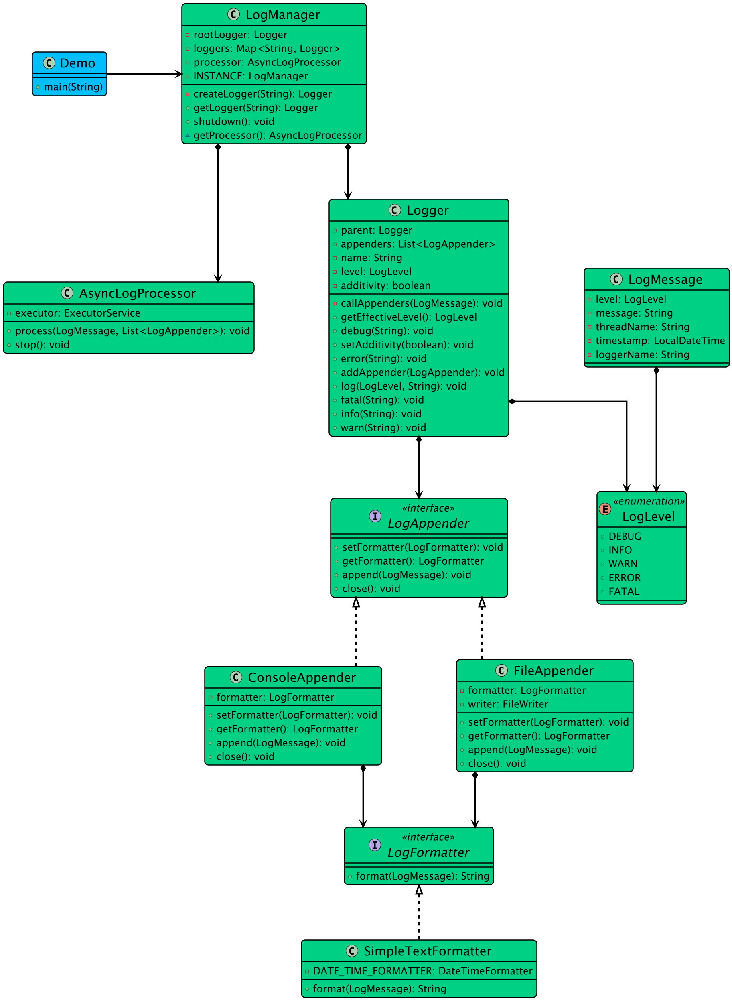
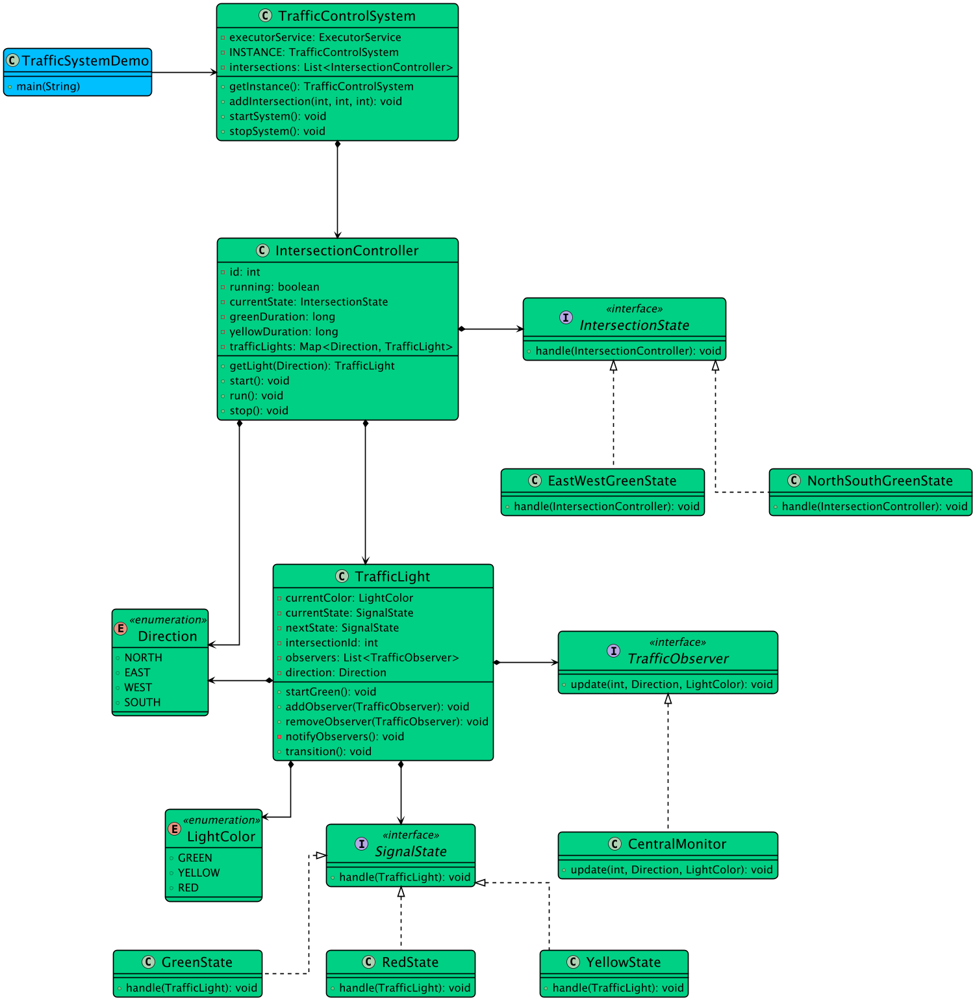
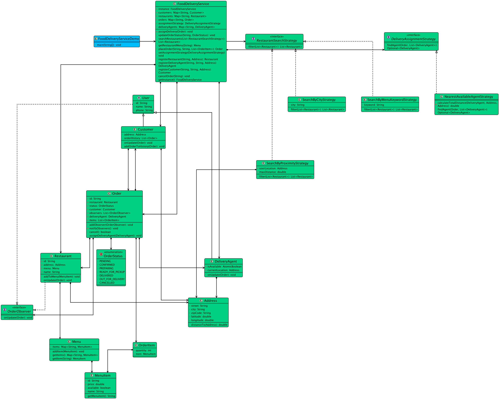

Master the four core pillars of Object-Oriented Programming and the three vital class relationships in pure Python 3.
# === Python 3 Comprehensive OOP Blueprint ===fromabcimportABC,abstractmethodfromtypingimportList,Dict,OptionalclassVehicle(ABC):"""Abstract Base Class enforcing common vehicle contract."""def__init__(self,licensePlate:str,make:str,model:str)->None:self._licensePlate=licensePlate# Encapsulation: Protected attributeself._make=makeself._model=model@propertydeflicensePlate(self)->str:returnself._licensePlate@abstractmethoddefcalculateToll(self)->float:"""Abstract method implemented by polymorphic subtypes."""passclassCar(Vehicle):"""Subclass inheriting Vehicle."""def__init__(self,licensePlate:str,make:str,model:str,numDoors:int=4)->None:super().__init__(licensePlate,make,model)self.numDoors=numDoorsdefcalculateToll(self)->float:return5.00# Flat car toll rateclassTruck(Vehicle):"""Subclass with state-dependent toll calculation."""def__init__(self,licensePlate:str,make:str,model:str,axles:int)->None:super().__init__(licensePlate,make,model)self.axles=axlesdefcalculateToll(self)->float:return10.00+(self.axles*2.50)# Composition: TollBooth HAS-A collection of processed VehiclesclassTollBooth:def__init__(self,boothId:str)->None:self.boothId=boothIdself.totalRevenue=0.0self.processedVehicles:List[Vehicle]=[]defprocessVehicle(self,vehicle:Vehicle)->float:# Polymorphism in action: Dispatches to Car or Truck calculateToll()toll=vehicle.calculateToll()self.totalRevenue+=tollself.processedVehicles.append(vehicle)print(f"[{self.boothId}] Toll charged: ${toll:.2f} for {vehicle.licensePlate}")returntoll
The 4 Pillars of Object-Oriented Design in Python 3
Use when: designing modular, maintainable, and extensible software systems for machine coding interviews.
Architecture & Design Trace
Python 3 combines nominal abstraction (via abc.ABC) with structural duck typing. Encapsulate state behind properties, inherit common abstractions, and use composition to build complex systems.
classBankAccount:def__init__(self,initial_balance:float=0.0)->None:ifinitial_balance<0:raiseValueError("Initial balance cannot be negative")self._balance=initial_balance@propertydefbalance(self)->float:returnself._balancedefdeposit(self,amount:float)->None:ifamount<=0:raiseValueError("Deposit amount must be positive")self._balance+=amountdefwithdraw(self,amount:float)->None:ifamount>self._balance:raiseValueError("Insufficient funds")self._balance-=amount
Abstraction & Pure Interfaces
Use when: hiding complex implementation details and exposing only essential contract methods.
Architecture & Design Trace
Subclass abc.ABC and decorate methods with @abstractmethod to ensure Python raises a TypeError if any required method is omitted.
fromabcimportABC,abstractmethodclassAppliance(ABC):@abstractmethoddefturn_on(self)->None:pass@abstractmethoddefturn_off(self)->None:passclassFan(Appliance):defturn_on(self)->None:print("Fan is spinning silently.")defturn_off(self)->None:print("Fan has stopped.")
Inheritance & Polymorphism
Use when: enabling code reuse and runtime method dispatch across related class hierarchies.
Architecture & Design Trace
Inheritance passes attributes and methods from base to derived classes. Polymorphism allows uniform invocation of overridden methods.
classProfessor:def__init__(self,name:str)->None:self.name=nameclassDepartment:def__init__(self,dept_name:str,professors:list[Professor])->None:self.dept_name=dept_nameself.professors=list(professors)# Aggregation: Injected from outside
Composition (Strong Has-A / Cascading Lifecycle)
Use when: representing an ownership relationship where the child parts cannot exist without the parent container.
Architecture & Design Trace
House HAS-A list of Rooms. The rooms are instantiated inside the House and destroyed when the House is deleted.
[House] (Whole)
◆ (Filled Diamond: Composition)
│
[Room] (Part - Tied to House lifecycle)
classRoom:def__init__(self,name:str,square_feet:float)->None:self.name,self.square_feet=name,square_feetclassHouse:def__init__(self)->None:# Composition: House creates and owns Room instances directlyself.rooms=[Room("Living Room",300.0),Room("Master Bedroom",250.0),Room("Kitchen",150.0)]deftotal_area(self)->float:returnsum(r.square_feetforrinself.rooms)
Pillar 02 · Design Principles
🧭 Design Principles: Overview & Blueprint
Master pragmatic software engineering principles: DRY, KISS, YAGNI, and the complete SOLID suite in Python 3.
# === Python 3 Clean Design Principles Blueprint ===fromabcimportABC,abstractmethodfromtypingimportDict,List,Protocol,Optional# --- SRP: Single Responsibility Principle ---classInvoice:def__init__(self,invoice_id:str,amount:float)->None:self.invoice_id=invoice_idself.amount=amountclassInvoiceRepository(Protocol):defsave(self,invoice:Invoice)->None:...classInMemoryInvoiceRepository:def__init__(self)->None:self.storage:Dict[str,Invoice]={}defsave(self,invoice:Invoice)->None:self.storage[invoice.invoice_id]=invoice# --- OCP: Open/Closed Principle with Strategy ---classPaymentStrategy(ABC):@abstractmethoddefpay(self,amount:float)->str:passclassCreditCardPayment(PaymentStrategy):defpay(self,amount:float)->str:returnf"Paid ${amount:.2f} via Credit Card"classUpiPayment(PaymentStrategy):defpay(self,amount:float)->str:returnf"Paid ${amount:.2f} via Instant UPI"# --- DIP: High-level depends on abstractions ---classPaymentProcessor:def__init__(self,repo:InvoiceRepository,strategy:PaymentStrategy)->None:self.repo=repoself.strategy=strategy# Injected dependencydefprocess(self,invoice:Invoice)->str:confirmation=self.strategy.pay(invoice.amount)self.repo.save(invoice)returnconfirmation
Architecture Design Principles in Machine Coding
Use when: structuring clean, decoupled code that can absorb new requirements without cascading refactors.
Build reliable architectures without unnecessary complexity by rigorously applying DRY, KISS, and YAGNI.
DRY, KISS & YAGNI in Python
Use when: maintaining high velocity and clean simplicity during time-constrained machine coding rounds.
Architecture & Design Trace
DRY eliminates copy-paste logic by extracting reusable functions. KISS avoids complex abstractions when simple dicts/dataclasses suffice. YAGNI avoids premature over-engineering.
DRY : Don't Repeat Yourself (Consolidate duplicate logic)
KISS : Keep It Simple, Stupid (Favor clear functions over deep hierarchies)
YAGNI : You Aren't Gonna Need It (Build for today's requirements, not imaginary futures)
# DRY: Reusable calculation logicdefapply_tax(amount:float,tax_rate:float=0.08)->float:returnround(amount*(1.0+tax_rate),2)# KISS: Plain readable dataclass instead of multi-tiered factory inheritancefromdataclassesimportdataclass@dataclass(frozen=True)classCustomer:id:stremail:stris_vip:bool=False# YAGNI: Avoid building complex caching and database layers when an in-memory dict meets all specs!customer_db={}
Pillar 02 · Subcategory 02
🧭 The SOLID Principles Deep Dive
Detailed breakdowns of SRP, OCP, LSP, ISP, and DIP with clean Python 3 implementations.
Single Responsibility Principle (SRP)
Use when: ensuring a class has only one reason to change.
Architecture & Design Trace
Separate business logic, data persistence, and notifications into independent classes rather than a monolithic God class.
classOrder:def__init__(self,order_id:str,total:float):self.order_id,self.total=order_id,totalclassOrderRepository:defsave(self,order:Order):print(f"Persisting order {order.order_id}")classInvoicePrinter:defprint_invoice(self,order:Order):print(f"INVOICE: Order {order.order_id} - Total: ${order.total}")
Open/Closed Principle (OCP)
Use when: extending functionality by adding new classes without modifying existing working code.
Architecture & Design Trace
Use abstract strategy interfaces or polymorphism instead of hardcoded if/elif chains.
[DiscountStrategy] (Interface)
├── PercentageDiscount (10% off)
├── FlatDiscount ($20 off)
└── SeasonalDiscount (Holiday discount)
(Add new discounts with ZERO modification to OrderService!)
classBird(ABC):@abstractmethoddefmove(self)->str:passclassFlyingBird(Bird):defmove(self)->str:return"Flies in the sky"classPenguin(Bird):defmove(self)->str:return"Swims in cold water"# Any function taking Bird works safely with Penguin or FlyingBird!deftrack_migration(birds:list[Bird]):forbinbirds:print(b.move())
Interface Segregation Principle (ISP)
Use when: preventing clients from depending on methods they do not use.
Architecture & Design Trace
Split fat interfaces into smaller, role-focused Protocols in Python.
[Printer] Protocol [Scanner] Protocol
▲ ▲
│ │
MultiFunctionPrinter implements BOTH
SimplePrinter implements ONLY Printer
Use when: controlling object creation mechanisms to increase flexibility and reuse of existing code.
Architecture & Design Trace
Creational patterns abstract the instantiation process, making systems independent of how their objects are created, composed, and represented.
Creational Patterns Catalog:
├── Singleton -> Ensure exactly one instance with global access point
├── Factory Method -> Delegate instantiation to specialized creator subclasses
├── Abstract Factory -> Create families of related products without concrete bindings
├── Builder -> Step-by-step fluent construction of complex objects
└── Prototype -> Clone existing prototypes via copy/deepcopy
db1,db2=DatabaseManager(),DatabaseManager()assertdb1isdb2# Exact same instance!req=HttpRequestBuilder("https://api.example.com").method("POST").header("Auth","Bearer token").build()assertreq.method=="POST"
Pillar 03 · Subcategory 01
🧩 Creational Design Patterns
Complete Python 3 implementations of Singleton, Factory Method, Abstract Factory, Builder, and Prototype.
Singleton Pattern (Double-Checked Locking)
Use when: ensuring a class has only one instance while providing a global access point to it.
Architecture & Design Trace
Double-checked locking ensures that after the singleton is created, subsequent calls to get_instance() bypass the synchronization lock in O(1) time.
Call get_instance()
├── Is _instance None? -> Yes -> Acquire Lock -> Is _instance Still None? -> Instantiate
└── Is _instance None? -> No -> Return cached instance (Zero locking cost!)
fromabcimportABC,abstractmethodclassNotification(ABC):@abstractmethoddefsend(self,recipient:str,message:str)->None:passclassEmailNotification(Notification):defsend(self,recipient:str,message:str)->None:print(f"Sending Email to {recipient}: {message}")classPushNotification(Notification):defsend(self,recipient:str,message:str)->None:print(f"Sending Push to {recipient}: {message}")classNotificationCreator(ABC):@abstractmethoddefcreate_notification(self)->Notification:passclassEmailCreator(NotificationCreator):defcreate_notification(self)->Notification:returnEmailNotification()
Abstract Factory Pattern
Use when: producing families of related or dependent objects without specifying their concrete classes.
Architecture & Design Trace
Enforces product family compatibility (e.g. Victorian Furniture Family vs Modern Furniture Family, Casual Shoes vs Sports Shoes).
Master object composition and interface adaptation: Adapter, Bridge, Composite, Decorator, Facade, Flyweight, and Proxy.
# === Python 3 Structural Patterns Blueprint ===fromabcimportABC,abstractmethod# 1. Adapter: Legacy payment gateway to Modern ProcessorclassModernPaymentProcessor(ABC):@abstractmethoddefpay(self,amount_dollars:float)->str:passclassLegacyGateway:defsend_payment_cents(self,cents:int)->bool:print(f"Legacy gateway processed {cents} cents")returnTrueclassLegacyPaymentAdapter(ModernPaymentProcessor):def__init__(self,legacy:LegacyGateway):self.legacy=legacydefpay(self,amount_dollars:float)->str:cents=int(amount_dollars*100)success=self.legacy.send_payment_cents(cents)returnf"Adapted payment of {cents} cents: {'OK' if success else 'FAIL'}"# 2. Decorator: Wrapping text componentsclassTextView(ABC):@abstractmethoddefrender(self)->str:passclassPlainTextView(TextView):def__init__(self,text:str):self.text=textdefrender(self)->str:returnself.textclassBoldDecorator(TextView):def__init__(self,inner:TextView):self.inner=innerdefrender(self)->str:returnf"<b>{self.inner.render()}</b>"
Structural Design Patterns in Python 3
Use when: assembling objects and classes into larger flexible and efficient structures.
Architecture & Design Trace
Structural patterns use inheritance to compose interfaces and define ways to compose objects to obtain new functionality without tight coupling.
Structural Patterns Catalog:
├── Adapter -> Converts interface of a class into another interface clients expect
├── Bridge -> Decouples an abstraction from its implementation so both vary independently
├── Composite -> Composes objects into tree structures to represent part-whole hierarchies
├── Decorator -> Attaches additional responsibilities dynamically to an object
├── Facade -> Provides a unified interface to a set of interfaces in a subsystem
├── Flyweight -> Uses sharing to support large numbers of fine-grained objects efficiently
└── Proxy -> Provides a surrogate or placeholder for another object to control access
classPaymentProcessor(ABC):@abstractmethoddefprocess_payment(self,amount:float)->bool:passclassThirdPartyPayPal:defsend_usd(self,dollars:float)->str:returnf"PayPal sent ${dollars}"classPayPalAdapter(PaymentProcessor):def__init__(self,paypal:ThirdPartyPayPal):self.paypal=paypaldefprocess_payment(self,amount:float)->bool:res=self.paypal.send_usd(amount)return"PayPal sent"inres
Bridge Pattern
Use when: decoupling an abstraction from its implementation so that both can vary independently.
Architecture & Design Trace
Prevents Cartesian product class explosions (e.g. CircleVector, CircleRaster, SquareVector, SquareRaster).
classRenderer(ABC):@abstractmethoddefrender_circle(self,radius:float)->str:passclassVectorRenderer(Renderer):defrender_circle(self,radius:float)->str:returnf"Drawing circle of radius {radius} as vectors"classRasterRenderer(Renderer):defrender_circle(self,radius:float)->str:returnf"Drawing circle of radius {radius} as pixels"classShape(ABC):def__init__(self,renderer:Renderer):self.renderer=renderer@abstractmethoddefdraw(self)->str:passclassCircle(Shape):def__init__(self,renderer:Renderer,radius:float):super().__init__(renderer)self.radius=radiusdefdraw(self)->str:returnself.renderer.render_circle(self.radius)
Composite Pattern
Use when: composing objects into tree structures to represent part-whole hierarchies.
Architecture & Design Trace
Allows clients to treat individual objects (leaf) and compositions of objects (composite) uniformly.
Use when: attaching additional responsibilities and behavior to an object dynamically.
Architecture & Design Trace
Decorators provide a flexible alternative to subclassing for extending functionality at runtime.
Beverage -> SimpleCoffee ($5.00)
│
└── MilkDecorator ($1.50) -> Total $6.50
│
└── SugarDecorator ($0.50) -> Total $7.00
classCoffee(ABC):@abstractmethoddefget_cost(self)->float:pass@abstractmethoddefget_description(self)->str:passclassSimpleCoffee(Coffee):defget_cost(self)->float:return5.0defget_description(self)->str:return"Simple Coffee"classCoffeeDecorator(Coffee):def__init__(self,coffee:Coffee):self._coffee=coffeedefget_cost(self)->float:returnself._coffee.get_cost()defget_description(self)->str:returnself._coffee.get_description()classMilkDecorator(CoffeeDecorator):defget_cost(self)->float:returnself._coffee.get_cost()+1.5defget_description(self)->str:returnself._coffee.get_description()+", with Milk"
Facade Pattern
Use when: providing a unified, simplified interface to a complex subsystem.
Architecture & Design Trace
Hides complex multi-system orchestration behind a clean high-level API.
classAmplifier:defon(self):print("Amp on")defset_volume(self,level:int):print(f"Volume set to {level}")classProjector:defon(self):print("Projector on")defwide_screen_mode(self):print("16:9 mode")classHomeTheaterFacade:def__init__(self,amp:Amplifier,proj:Projector):self.amp=ampself.proj=projdefwatch_movie(self):self.proj.on()self.proj.wide_screen_mode()self.amp.on()self.amp.set_volume(8)
Flyweight Pattern
Use when: sharing common state across vast numbers of fine-grained objects to minimize memory footprint.
Architecture & Design Trace
Separates intrinsic state (shared, immutable, stored inside flyweight) from extrinsic state (context-dependent, passed via method arguments).
classCharacterGlyph:"""Flyweight containing intrinsic, immutable shared state."""def__init__(self,char:str,font_family:str,font_size:int)->None:self.char=charself.font_family=font_familyself.font_size=font_sizedefrender(self,x:int,y:int,color:str)->None:print(f"Render '{self.char}' at ({x}, {y}) in {color} with {self.font_family} {self.font_size}pt")classGlyphFactory:"""Flyweight factory ensuring instances are cached and reused."""_glyphs:dict={}@classmethoddefget_glyph(cls,char:str,font_family:str="Monaco",font_size:int=12)->CharacterGlyph:key=(char,font_family,font_size)ifkeynotincls._glyphs:cls._glyphs[key]=CharacterGlyph(char,font_family,font_size)returncls._glyphs[key]# 1000 characters sharing the exact same flyweight instancesfactory=GlyphFactory()g1=factory.get_glyph("A")g2=factory.get_glyph("A")assertg1isg2# Exact same memory instanceg1.render(10,20,"orange")
Proxy Pattern
Use when: providing a surrogate or placeholder for another object to control access to it.
Architecture & Design Trace
Used for Lazy Loading (Virtual Proxy), Access Control (Protection Proxy), or Caching.
Client -> Proxy.display()
├── Loaded? -> No -> Fetch heavy resource from disk/network
└── Loaded? -> Yes -> Display cached image
classImage(ABC):@abstractmethoddefdisplay(self)->None:passclassHeavyDiskImage(Image):def__init__(self,filename:str):self.filename=filenameprint(f"Loading heavy image {filename} from disk (Slow)...")defdisplay(self)->None:print(f"Displaying {self.filename}")classLazyImageProxy(Image):def__init__(self,filename:str):self.filename=filenameself._real_image=Nonedefdisplay(self)->None:ifself._real_imageisNone:self._real_image=HeavyDiskImage(self.filename)self._real_image.display()
Use when: managing algorithms, responsibilities, and communication between collaborating objects.
Architecture & Design Trace
Behavioral patterns characterize complex control flow that is difficult to follow at runtime, shifting your focus from flow of control to the way objects are interconnected.
Behavioral Patterns Catalog:
├── Strategy -> Define family of algorithms, encapsulate each one, make them interchangeable
├── Observer -> Define 1-to-many dependency so when one object changes state, all are notified
├── Command -> Encapsulate a request as an object with undo/redo capabilities
├── State -> Allow an object to alter its behavior when its internal state changes
├── Template Method -> Define skeleton of an algorithm deferring specific steps to subclasses
├── Iterator -> Access elements of an aggregate object sequentially without exposing representation
├── Chain of Resp. -> Avoid coupling sender to receiver by giving more than 1 object chance to handle
├── Mediator -> Define object that encapsulates how a set of objects interact
├── Memento -> Capture and externalize an object's internal state without violating encapsulation
└── Visitor -> Represent an operation to be performed on elements of an object structure
ticker=StockTicker("AAPL")ticker.attach(TraderAlert("Alice"))ticker.attach(TraderAlert("Bob"))ticker.set_price(185.50)# Notifies Alice and Bob!
Pillar 05 · Subcategory 01
🧩 Behavioral Design Patterns
Complete Python 3 implementations of Strategy, Observer, Command, State, Template Method, Iterator, Chain of Responsibility, Mediator, Memento, and Visitor.
Strategy Pattern
Use when: defining a family of algorithms, encapsulating each one, and making them interchangeable at runtime.
Architecture & Design Trace
Lets the algorithm vary independently from clients that use it. Replaces conditional branching with clean polymorphism.
classCommand(ABC):@abstractmethoddefexecute(self)->None:pass@abstractmethoddefundo(self)->None:passclassLight:defon(self):print("Light is ON")defoff(self):print("Light is OFF")classLightOnCommand(Command):def__init__(self,light:Light):self.light=lightdefexecute(self):self.light.on()defundo(self):self.light.off()classRemoteControl:def__init__(self):self.history:list[Command]=[]defexecute_command(self,cmd:Command):cmd.execute()self.history.append(cmd)defundo_last(self):ifself.history:self.history.pop().undo()
State Pattern
Use when: allowing an object to alter its behavior when its internal state changes, appearing to change its class.
Architecture & Design Trace
Replaces massive switch or if-elif statements with dedicated state objects that transition dynamically.
fromtypingimportListclassSong:def__init__(self,title:str,artist:str)->None:self.title,self.artist=title,artistclassPlaylistIterator:"""Custom iterator traversing songs in a playlist."""def__init__(self,songs:List[Song])->None:self._songs=songsself._index=0def__iter__(self)->"PlaylistIterator":returnselfdef__next__(self)->Song:ifself._index>=len(self._songs):raiseStopIterationsong=self._songs[self._index]self._index+=1returnsongclassPlaylist:"""Aggregate collection supporting iteration."""def__init__(self,name:str)->None:self.name=nameself._songs:List[Song]=[]defadd_song(self,song:Song)->None:self._songs.append(song)def__iter__(self)->PlaylistIterator:returnPlaylistIterator(self._songs)playlist=Playlist("Coding Flow")playlist.add_song(Song("Synthwave Pulse","RetroTech"))forsonginplaylist:print(f"Playing: {song.title} by {song.artist}")
Chain of Responsibility Pattern
Use when: passing a request along a dynamic chain of handlers until an object handles it.
Architecture & Design Trace
Decouples senders and receivers. Handlers decide whether to process the request or pass it to the next link in the chain.
Use when: reducing chaotic dependencies between objects by restricting direct communications and forcing them to collaborate through a central mediator.
Architecture & Design Trace
Decouples UI components or distributed services so they don't know about each other.
Component A (Button) Component B (Input) --> [ Mediator (Dialog / Router) ] --> Component C (List)
fromabcimportABC,abstractmethodclassIMediator(ABC):@abstractmethoddefnotify(self,sender:"UIComponent",event:str)->None:passclassUIComponent:def__init__(self,mediator:IMediator=None)->None:self.mediator=mediatordefset_mediator(self,mediator:IMediator)->None:self.mediator=mediatorclassButton(UIComponent):defclick(self)->None:ifself.mediator:self.mediator.notify(self,"button_click")classTextBox(UIComponent):def__init__(self)->None:super().__init__()self.text=""classAuthenticationDialog(IMediator):"""Concrete Mediator coordinating Button and TextBox interactions."""def__init__(self)->None:self.login_btn=Button(self)self.username_input=TextBox()self.username_input.set_mediator(self)defnotify(self,sender:UIComponent,event:str)->None:ifsenderisself.login_btnandevent=="button_click":ifnotself.username_input.text:print("Validation Error: Username cannot be blank.")else:print(f"Logging in user: {self.username_input.text}")dialog=AuthenticationDialog()dialog.username_input.text="antigravity_dev"dialog.login_btn.click()
Memento Pattern
Use when: capturing and externalizing an object's internal state so it can be restored later without violating encapsulation.
Architecture & Design Trace
Essential for Undo/Redo mechanisms, game save points, and transactional rollbacks.
Document -> [Paragraph, Heading, Table]
Visitor -> HTML_ExportVisitor vs Markdown_ExportVisitor (Extensible without altering Elements)
fromabcimportABC,abstractmethodfromtypingimportListclassDocumentElement(ABC):@abstractmethoddefaccept(self,visitor:"DocumentVisitor")->None:passclassHeading(DocumentElement):def__init__(self,text:str,level:int=1)->None:self.text,self.level=text,leveldefaccept(self,visitor:"DocumentVisitor")->None:visitor.visit_heading(self)classParagraph(DocumentElement):def__init__(self,text:str)->None:self.text=textdefaccept(self,visitor:"DocumentVisitor")->None:visitor.visit_paragraph(self)classDocumentVisitor(ABC):@abstractmethoddefvisit_heading(self,heading:Heading)->None:pass@abstractmethoddefvisit_paragraph(self,para:Paragraph)->None:passclassMarkdownExportVisitor(DocumentVisitor):def__init__(self)->None:self.output:List[str]=[]defvisit_heading(self,heading:Heading)->None:prefix="#"*heading.levelself.output.append(f"{prefix} {heading.text}")defvisit_paragraph(self,para:Paragraph)->None:self.output.append(para.text)elements=[Heading("Low-Level Design",1),Paragraph("Pure standard library Python 3 guide.")]md_exporter=MarkdownExportVisitor()forelinelements:el.accept(md_exporter)assertlen(md_exporter.output)==2
Category 6 • Concurrency Blueprint
Concurrency & Multi-Threading Blueprint
Master Python 3 concurrency fundamentals for Low-Level Design: understand the Global Interpreter Lock (GIL), atomic operations, race condition prevention, and thread-safe data structures using modern standard library primitives.
Concurrency is a pivotal requirement in Machine Coding interviews. In Python, OS threads run under the Global Interpreter Lock (GIL), meaning threads execute concurrently on I/O-bound tasks and time-slice bytecode instructions for in-memory systems. You must guarantee thread-safety for shared state (caches, rate limiters, inventory counters) using proper synchronization primitives.
GIL & Thread Safety
The GIL does not make application logic thread-safe. Bytecode preemption can interrupt multi-step operations (e.g. check-then-act, dict mutations). Always synchronize shared mutations using locks.
Reentrancy (RLock)
Standard Lock deadlocks if a thread tries to acquire it twice. Use RLock when a synchronized public method invokes another synchronized method on the same instance.
Signaling & Condition
Never busy-wait (while condition: pass). Use threading.Condition or threading.Event to sleep threads until state changes, preventing CPU burning.
1. Thread-Safe State Architecture (RLock Blueprint)
importthreadingimporttimefromtypingimportDict,Any,OptionalclassThreadSafeStateStore:"""Thread-safe in-memory key-value store using RLock.
RLock (Reentrant Lock) allows the same thread to acquire the lock multiple times
without deadlocking itself, making it ideal for Low-Level Design where helper
methods also need locking.
"""Thread-safe in-memory key-value store using RLock. RLock (Reentrant Lock) allows the same thread to acquire the lock multiple times without deadlocking itself, making it ideal for Low-Level Design where helper methods also need locking. """
def__init__(self)->None:self._lock=threading.RLock()self._data:Dict[str,Any]={}defput(self,key:str,value:Any)->None:withself._lock:self._data[key]=valuedefget(self,key:str)->Optional[Any]:withself._lock:returnself._data.get(key)defget_or_set(self,key:str,default_factory)->Any:withself._lock:# Reentrant: get() can be safely called here without deadlockingval=self.get(key)ifvalisNone:val=default_factory()self.put(key,val)returnvaldefremove(self,key:str)->Optional[Any]:withself._lock:returnself._data.pop(key,None)
2. Thread Lifecycle, Daemons & Clean Cancellation
importthreadingimporttimedefworker_task(stop_event:threading.Event,worker_id:int)->None:"""Worker loop that responds gracefully to cancellation events."""print(f"Worker {worker_id} started.")whilenotstop_event.is_set():# Simulate work or wait with timeout to allow checking stop_eventtime.sleep(0.1)print(f"Worker {worker_id} shutting down cleanly.")# Daemon vs Non-Daemon Lifecyclestop_signal=threading.Event()threads=[]foriinrange(3):t=threading.Thread(target=worker_task,args=(stop_signal,i),daemon=False)threads.append(t)t.start()time.sleep(0.3)stop_signal.set()# Signal all workers to terminatefortinthreads:t.join(timeout=2.0)# Wait for clean terminationprint("All worker threads joined successfully.")
Classic Concurrency Problems in Interviews
Thread-Safe LRU Cache
Double-Checked Locking / RLockCore LLD
Machine Coding Takeaway: Ensure atomic get/put, node eviction, and list reordering across concurrent reader and writer threads.
Token Bucket Rate Limiter
Lock / ConditionHigh Frequency
Machine Coding Takeaway: Refill tokens dynamically while locking only during token consumption to minimize contention.
Multi-Threaded Pub-Sub Broker
Queue / Worker PoolAdvanced LLD
Machine Coding Takeaway: Decouple topic publishing from subscriber consumption using thread-safe unbounded/bounded queues.
Category 6 • Synchronization Catalog
Python 3 Synchronization Primitives
Production-grade implementations of locks, semaphores, condition variables, and concurrent queues for multi-threaded system design.
Detailed standard library implementations of the 6 fundamental synchronization patterns used in Python 3 Low-Level Design and machine coding interviews.
Mutex & Reentrant Lock (Lock vs RLock)
Use when: Protecting shared memory states and preventing self-deadlocks during nested synchronized method invocations.
Architecture & Design Trace
RLock tracks the owning thread ID and recursion counter. A thread can re-enter critical sections without blocking itself. Global lock ordering prevents cross-thread deadlocks.
importthreadingfromtypingimportDictclassBankAccount:"""Thread-safe bank account using RLock.
Using RLock allows transfer() to acquire the lock for both accounts
and safely call withdraw() and deposit() which also acquire the lock.
Deadlock avoidance is achieved by ordering lock acquisition by account ID.
"""Thread-safe bank account using RLock. Using RLock allows transfer() to acquire the lock for both accounts and safely call withdraw() and deposit() which also acquire the lock. Deadlock avoidance is achieved by ordering lock acquisition by account ID. """
def__init__(self,account_id:str,balance:float=0.0)->None:self.account_id=account_idself._balance=balanceself._lock=threading.RLock()defdeposit(self,amount:float)->None:ifamount<=0:raiseValueError("Deposit amount must be positive")withself._lock:self._balance+=amountdefwithdraw(self,amount:float)->bool:ifamount<=0:raiseValueError("Withdrawal amount must be positive")withself._lock:ifself._balance>=amount:self._balance-=amountreturnTruereturnFalsedefget_balance(self)->float:withself._lock:returnself._balance@staticmethoddeftransfer(source:"BankAccount",target:"BankAccount",amount:float)->bool:"""Deadlock-free transfer using global lock ordering based on account_id."""ifsource.account_id==target.account_id:returnFalsefirst,second=(source,target)ifsource.account_id<target.account_idelse(target,source)withfirst._lock:withsecond._lock:ifsource.withdraw(amount):target.deposit(amount)returnTruereturnFalse
Semaphores & Bounded Resource Access
Use when: Limiting the number of concurrent connections, workers, or simultaneous access to finite external resources.
Architecture & Design Trace
BoundedSemaphore tracks an internal counter decremented on acquire() and incremented on release(). Throws ValueError if released more times than acquired.
Pool Cap = 3
Worker 1,2,3 acquire() --> Counter: 0
Worker 4 acquire() --> BLOCKS until any Worker calls release()
importthreadingimporttimefromtypingimportList,OptionalclassDatabaseConnection:def__init__(self,conn_id:int)->None:self.conn_id=conn_iddefexecute(self,query:str)->str:returnf"[Conn-{self.conn_id}] Executed: {query}"classConnectionPool:"""Connection pool bounded by threading.Semaphore.
The semaphore tracks available slots. A separate lock protects the
internal connection pool list from concurrent modification.
"""Connection pool bounded by threading.Semaphore. The semaphore tracks available slots. A separate lock protects the internal connection pool list from concurrent modification. """
def__init__(self,max_connections:int)->None:self._semaphore=threading.BoundedSemaphore(max_connections)self._lock=threading.Lock()self._available:List[DatabaseConnection]=[DatabaseConnection(i+1)foriinrange(max_connections)]defacquire(self,timeout:Optional[float]=None)->DatabaseConnection:acquired=self._semaphore.acquire(timeout=timeoutiftimeoutisnotNoneelse-1)ifnotacquired:raiseTimeoutError("Could not acquire database connection from pool")withself._lock:returnself._available.pop()defrelease(self,conn:DatabaseConnection)->None:withself._lock:self._available.append(conn)self._semaphore.release()classConnectionContext:def__init__(self,pool:"ConnectionPool")->None:self.pool=poolself.conn:Optional[DatabaseConnection]=Nonedef__enter__(self)->DatabaseConnection:self.conn=self.pool.acquire()returnself.conndef__exit__(self,exc_type,exc_val,exc_tb)->None:ifself.conn:self.pool.release(self.conn)defconnection(self)->ConnectionContext:returnself.ConnectionContext(self)
Condition Variables (wait / notify / notify_all)
Use when: Coordinating state changes between threads (e.g. blocking queues, custom event buses) without busy polling.
Architecture & Design Trace
Condition releases the underlying lock and places the calling thread in a wait queue until another thread signals notify() or notify_all(). Always test conditions in a while loop to handle spurious wakeups.
while len(queue) == 0: # while loop is mandatory
not_empty.wait() # atomic unlock + sleep
# Woken up: re-acquires lock automatically
importthreadingfromtypingimportGeneric,TypeVar,ListT=TypeVar("T")classBlockingQueue(Generic[T]):"""Thread-safe bounded blocking queue implemented with threading.Condition.
Demonstrates proper condition variable usage:
1. Condition wraps an RLock or Lock.
2. Always check predicate inside a 'while' loop to prevent spurious wakeups.
3. Call notify_all() when state transitions allow waiting threads to proceed.
"""Thread-safe bounded blocking queue implemented with threading.Condition. Demonstrates proper condition variable usage: 1. Condition wraps an RLock or Lock. 2. Always check predicate inside a 'while' loop to prevent spurious wakeups. 3. Call notify_all() when state transitions allow waiting threads to proceed. """
def__init__(self,capacity:int)->None:ifcapacity<=0:raiseValueError("Capacity must be positive")self._capacity=capacityself._items:List[T]=[]self._lock=threading.RLock()self._not_full=threading.Condition(self._lock)self._not_empty=threading.Condition(self._lock)defput(self,item:T)->None:withself._lock:whilelen(self._items)>=self._capacity:self._not_full.wait()# Releases lock and sleeps until notifiedself._items.append(item)self._not_empty.notify()# Wake up one waiting consumerdefget(self)->T:withself._lock:whilelen(self._items)==0:self._not_empty.wait()# Releases lock and sleeps until notifieditem=self._items.pop(0)self._not_full.notify()# Wake up one waiting producerreturnitemdefsize(self)->int:withself._lock:returnlen(self._items)
Producer-Consumer Pipeline (queue.Queue)
Use when: Decoupling ingestion from execution with built-in backpressure, worker pools, and clean poison pill shutdown.
Architecture & Design Trace
queue.Queue is thread-safe and wraps Condition variables. Using task_done() and join() guarantees all submitted work completes before program exit.
importthreadingimportqueueimporttimefromtypingimportAnyclassProducerConsumerSystem:"""Idiomatic Python 3 Producer-Consumer architecture.
Uses standard library queue.Queue which is already internally synchronized
with Condition variables and handles backpressure effortlessly.
Uses sentinel objects (poison pills) to signal graceful worker shutdown.
"""Idiomatic Python 3 Producer-Consumer architecture. Uses standard library queue.Queue which is already internally synchronized with Condition variables and handles backpressure effortlessly. Uses sentinel objects (poison pills) to signal graceful worker shutdown. """
SHUTDOWN_SIGNAL=object()def__init__(self,num_workers:int=3,max_queue_size:int=10)->None:self.task_queue:queue.Queue=queue.Queue(maxsize=max_queue_size)self.num_workers=num_workersself.workers:list[threading.Thread]=[]defstart(self)->None:foriinrange(self.num_workers):t=threading.Thread(target=self._worker_loop,args=(i,),daemon=True)self.workers.append(t)t.start()def_worker_loop(self,worker_id:int)->None:whileTrue:item=self.task_queue.get()ifitemisself.SHUTDOWN_SIGNAL:self.task_queue.task_done()breaktry:# Process taskself._process(worker_id,item)finally:self.task_queue.task_done()def_process(self,worker_id:int,item:Any)->None:# Simulate processing logicpassdefsubmit(self,item:Any)->None:self.task_queue.put(item)# Blocks if queue is full (backpressure)defshutdown(self)->None:# Send one poison pill for each worker threadfor_inrange(self.num_workers):self.task_queue.put(self.SHUTDOWN_SIGNAL)self.task_queue.join()# Wait for all tasks to be finishedfortinself.workers:t.join()
Thread Pool Pattern (concurrent.futures)
Use when: Managing asynchronous task batches and retrieving results without manual thread lifecycle management.
Architecture & Design Trace
ThreadPoolExecutor maintains worker threads and task queues. Futures represent deferred computations, allowing timeout checks, exception handling, and as_completed aggregation.
importconcurrent.futuresimporttimefromtypingimportCallable,Any,ListclassAsyncTaskExecutor:"""Thread pool wrapper leveraging concurrent.futures.ThreadPoolExecutor.
Provides clean submission, batch execution, and graceful termination
for concurrent machine coding workflows.
"""Thread pool wrapper leveraging concurrent.futures.ThreadPoolExecutor. Provides clean submission, batch execution, and graceful termination for concurrent machine coding workflows. """
def__init__(self,max_workers:int=4)->None:self.max_workers=max_workersself.executor=concurrent.futures.ThreadPoolExecutor(max_workers=max_workers,thread_name_prefix="AsyncWorker")defexecute_batch(self,tasks:List[Callable[[],Any]],timeout:float=5.0)->List[Any]:futures=[self.executor.submit(task)fortaskintasks]results=[]forfutureinconcurrent.futures.as_completed(futures,timeout=timeout):try:results.append(future.result())exceptExceptionasexc:results.append(f"Task generated an exception: {exc}")returnresultsdefshutdown(self,wait:bool=True)->None:self.executor.shutdown(wait=wait)
Reader-Writer Lock (Writer-Preferring)
Use when: Read-heavy in-memory data structures (e.g. caching, directory indexing) where concurrent reads are safe but writes require mutual exclusion.
Architecture & Design Trace
Maintains reader count and writer waiting count. Gives waiting writers priority over incoming readers to prevent writer starvation under heavy read traffic.
Readers: Concurrent [R1, R2, R3] (Active)
Writer: Arrives -> Blocks new readers
When [R1..R3] finish -> Writer executes exclusively
importthreadingfromcontextlibimportcontextmanagerclassReadWriteLock:"""Writer-preferring Read-Write Lock.
Allows multiple concurrent readers when no writer is waiting or writing.
Gives writers priority to prevent writer starvation in read-heavy caches.
"""Writer-preferring Read-Write Lock. Allows multiple concurrent readers when no writer is waiting or writing. Gives writers priority to prevent writer starvation in read-heavy caches. """
def__init__(self)->None:self._lock=threading.Lock()self._read_ready=threading.Condition(self._lock)self._readers=0self._writers_waiting=0self._writing=False@contextmanagerdefread_lock(self):withself._lock:# Wait if a writer is currently writing or waiting (writer priority)whileself._writingorself._writers_waiting>0:self._read_ready.wait()self._readers+=1try:yieldfinally:withself._lock:self._readers-=1ifself._readers==0:self._read_ready.notify_all()@contextmanagerdefwrite_lock(self):withself._lock:self._writers_waiting+=1whileself._writingorself._readers>0:self._read_ready.wait()self._writers_waiting-=1self._writing=Truetry:yieldfinally:withself._lock:self._writing=Falseself._read_ready.notify_all()classConcurrentCache:"""Thread-safe cache using ReadWriteLock for high-throughput reads."""def__init__(self)->None:self._rw_lock=ReadWriteLock()self._store={}defget(self,key:str):withself._rw_lock.read_lock():returnself._store.get(key)defput(self,key:str,value):withself._rw_lock.write_lock():self._store[key]=value
Category 7 • Problem Blueprint
Machine Coding Interview Strategy & Blueprint
The end-to-end 45-minute blueprint for machine coding interviews: requirements discovery, entity modeling, strategy/state decoupling, concurrency isolation, and modular runnable Python 3 standard library architecture.
The Machine Coding round evaluates your ability to convert ambiguous real-world requirements into clean, modular, extensible, and thread-safe object-oriented Python 3 code in 45 to 90 minutes. Follow the strict 5-phase execution plan below.
Phase 1: Clarify & Scope (0–5 min)
Establish exact boundaries. Confirm vehicle types for Parking Lot, eviction strategy for Cache, or debt simplification for Splitwise. List 5–7 crisp requirements.
Phase 2: Entities & Relationships (5–15 min)
Identify models (Entities, Value Objects, Enums). Determine Association, Aggregation, and Composition. Define abstract Strategy interfaces before concrete classes.
Phase 3: Controller & State (15–35 min)
Implement core business workflows in a central Service or Manager class. Apply GoF patterns (Strategy, State, Factory, Observer) where appropriate.
Phase 4: Concurrency & Safety (35–40 min)
Wrap critical mutations with threading.RLock(). Protect inventory updates, seat reservations, and wallet deductions against race conditions.
Phase 5: Runnable Driver & Demo (40–45 min)
Write an executable if __name__ == '__main__': block with assertions proving multiple users, edge cases (e.g. double booking, full lot), and clean output.
The Standard Machine Coding Skeleton
"""
Machine Coding Interview: 45-Minute Standard Template (Python 3)
Architecture:
1. Enums & Value Objects (Domain Model)
2. Abstract Interfaces (Strategy / Policy)
3. Concrete Implementations
4. Core Controller / Service (Thread-Safe with RLock)
5. Driver / Demonstration with Assertions
"""Machine Coding Interview: 45-Minute Standard Template (Python 3)Architecture: 1. Enums & Value Objects (Domain Model) 2. Abstract Interfaces (Strategy / Policy) 3. Concrete Implementations 4. Core Controller / Service (Thread-Safe with RLock) 5. Driver / Demonstration with Assertions"""
fromenumimportEnum,autofromdataclassesimportdataclass,fieldfromabcimportABC,abstractmethodfromtypingimportDict,List,Optionalimportthreadingimporttime# 1. Domain Enums & Value ObjectsclassItemStatus(Enum):AVAILABLE=auto()RESERVED=auto()ARCHIVED=auto()@dataclass(frozen=True)classItemId:value:str@dataclassclassItem:item_id:ItemIdname:strstatus:ItemStatus=ItemStatus.AVAILABLE# 2. Strategy InterfaceclassPricingStrategy(ABC):@abstractmethoddefcalculate_price(self,base_price:float,duration_minutes:int)->float:passclassStandardPricingStrategy(PricingStrategy):defcalculate_price(self,base_price:float,duration_minutes:int)->float:returnbase_price*(duration_minutes/60.0)# 3. Thread-Safe System Controller (Singleton / Orchestrator)classSystemManager:_instance:Optional["SystemManager"]=None_lock:threading.RLock=threading.RLock()def__new__(cls)->"SystemManager":withcls._lock:ifcls._instanceisNone:cls._instance=super().__new__(cls)cls._instance._initialized=Falsereturncls._instancedef__init__(self)->None:ifgetattr(self,"_initialized",False):returnself._lock=threading.RLock()self._items:Dict[str,Item]={}self._pricing:PricingStrategy=StandardPricingStrategy()self._initialized=Truedefregister_item(self,item_id:str,name:str)->Item:withself._lock:ifitem_idinself._items:raiseValueError(f"Item {item_id} already exists")item=Item(item_id=ItemId(item_id),name=name)self._items[item_id]=itemreturnitemdefreserve_item(self,item_id:str)->bool:withself._lock:item=self._items.get(item_id)ifitemanditem.status==ItemStatus.AVAILABLE:item.status=ItemStatus.RESERVEDreturnTruereturnFalse# 4. Demonstration / Acceptance Testif__name__=="__main__":mgr=SystemManager()mgr.register_item("item-1","MacBook Pro")assertmgr.reserve_item("item-1")isTrueassertmgr.reserve_item("item-1")isFalse# Cannot double-reserveprint("Acceptance tests passed successfully!")
Core Systems in this Curriculum
Foundational Systems
Parking Lot • LRU Cache • Elevator • SplitwiseCore Focus
Machine Coding Takeaway: Master core entity hierarchies, linked-list index caching, scheduling dispatchers, and debt simplification graphs.
Machine Coding Takeaway: Chain of responsibility cash dispensers, composite appenders, state cycle timers, and complex multi-actor order dispatch.
Category 7 • Foundational Systems
Foundational Machine Coding Systems
Deep-dive implementations for Parking Lot, LRU Cache, Elevator System, and Splitwise with full UML diagrams, requirements, and runnable Python 3 code.
The four foundational systems tested across Amazon, Google, Microsoft, and Uber. Each system features complete requirements, verified local UML class diagrams, and pure standard library Python 3 code with single-click copy buttons.
The parking lot should have multiple levels, each level with a certain number of parking spots.
The parking lot should support different types of vehicles, such as cars, motorcycles, and trucks.
Each parking spot should be able to accommodate a specific type of vehicle.
The system should assign a parking spot to a vehicle upon entry and release it when the vehicle exits.
The system should track the availability of parking spots and provide real-time information to customers.
The system should handle multiple entry and exit points and support concurrent access.
📐 UML Class DiagramSystem Architecture

Key Classes & Architectural Rationale
1. The **ParkingLot** class follows the Singleton pattern to ensure only one instance of the parking lot exists. It maintains a list of levels and provides methods to park and unpark vehicles.
2. The **ParkingFloor** class represents a level in the parking lot and contains a list of parking spots. It handles parking and unparking of vehicles within the level.
3. The **ParkingSpot** class represents an individual parking spot and tracks the availability and the parked vehicle.
4. The **Vehicle** class is an abstract base class for different types of vehicles. It is extended by Car, Motorcycle, and Truck classes.
5. The **VehicleSize** enum defines the different types of vehicles supported by the parking lot.
6. Multi-threading is achieved through the use of synchronized keyword on critical sections to ensure thread safety.
7. The **Main** class demonstrates the usage of the parking lot system.
# === [vehicle_size.py] ===fromenumimportEnumclassVehicleSize(Enum):SMALL="SMALL"MEDIUM="MEDIUM"LARGE="LARGE"# === [bike.py] ===classBike(Vehicle):def__init__(self,license_number:str):super().__init__(license_number,VehicleSize.SMALL)# === [car.py] ===classCar(Vehicle):def__init__(self,license_number:str):super().__init__(license_number,VehicleSize.MEDIUM)# === [parking_spot.py] ===importthreadingclassParkingSpot:def__init__(self,spot_id:str,spot_size:VehicleSize):self.spot_id=spot_idself.spot_size=spot_sizeself.is_occupied=Falseself.parked_vehicle=Noneself._lock=threading.Lock()defget_spot_id(self)->str:returnself.spot_iddefget_spot_size(self)->VehicleSize:returnself.spot_sizedefis_available(self)->bool:withself._lock:returnnotself.is_occupieddefis_occupied_spot(self)->bool:returnself.is_occupieddefpark_vehicle(self,vehicle:Vehicle):withself._lock:self.parked_vehicle=vehicleself.is_occupied=Truedefunpark_vehicle(self):withself._lock:self.parked_vehicle=Noneself.is_occupied=Falsedefcan_fit_vehicle(self,vehicle:Vehicle)->bool:ifself.is_occupied:returnFalseifvehicle.get_size()==VehicleSize.SMALL:returnself.spot_size==VehicleSize.SMALLelifvehicle.get_size()==VehicleSize.MEDIUM:returnself.spot_size==VehicleSize.MEDIUMorself.spot_size==VehicleSize.LARGEelifvehicle.get_size()==VehicleSize.LARGE:returnself.spot_size==VehicleSize.LARGEelse:returnFalse# === [truck.py] ===classTruck(Vehicle):def__init__(self,license_number:str):super().__init__(license_number,VehicleSize.LARGE)# === [vehicle.py] ===fromabcimportABCclassVehicle(ABC):def__init__(self,license_number:str,size:VehicleSize):self.license_number=license_numberself.size=sizedefget_license_number(self)->str:returnself.license_numberdefget_size(self)->VehicleSize:returnself.size# === [fee_strategy.py] ===fromabcimportABC,abstractmethodclassFeeStrategy(ABC):@abstractmethoddefcalculate_fee(self,parking_ticket:ParkingTicket)->float:passclassFlatRateFeeStrategy(FeeStrategy):RATE_PER_HOUR=10.0defcalculate_fee(self,parking_ticket:ParkingTicket)->float:duration=parking_ticket.get_exit_timestamp()-parking_ticket.get_entry_timestamp()hours=(duration//(1000*60*60))+1returnhours*self.RATE_PER_HOURclassVehicleBasedFeeStrategy(FeeStrategy):HOURLY_RATES={VehicleSize.SMALL:10.0,VehicleSize.MEDIUM:20.0,VehicleSize.LARGE:30.0}defcalculate_fee(self,parking_ticket:ParkingTicket)->float:duration=parking_ticket.get_exit_timestamp()-parking_ticket.get_entry_timestamp()hours=(duration//(1000*60*60))+1returnhours*self.HOURLY_RATES[parking_ticket.get_vehicle().get_size()]# === [parking_strategy.py] ===fromtypingimportList,OptionalclassParkingStrategy(ABC):@abstractmethoddeffind_spot(self,floors:List[ParkingFloor],vehicle:Vehicle)->Optional[ParkingSpot]:passclassNearestFirstStrategy(ParkingStrategy):deffind_spot(self,floors:List[ParkingFloor],vehicle:Vehicle)->Optional[ParkingSpot]:forfloorinfloors:spot=floor.find_available_spot(vehicle)ifspotisnotNone:returnspotreturnNoneclassFarthestFirstStrategy(ParkingStrategy):deffind_spot(self,floors:List[ParkingFloor],vehicle:Vehicle)->Optional[ParkingSpot]:reversed_floors=list(reversed(floors))forfloorinreversed_floors:spot=floor.find_available_spot(vehicle)ifspotisnotNone:returnspotreturnNoneclassBestFitStrategy(ParkingStrategy):deffind_spot(self,floors:List[ParkingFloor],vehicle:Vehicle)->Optional[ParkingSpot]:best_spot=Noneforfloorinfloors:spot_on_this_floor=floor.find_available_spot(vehicle)ifspot_on_this_floorisnotNone:ifbest_spotisNone:best_spot=spot_on_this_floorelse:# A smaller spot size enum ordinal means a tighter fitiflist(VehicleSize).index(spot_on_this_floor.get_spot_size())<list(VehicleSize).index(best_spot.get_spot_size()):best_spot=spot_on_this_floorreturnbest_spot# === [parking_floor.py] ===fromtypingimportDict,OptionalfromcollectionsimportdefaultdictclassParkingFloor:def__init__(self,floor_number:int):self.floor_number=floor_numberself.spots:Dict[str,ParkingSpot]={}self._lock=threading.Lock()defadd_spot(self,spot:ParkingSpot):self.spots[spot.get_spot_id()]=spotdeffind_available_spot(self,vehicle:Vehicle)->Optional[ParkingSpot]:withself._lock:available_spots=[spotforspotinself.spots.values()ifnotspot.is_occupied_spot()andspot.can_fit_vehicle(vehicle)]ifavailable_spots:# Sort by spot size (smallest first)available_spots.sort(key=lambdax:x.get_spot_size().value)returnavailable_spots[0]returnNonedefdisplay_availability(self):print(f"--- Floor {self.floor_number} Availability ---")available_counts=defaultdict(int)forspotinself.spots.values():ifnotspot.is_occupied_spot():available_counts[spot.get_spot_size()]+=1forsizeinVehicleSize:print(f" {size.value} spots: {available_counts[size]}")# === [parking_ticket.py] ===importuuidimporttimeclassParkingTicket:def__init__(self,vehicle:Vehicle,spot:ParkingSpot):self.ticket_id=str(uuid.uuid4())self.vehicle=vehicleself.spot=spotself.entry_timestamp=int(time.time()*1000)self.exit_timestamp=0defget_ticket_id(self)->str:returnself.ticket_iddefget_vehicle(self)->Vehicle:returnself.vehicledefget_spot(self)->ParkingSpot:returnself.spotdefget_entry_timestamp(self)->int:returnself.entry_timestampdefget_exit_timestamp(self)->int:returnself.exit_timestampdefset_exit_timestamp(self):self.exit_timestamp=int(time.time()*1000)# === [parking_lot.py] ===fromtypingimportList,Dict,OptionalclassParkingLot:_instance=None_lock=threading.Lock()def__init__(self):ifParkingLot._instanceisnotNone:raiseException("This class is a singleton!")self.floors:List[ParkingFloor]=[]self.active_tickets:Dict[str,ParkingTicket]={}self.fee_strategy=FlatRateFeeStrategy()self.parking_strategy=NearestFirstStrategy()self._main_lock=threading.Lock()@staticmethoddefget_instance():ifParkingLot._instanceisNone:withParkingLot._lock:ifParkingLot._instanceisNone:ParkingLot._instance=ParkingLot()returnParkingLot._instancedefadd_floor(self,floor:ParkingFloor):self.floors.append(floor)defset_fee_strategy(self,fee_strategy:FeeStrategy):self.fee_strategy=fee_strategydefset_parking_strategy(self,parking_strategy:ParkingStrategy):self.parking_strategy=parking_strategydefpark_vehicle(self,vehicle:Vehicle)->Optional[ParkingTicket]:withself._main_lock:spot=self.parking_strategy.find_spot(self.floors,vehicle)ifspotisnotNone:spot.park_vehicle(vehicle)ticket=ParkingTicket(vehicle,spot)self.active_tickets[vehicle.get_license_number()]=ticketprint(f"Vehicle {vehicle.get_license_number()} parked at spot {spot.get_spot_id()}")returnticketelse:print(f"No available spot for vehicle {vehicle.get_license_number()}")returnNonedefunpark_vehicle(self,license_number:str)->Optional[float]:withself._main_lock:ticket=self.active_tickets.pop(license_number,None)ifticketisNone:print(f"Ticket not found for vehicle {license_number}")returnNoneticket.get_spot().unpark_vehicle()ticket.set_exit_timestamp()fee=self.fee_strategy.calculate_fee(ticket)print(f"Vehicle {license_number} unparked from spot {ticket.get_spot().get_spot_id()}")returnfee# === [parking_lot_demo.py] ===classParkingLotDemo:@staticmethoddefmain():parking_lot=ParkingLot.get_instance()# 1. Initialize the parking lot with floors and spotsfloor1=ParkingFloor(1)floor1.add_spot(ParkingSpot("F1-S1",VehicleSize.SMALL))floor1.add_spot(ParkingSpot("F1-M1",VehicleSize.MEDIUM))floor1.add_spot(ParkingSpot("F1-L1",VehicleSize.LARGE))floor2=ParkingFloor(2)floor2.add_spot(ParkingSpot("F2-M1",VehicleSize.MEDIUM))floor2.add_spot(ParkingSpot("F2-M2",VehicleSize.MEDIUM))parking_lot.add_floor(floor1)parking_lot.add_floor(floor2)parking_lot.set_fee_strategy(VehicleBasedFeeStrategy())# 2. Simulate vehicle entriesprint("\n--- Vehicle Entries ---")floor1.display_availability()floor2.display_availability()bike=Bike("B-123")car=Car("C-456")truck=Truck("T-789")bike_ticket=parking_lot.park_vehicle(bike)car_ticket=parking_lot.park_vehicle(car)truck_ticket=parking_lot.park_vehicle(truck)print("\n--- Availability after parking ---")floor1.display_availability()floor2.display_availability()# 3. Simulate another car entry (should go to floor 2)car2=Car("C-999")car2_ticket=parking_lot.park_vehicle(car2)# 4. Simulate a vehicle entry that fails (no available spots)bike2=Bike("B-000")failed_bike_ticket=parking_lot.park_vehicle(bike2)# 5. Simulate vehicle exits and fee calculationprint("\n--- Vehicle Exits ---")ifcar_ticketisnotNone:fee=parking_lot.unpark_vehicle(car.get_license_number())iffeeisnotNone:print(f"Car C-456 unparked. Fee: ${fee:.2f}")print("\n--- Availability after one car leaves ---")floor1.display_availability()floor2.display_availability()if__name__=="__main__":ParkingLotDemo.main()
LRU Cache
Doubly Linked ListHash MapO(1) AccessThread-Safe
System Requirements
The LRU cache should support the following operations:
put(key, value): Insert a key-value pair into the cache. If the cache is at capacity, remove the least recently used item before inserting the new item.
get(key): Get the value associated with the given key. If the key exists in the cache, move it to the front of the cache (most recently used) and return its value. If the key does not exist, return -1.
The cache should have a fixed capacity, specified during initialization.
The cache should be thread-safe, allowing concurrent access from multiple threads.
The cache should be efficient in terms of time complexity for both put and get operations, ideally O(1).
📐 UML Class DiagramSystem Architecture

Key Classes & Architectural Rationale
1. The **Node** class represents a node in the doubly linked list, containing the key, value, and references to the previous and next nodes.
2. The **LRUCache** class implements the LRU cache functionality using a combination of a hash map (cache) and a doubly linked list (head and tail).
3. The get method retrieves the value associated with a given key. If the key exists in the cache, it is moved to the head of the linked list (most recently used) and its value is returned. If the key does not exist, null is returned.
4. The put method inserts a key-value pair into the cache. If the key already exists, its value is updated, and the node is moved to the head of the linked list. If the key does not exist and the cache is at capacity, the least recently used item (at the tail of the linked list) is removed, and the new item is inserted at the head.
5. The addToHead, removeNode, moveToHead, and removeTail methods are helper methods to manipulate the doubly linked list.
6. The synchronized keyword is used on the get and put methods to ensure thread safety, allowing concurrent access from multiple threads.
7. The **LRUCacheDemo** class demonstrates the usage of the LRU cache by creating an instance of LRUCache with a capacity of 3, performing various put and get operations, and printing the results.
# === [node.py] ===fromtypingimportTypeVar,Generic,OptionalK=TypeVar('K')V=TypeVar('V')classNode(Generic[K,V]):def__init__(self,key:K,value:V):self.key=keyself.value=valueself.prev:Optional['Node[K, V]']=Noneself.next:Optional['Node[K, V]']=None# === [dll.py] ===K=TypeVar('K')V=TypeVar('V')classDoublyLinkedList(Generic[K,V]):def__init__(self):self.head:Node[K,V]=Node(None,None)# Dummy headself.tail:Node[K,V]=Node(None,None)# Dummy tailself.head.next=self.tailself.tail.prev=self.headdefadd_first(self,node:Node[K,V])->None:node.next=self.head.nextnode.prev=self.headself.head.next.prev=nodeself.head.next=nodedefremove(self,node:Node[K,V])->None:node.prev.next=node.nextnode.next.prev=node.prevdefmove_to_front(self,node:Node[K,V])->None:self.remove(node)self.add_first(node)defremove_last(self)->Optional[Node[K,V]]:ifself.tail.prev==self.head:returnNonelast=self.tail.prevself.remove(last)returnlast# === [lru_cache.py] ===importthreadingfromtypingimportTypeVar,Generic,Optional,DictK=TypeVar('K')V=TypeVar('V')classLRUCache(Generic[K,V]):def__init__(self,capacity:int):self.capacity=capacityself.map:Dict[K,Node[K,V]]={}self.dll:DoublyLinkedList[K,V]=DoublyLinkedList()self.lock=threading.Lock()defget(self,key:K)->Optional[V]:withself.lock:ifkeynotinself.map:returnNonenode=self.map[key]self.dll.move_to_front(node)returnnode.valuedefput(self,key:K,value:V)->None:withself.lock:ifkeyinself.map:node=self.map[key]node.value=valueself.dll.move_to_front(node)else:iflen(self.map)==self.capacity:lru=self.dll.remove_last()iflruisnotNone:delself.map[lru.key]new_node=Node(key,value)self.dll.add_first(new_node)self.map[key]=new_nodedefremove(self,key:K)->None:withself.lock:ifkeynotinself.map:returnnode=self.map[key]self.dll.remove(node)delself.map[key]# === [lru_cache_demo.py] ===classLRUCacheDemo:@staticmethoddefmain():cache:LRUCache[str,int]=LRUCache(3)cache.put("a",1)cache.put("b",2)cache.put("c",3)# Accessing 'a' makes it the most recently usedprint(cache.get("a"))# 1# Adding 'd' will cause 'b' (the current LRU item) to be evictedcache.put("d",4)# Trying to get 'b' should now return Noneprint(cache.get("b"))# Noneif__name__=="__main__":LRUCacheDemo.main()
The elevator system should consist of multiple elevators serving multiple floors.
Each elevator should have a capacity limit and should not exceed it.
Users should be able to request an elevator from any floor and select a destination floor.
The elevator system should efficiently handle user requests and optimize the movement of elevators to minimize waiting time.
The system should prioritize requests based on the direction of travel and the proximity of the elevators to the requested floor.
The elevators should be able to handle multiple requests concurrently and process them in an optimal order.
The system should ensure thread safety and prevent race conditions when multiple threads interact with the elevators.
📐 UML Class DiagramSystem Architecture

Key Classes & Architectural Rationale
1. The **Direction** enum represents the possible directions of elevator movement (UP or DOWN).
2. The **Request** class represents a user request for an elevator, containing the source floor and destination floor.
3. The **Elevator** class represents an individual elevator in the system. It has a capacity limit and maintains a list of 4. requests. The elevator processes requests concurrently and moves between floors based on the requests.
4. The **ElevatorController** class manages multiple elevators and handles user requests. It finds the optimal elevator to serve a request based on the proximity of the elevators to the requested floor.
5. The **ElevatorSystem** class is the entry point of the application and demonstrates the usage of the elevator system.
# === [direction.py] ===fromenumimportEnumclassDirection(Enum):UP="UP"DOWN="DOWN"IDLE="IDLE"# === [elevator_selection_strategy.py] ===fromabcimportABC,abstractmethodfromtypingimportList,OptionalclassElevatorSelectionStrategy(ABC):@abstractmethoddefselect_elevator(self,elevators:List,request:Request)->Optional:passclassNearestElevatorStrategy(ElevatorSelectionStrategy):defselect_elevator(self,elevators:List,request:Request)->Optional:best_elevator=Nonemin_distance=float('inf')forelevatorinelevators:ifself._is_suitable(elevator,request):distance=abs(elevator.get_current_floor()-request.target_floor)ifdistance<min_distance:min_distance=distancebest_elevator=elevatorreturnbest_elevatordef_is_suitable(self,elevator,request:Request)->bool:ifelevator.get_direction()==Direction.IDLE:returnTrueifelevator.get_direction()==request.direction:ifrequest.direction==Direction.UPandelevator.get_current_floor()<=request.target_floor:returnTrueifrequest.direction==Direction.DOWNandelevator.get_current_floor()>=request.target_floor:returnTruereturnFalse# === [elevator_state.py] ===classElevatorState(ABC):@abstractmethoddefmove(self,elevator):pass@abstractmethoddefadd_request(self,elevator,request:Request):pass@abstractmethoddefget_direction(self)->Direction:passclassIdleState(ElevatorState):defmove(self,elevator):ifelevator.get_up_requests():elevator.set_state(MovingUpState())elifelevator.get_down_requests():elevator.set_state(MovingDownState())# Else stay idledefadd_request(self,elevator,request:Request):ifrequest.target_floor>elevator.get_current_floor():elevator.get_up_requests().add(request.target_floor)elifrequest.target_floor<elevator.get_current_floor():elevator.get_down_requests().add(request.target_floor)# If request is for current floor, doors would open (handled implicitly by moving to that floor)defget_direction(self)->Direction:returnDirection.IDLEclassMovingUpState(ElevatorState):defmove(self,elevator):ifnotelevator.get_up_requests():elevator.set_state(IdleState())returnnext_floor=min(elevator.get_up_requests())elevator.set_current_floor(elevator.get_current_floor()+1)ifelevator.get_current_floor()==next_floor:print(f"Elevator {elevator.get_id()} stopped at floor {next_floor}")elevator.get_up_requests().remove(next_floor)ifnotelevator.get_up_requests():elevator.set_state(IdleState())defadd_request(self,elevator,request:Request):# Internal requests always get added to the appropriate queueifrequest.source==RequestSource.INTERNAL:ifrequest.target_floor>elevator.get_current_floor():elevator.get_up_requests().add(request.target_floor)else:elevator.get_down_requests().add(request.target_floor)return# External requestsifrequest.direction==Direction.UPandrequest.target_floor>=elevator.get_current_floor():elevator.get_up_requests().add(request.target_floor)elifrequest.direction==Direction.DOWN:elevator.get_down_requests().add(request.target_floor)defget_direction(self)->Direction:returnDirection.UPclassMovingDownState(ElevatorState):defmove(self,elevator):ifnotelevator.get_down_requests():elevator.set_state(IdleState())returnnext_floor=max(elevator.get_down_requests())elevator.set_current_floor(elevator.get_current_floor()-1)ifelevator.get_current_floor()==next_floor:print(f"Elevator {elevator.get_id()} stopped at floor {next_floor}")elevator.get_down_requests().remove(next_floor)ifnotelevator.get_down_requests():elevator.set_state(IdleState())defadd_request(self,elevator,request:Request):# Internal requests always get added to the appropriate queueifrequest.source==RequestSource.INTERNAL:ifrequest.target_floor>elevator.get_current_floor():elevator.get_up_requests().add(request.target_floor)else:elevator.get_down_requests().add(request.target_floor)return# External requestsifrequest.direction==Direction.DOWNandrequest.target_floor<=elevator.get_current_floor():elevator.get_down_requests().add(request.target_floor)elifrequest.direction==Direction.UP:elevator.get_up_requests().add(request.target_floor)defget_direction(self)->Direction:returnDirection.DOWN# === [elevator.py] ===importthreadingfromtypingimportSetimporttimeclassElevator:def__init__(self,elevator_id:int):self.id=elevator_idself.current_floor=1self.current_floor_lock=threading.Lock()self.state=IdleState()self.is_running=Trueself.up_requests=set()self.down_requests=set()# Observer Pattern: List of observersself.observers=[]# --- Observer Pattern Methods ---defadd_observer(self,observer:ElevatorObserver):self.observers.append(observer)observer.update(self)# Send initial statedefnotify_observers(self):forobserverinself.observers:observer.update(self)# --- State Pattern Methods ---defset_state(self,state:ElevatorState):self.state=stateself.notify_observers()# Notify observers on direction changedefmove(self):self.state.move(self)# --- Request Handling ---defadd_request(self,request:Request):print(f"Elevator {self.id} processing: {request}")self.state.add_request(self,request)# --- Getters and Setters ---defget_id(self)->int:returnself.iddefget_current_floor(self)->int:withself.current_floor_lock:returnself.current_floordefset_current_floor(self,floor:int):withself.current_floor_lock:self.current_floor=floorself.notify_observers()# Notify observers on floor changedefget_direction(self)->Direction:returnself.state.get_direction()defget_up_requests(self)->Set[int]:returnself.up_requestsdefget_down_requests(self)->Set[int]:returnself.down_requestsdefis_elevator_running(self)->bool:returnself.is_runningdefstop_elevator(self):self.is_running=Falsedefrun(self):whileself.is_running:self.move()try:time.sleep(1)# Simulate movement timeexceptKeyboardInterrupt:self.is_running=Falsebreak# === [elevator_observer.py] ===classElevatorObserver(ABC):@abstractmethoddefupdate(self,elevator):passclassDisplay(ElevatorObserver):defupdate(self,elevator):print(f"[DISPLAY] Elevator {elevator.get_id()} | Current Floor: {elevator.get_current_floor()} | Direction: {elevator.get_direction().value}")# === [request.py] ===fromdataclassesimportdataclass@dataclassclassRequest:target_floor:intdirection:Direction# Primarily for External requestssource:RequestSourcedef__str__(self):ifself.source==RequestSource.EXTERNAL:returnf"{self.source.value} Request to floor {self.target_floor} going {self.direction.value}"else:returnf"{self.source.value} Request to floor {self.target_floor}"# === [request_source.py] ===classRequestSource(Enum):INTERNAL="INTERNAL"# From inside the cabinEXTERNAL="EXTERNAL"# From the hall/floor# === [elevator_system.py] ===fromconcurrent.futuresimportThreadPoolExecutorclassElevatorSystem:_instance=None_lock=threading.Lock()def__new__(cls,num_elevators:int):ifcls._instanceisNone:withcls._lock:ifcls._instanceisNone:cls._instance=super().__new__(cls)cls._instance._initialized=Falsereturncls._instancedef__init__(self,num_elevators:int):ifself._initialized:returnself.selection_strategy=NearestElevatorStrategy()self.executor_service=ThreadPoolExecutor(max_workers=num_elevators)elevator_list=[]display=Display()# Create the observerforiinrange(1,num_elevators+1):elevator=Elevator(i)elevator.add_observer(display)# Attach the observerelevator_list.append(elevator)self.elevators={elevator.get_id():elevatorforelevatorinelevator_list}self._initialized=True@classmethoddefget_instance(cls,num_elevators:int):returncls(num_elevators)defstart(self):forelevatorinself.elevators.values():self.executor_service.submit(elevator.run)# --- Facade Methods ---# EXTERNAL Request (Hall Call)defrequest_elevator(self,floor:int,direction:Direction):print(f"\n>> EXTERNAL Request: User at floor {floor} wants to go {direction.value}")request=Request(floor,direction,RequestSource.EXTERNAL)# Use strategy to find the best elevatorselected_elevator=self.selection_strategy.select_elevator(list(self.elevators.values()),request)ifselected_elevator:selected_elevator.add_request(request)else:print("System busy, please wait.")# INTERNAL Request (Cabin Call)defselect_floor(self,elevator_id:int,destination_floor:int):print(f"\n>> INTERNAL Request: User in Elevator {elevator_id} selected floor {destination_floor}")request=Request(destination_floor,Direction.IDLE,RequestSource.INTERNAL)elevator=self.elevators.get(elevator_id)ifelevator:elevator.add_request(request)else:print("Invalid elevator ID.",file=sys.stderr)defshutdown(self):print("Shutting down elevator system...")forelevatorinself.elevators.values():elevator.stop_elevator()self.executor_service.shutdown()# === [elevator_system_demo.py] ===classElevatorSystemDemo:@staticmethoddefmain():importsys# Setup: A building with 2 elevatorsnum_elevators=2# The get_instance method now initializes the elevators and attaches the Display (Observer).elevator_system=ElevatorSystem.get_instance(num_elevators)# Start the elevator systemelevator_system.start()print("Elevator system started. ConsoleDisplay is observing.\n")# --- SIMULATION START ---# 1. External Request: User at floor 5 wants to go UP.# The system will dispatch this to the nearest elevator (likely E1 or E2, both at floor 1).elevator_system.request_elevator(5,Direction.UP)time.sleep(0.1)# Wait for the elevator to start moving# 2. Internal Request: Assume E1 took the previous request.# The user gets in at floor 5 and presses 10.# We send this request directly to E1.# Note: In a real simulation, we'd wait until E1 reaches floor 5, but for this demo,# we simulate the internal button press shortly after the external one.elevator_system.select_floor(1,10)time.sleep(0.2)# 3. External Request: User at floor 3 wants to go DOWN.# E2 (likely still idle at floor 1) might take this, or E1 if it's convenient.elevator_system.request_elevator(3,Direction.DOWN)time.sleep(0.3)# 4. Internal Request: User in E2 presses 1.elevator_system.select_floor(2,1)# Let the simulation run for a while to observe the display updatesprint("\n--- Letting simulation run for 1 second ---")time.sleep(1)# Shutdown the systemelevator_system.shutdown()print("\n--- SIMULATION END ---")if__name__=="__main__":ElevatorSystemDemo.main()
The system should allow users to create accounts and manage their profile information.
Users should be able to create groups and add other users to the groups.
Users should be able to add expenses within a group, specifying the amount, description, and participants.
The system should automatically split the expenses among the participants based on their share.
Users should be able to view their individual balances with other users and settle up the balances.
The system should support different split methods, such as equal split, percentage split, and exact amounts.
Users should be able to view their transaction history and group expenses.
The system should handle concurrent transactions and ensure data consistency.
📐 UML Class DiagramSystem Architecture

Key Classes & Architectural Rationale
1. The **User** class represents a user in the Splitwise system, with properties such as ID, name, email, and a map to store balances with other users.
2. The **Group** class represents a group in Splitwise, containing a list of member users and a list of expenses.
3. The **Expense** class represents an expense within a group, with properties such as ID, amount, description, the user who paid, and a list of splits.
4. The **Split** class is an abstract class representing the split of an expense. It is extended by EqualSplit, PercentSplit, and ExactSplit classes to handle different split methods.
5. The **Transaction** class represents a transaction between two users, with properties such as ID, sender, receiver, and amount.
6. The **SplitwiseService** class is the main class that manages the Splitwise system. It follows the Singleton pattern to ensure only one instance of the service exists.
7. The SplitwiseService class provides methods for adding users, groups, and expenses, splitting expenses, updating balances, settling balances, and creating transactions.
8. Multi-threading is achieved using concurrent data structures such as ConcurrentHashMap and CopyOnWriteArrayList to handle concurrent access to shared resources.
9. The **SplitwiseDemo** class demonstrates the usage of the Splitwise system by creating users, a group, adding an expense, settling balances, and printing user balances.
# === [user.py] ===importuuidclassUser:def__init__(self,name:str,email:str):self._id=str(uuid.uuid4())self._name=nameself._email=emailself._balance_sheet=BalanceSheet(self)defget_id(self)->str:returnself._iddefget_name(self)->str:returnself._namedefget_balance_sheet(self)->'BalanceSheet':returnself._balance_sheet# === [split_strategy.py] ===fromabcimportABC,abstractmethodfromtypingimportList,Optional,TYPE_CHECKINGclassSplitStrategy(ABC):@abstractmethoddefcalculate_splits(self,total_amount:float,paid_by:'User',participants:List['User'],split_values:Optional[List[float]])->List['Split']:passclassEqualSplitStrategy(SplitStrategy):defcalculate_splits(self,total_amount:float,paid_by:'User',participants:List['User'],split_values:Optional[List[float]])->List['Split']:splits=[]amount_per_person=total_amount/len(participants)forparticipantinparticipants:splits.append(Split(participant,amount_per_person))returnsplitsclassExactSplitStrategy(SplitStrategy):defcalculate_splits(self,total_amount:float,paid_by:'User',participants:List['User'],split_values:Optional[List[float]])->List['Split']:iflen(participants)!=len(split_values):raiseValueError("Number of participants and split values must match.")ifabs(sum(split_values)-total_amount)>0.01:raiseValueError("Sum of exact amounts must equal the total expense amount.")splits=[]foriinrange(len(participants)):splits.append(Split(participants[i],split_values[i]))returnsplitsclassPercentageSplitStrategy(SplitStrategy):defcalculate_splits(self,total_amount:float,paid_by:'User',participants:List['User'],split_values:Optional[List[float]])->List['Split']:iflen(participants)!=len(split_values):raiseValueError("Number of participants and split values must match.")ifabs(sum(split_values)-100.0)>0.01:raiseValueError("Sum of percentages must be 100.")splits=[]foriinrange(len(participants)):amount=(total_amount*split_values[i])/100.0splits.append(Split(participants[i],amount))returnsplits# === [balance_sheet.py] ===importthreadingfromtypingimportDict,TYPE_CHECKINGifTYPE_CHECKING:classBalanceSheet:def__init__(self,owner:'User'):self._owner=ownerself._balances:Dict['User',float]={}self._lock=threading.Lock()defget_balances(self)->Dict['User',float]:returnself._balancesdefadjust_balance(self,other_user:'User',amount:float):withself._lock:ifself._owner==other_user:return# Cannot owe yourselfifother_userinself._balances:self._balances[other_user]+=amountelse:self._balances[other_user]=amountdefshow_balances(self):print(f"--- Balance Sheet for {self._owner.get_name()} ---")ifnotself._balances:print("All settled up!")returntotal_owed_to_me=0total_i_owe=0forother_user,amountinself._balances.items():ifamount>0.01:print(f"{other_user.get_name()} owes {self._owner.get_name()} ${amount:.2f}")total_owed_to_me+=amountelifamount<-0.01:print(f"{self._owner.get_name()} owes {other_user.get_name()} ${-amount:.2f}")total_i_owe+=(-amount)print(f"Total Owed to {self._owner.get_name()}: ${total_owed_to_me:.2f}")print(f"Total {self._owner.get_name()} Owes: ${total_i_owe:.2f}")print("---------------------------------")# === [expense.py] ===fromdatetimeimportdatetimefromtypingimportList,OptionalclassExpense:def__init__(self,builder:'ExpenseBuilder'):self._id=builder._idself._description=builder._descriptionself._amount=builder._amountself._paid_by=builder._paid_byself._timestamp=datetime.now()# Use the strategy to calculate splitsself._splits=builder._split_strategy.calculate_splits(builder._amount,builder._paid_by,builder._participants,builder._split_values)defget_id(self)->str:returnself._iddefget_description(self)->str:returnself._descriptiondefget_amount(self)->float:returnself._amountdefget_paid_by(self)->User:returnself._paid_bydefget_splits(self)->List[Split]:returnself._splitsclassExpenseBuilder:def__init__(self):self._id:Optional[str]=Noneself._description:Optional[str]=Noneself._amount:Optional[float]=Noneself._paid_by:Optional[User]=Noneself._participants:Optional[List[User]]=Noneself._split_strategy:Optional[SplitStrategy]=Noneself._split_values:Optional[List[float]]=Nonedefset_id(self,expense_id:str)->'Expense.ExpenseBuilder':self._id=expense_idreturnselfdefset_description(self,description:str)->'Expense.ExpenseBuilder':self._description=descriptionreturnselfdefset_amount(self,amount:float)->'Expense.ExpenseBuilder':self._amount=amountreturnselfdefset_paid_by(self,paid_by:User)->'Expense.ExpenseBuilder':self._paid_by=paid_byreturnselfdefset_participants(self,participants:List[User])->'Expense.ExpenseBuilder':self._participants=participantsreturnselfdefset_split_strategy(self,split_strategy:SplitStrategy)->'Expense.ExpenseBuilder':self._split_strategy=split_strategyreturnselfdefset_split_values(self,split_values:List[float])->'Expense.ExpenseBuilder':self._split_values=split_valuesreturnselfdefbuild(self)->'Expense':ifself._split_strategyisNone:raiseValueError("Split strategy is required.")returnExpense(self)# === [group.py] ===fromtypingimportList,TYPE_CHECKINGifTYPE_CHECKING:classGroup:def__init__(self,name:str,members:List['User']):self._id=str(uuid.uuid4())self._name=nameself._members=membersdefget_id(self)->str:returnself._iddefget_name(self)->str:returnself._namedefget_members(self)->List['User']:returnself._members.copy()# === [split.py] ===fromtypingimportTYPE_CHECKINGifTYPE_CHECKING:classSplit:def__init__(self,user:'User',amount:float):self._user=userself._amount=amountdefget_user(self)->'User':returnself._userdefget_amount(self)->float:returnself._amount# === [transaction.py] ===ifTYPE_CHECKING:classTransaction:def__init__(self,from_user:'User',to_user:'User',amount:float):self._from=from_userself._to=to_userself._amount=amountdef__str__(self)->str:returnf"{self._from.get_name()} should pay {self._to.get_name()} ${self._amount:.2f}"# === [splitwise_service.py] ===fromtypingimportDict,List,OptionalclassSplitwiseService:_instance=None_lock=threading.Lock()def__new__(cls):ifcls._instanceisNone:withcls._lock:ifcls._instanceisNone:cls._instance=super().__new__(cls)cls._instance._initialized=Falsereturncls._instancedef__init__(self):ifnotself._initialized:self._users:Dict[str,User]={}self._groups:Dict[str,Group]={}self._initialized=True@classmethoddefget_instance(cls):returncls()defadd_user(self,name:str,email:str)->User:user=User(name,email)self._users[user.get_id()]=userreturnuserdefadd_group(self,name:str,members:List[User])->Group:group=Group(name,members)self._groups[group.get_id()]=groupreturngroupdefget_user(self,user_id:str)->Optional[User]:returnself._users.get(user_id)defget_group(self,group_id:str)->Optional[Group]:returnself._groups.get(group_id)defcreate_expense(self,builder:Expense.ExpenseBuilder):withself._lock:expense=builder.build()paid_by=expense.get_paid_by()forsplitinexpense.get_splits():participant=split.get_user()amount=split.get_amount()ifpaid_by!=participant:paid_by.get_balance_sheet().adjust_balance(participant,amount)participant.get_balance_sheet().adjust_balance(paid_by,-amount)print(f"Expense '{expense.get_description()}' of amount {expense.get_amount()} created.")defsettle_up(self,payer_id:str,payee_id:str,amount:float):withself._lock:payer=self._users[payer_id]payee=self._users[payee_id]print(f"{payer.get_name()} is settling up {amount} with {payee.get_name()}")# Settlement is like a reverse expense. payer owes less to payee.payee.get_balance_sheet().adjust_balance(payer,-amount)payer.get_balance_sheet().adjust_balance(payee,amount)defshow_balance_sheet(self,user_id:str):user=self._users[user_id]user.get_balance_sheet().show_balances()defsimplify_group_debts(self,group_id:str)->List[Transaction]:group=self._groups.get(group_id)ifgroupisNone:raiseValueError("Group not found")# Calculate net balance for each member within the group contextnet_balances={}formemberingroup.get_members():balance=0forother_user,amountinmember.get_balance_sheet().get_balances().items():# Consider only balances with other group membersifother_useringroup.get_members():balance+=amountnet_balances[member]=balance# Separate into creditors and debtorscreditors=[(user,balance)foruser,balanceinnet_balances.items()ifbalance>0]debtors=[(user,balance)foruser,balanceinnet_balances.items()ifbalance<0]creditors.sort(key=lambdax:x[1],reverse=True)debtors.sort(key=lambdax:x[1])transactions=[]i=j=0whilei<len(creditors)andj<len(debtors):creditor_user,creditor_amount=creditors[i]debtor_user,debtor_amount=debtors[j]amount_to_settle=min(creditor_amount,-debtor_amount)transactions.append(Transaction(debtor_user,creditor_user,amount_to_settle))creditors[i]=(creditor_user,creditor_amount-amount_to_settle)debtors[j]=(debtor_user,debtor_amount+amount_to_settle)ifabs(creditors[i][1])<0.01:i+=1ifabs(debtors[j][1])<0.01:j+=1returntransactions# === [splitwise_demo.py] ===classSplitwiseDemo:@staticmethoddefmain():# 1. Setup the serviceservice=SplitwiseService.get_instance()# 2. Create users and groupsalice=service.add_user("Alice","alice@a.com")bob=service.add_user("Bob","bob@b.com")charlie=service.add_user("Charlie","charlie@c.com")david=service.add_user("David","david@d.com")friends_group=service.add_group("Friends Trip",[alice,bob,charlie,david])print("--- System Setup Complete ---\n")# 3. Use Case 1: Equal Splitprint("--- Use Case 1: Equal Split ---")service.create_expense(Expense.ExpenseBuilder().set_description("Dinner").set_amount(1000).set_paid_by(alice).set_participants([alice,bob,charlie,david]).set_split_strategy(EqualSplitStrategy()))service.show_balance_sheet(alice.get_id())service.show_balance_sheet(bob.get_id())print()# 4. Use Case 2: Exact Splitprint("--- Use Case 2: Exact Split ---")service.create_expense(Expense.ExpenseBuilder().set_description("Movie Tickets").set_amount(370).set_paid_by(alice).set_participants([bob,charlie]).set_split_strategy(ExactSplitStrategy()).set_split_values([120.0,250.0]))service.show_balance_sheet(alice.get_id())service.show_balance_sheet(bob.get_id())print()# 5. Use Case 3: Percentage Splitprint("--- Use Case 3: Percentage Split ---")service.create_expense(Expense.ExpenseBuilder().set_description("Groceries").set_amount(500).set_paid_by(david).set_participants([alice,bob,charlie]).set_split_strategy(PercentageSplitStrategy()).set_split_values([40.0,30.0,30.0]))# 40%, 30%, 30%print("--- Balances After All Expenses ---")service.show_balance_sheet(alice.get_id())service.show_balance_sheet(bob.get_id())service.show_balance_sheet(charlie.get_id())service.show_balance_sheet(david.get_id())print()# 6. Use Case 4: Simplify Group Debtsprint("--- Use Case 4: Simplify Group Debts for 'Friends Trip' ---")simplified_debts=service.simplify_group_debts(friends_group.get_id())ifnotsimplified_debts:print("All debts are settled within the group!")else:fordebtinsimplified_debts:print(debt)print()service.show_balance_sheet(bob.get_id())# 7. Use Case 5: Partial Settlementprint("--- Use Case 5: Partial Settlement ---")# From the simplified debts, we see Bob should pay Alice. Let's say Bob pays 100.service.settle_up(bob.get_id(),alice.get_id(),100)print("--- Balances After Partial Settlement ---")service.show_balance_sheet(alice.get_id())service.show_balance_sheet(bob.get_id())if__name__=="__main__":SplitwiseDemo.main()
Category 7 • High-Frequency Systems
High-Frequency Machine Coding Systems
Battle-tested architectures for Vending Machine, Pub-Sub Broker, Ride-Sharing Service, and Movie Ticket Booking System.
High-frequency machine coding interview questions emphasizing State Pattern finite state machines, concurrent pub-sub message queues, dynamic ride matching, and multi-threaded seat reservation locking.
Vending Machine
State PatternInventory ManagementCoin DispenserHardware Control
System Requirements
The vending machine should support multiple products with different prices and quantities.
The machine should accept coins and notes of different denominations.
The machine should dispense the selected product and return change if necessary.
The machine should keep track of the available products and their quantities.
The machine should handle multiple transactions concurrently and ensure data consistency.
The machine should provide an interface for restocking products and collecting money.
The machine should handle exceptional scenarios, such as insufficient funds or out-of-stock products.
📐 UML Class DiagramSystem Architecture

Key Classes & Architectural Rationale
1. The **Product** class represents a product in the vending machine, with properties such as name and price.
2. The **Coin** and **Note** enums represent the different denominations of coins and notes accepted by the vending machine.
3. The **Inventory** class manages the available products and their quantities in the vending machine. It uses a concurrent hash map to ensure thread safety.
4. The **VendingMachineState** interface defines the behavior of the vending machine in different states, such as idle, ready, and dispense.
5. The **IdleState**, **ReadyState**, and **DispenseState** classes implement the VendingMachineState interface and define the specific behaviors for each state.
6. The **VendingMachine** class is the main class that represents the vending machine. It follows the Singleton pattern to ensure only one instance of the vending machine exists.
7. The VendingMachine class maintains the current state, selected product, total payment, and provides methods for state transitions and payment handling.
8. The **VendingMachineDemo** class demonstrates the usage of the vending machine by adding products to the inventory, selecting products, inserting coins and notes, dispensing products, and returning change.
# === [coin.py] ===fromenumimportEnumclassCoin(Enum):PENNY=1NICKEL=5DIME=10QUARTER=25defget_value(self)->int:returnself.value# === [item.py] ===classItem:def__init__(self,code:str,name:str,price:int):self.code=codeself.name=nameself.price=pricedefget_name(self)->str:returnself.namedefget_price(self)->int:returnself.price# === [states.py] ===fromabcimportABC,abstractmethodfromtypingimportTYPE_CHECKINGifTYPE_CHECKING:from.vending_machineimportVendingMachineclassVendingMachineState(ABC):"""Abstract base class for all vending machine states."""def__init__(self,machine:'VendingMachine'):self.machine=machine@abstractmethoddefinsert_coin(self,coin:Coin):"""Handle coin insertion."""pass@abstractmethoddefselect_item(self,code:str):"""Handle item selection."""pass@abstractmethoddefdispense(self):"""Handle dispense request."""pass@abstractmethoddefrefund(self):"""Handle refund request."""passclassIdleState(VendingMachineState):"""State when machine is waiting for user interaction."""definsert_coin(self,coin:Coin):print("Please select an item before inserting money.")defselect_item(self,code:str):ifnotself.machine.get_inventory().is_available(code):print("Item not available.")returnself.machine.set_selected_item_code(code)# Import here to avoid circular dependencyself.machine.set_state(ItemSelectedState(self.machine))print(f"Item selected: {code}")defdispense(self):print("No item selected.")defrefund(self):print("No money to refund.")classItemSelectedState(VendingMachineState):"""State when an item has been selected but insufficient money inserted."""definsert_coin(self,coin:Coin):self.machine.add_balance(coin.get_value())print(f"Coin inserted: {coin.get_value()}¢ ({coin.name})")selected_item=self.machine.get_selected_item()ifselected_itemandself.machine.get_balance()>=selected_item.get_price():print("Sufficient money received.")# Import here to avoid circular dependencyself.machine.set_state(HasMoneyState(self.machine))defselect_item(self,code:str):print("Item already selected. Please insert money or request refund to select a different item.")defdispense(self):print("Please insert sufficient money.")defrefund(self):self.machine.refund_balance()self.machine.reset()# Import here to avoid circular dependencyself.machine.set_state(IdleState(self.machine))classHasMoneyState(VendingMachineState):"""State when sufficient money has been inserted."""definsert_coin(self,coin:Coin):# Allow more coins (will be returned as change)self.machine.add_balance(coin.get_value())print(f"Additional coin inserted: {coin.get_value()}¢ ({coin.name}) - will be returned as change.")defselect_item(self,code:str):print("Item already selected. Please dispense or request refund to select a different item.")defdispense(self):# Import here to avoid circular dependencyself.machine.set_state(DispensingState(self.machine))self.machine.dispense_item()defrefund(self):self.machine.refund_balance()self.machine.reset()# Import here to avoid circular dependencyself.machine.set_state(IdleState(self.machine))classDispensingState(VendingMachineState):"""State when item is being dispensed - blocks all user input."""definsert_coin(self,coin:Coin):print("Currently dispensing. Please wait.")defselect_item(self,code:str):print("Currently dispensing. Please wait.")defdispense(self):# Already triggered by HasMoneyStateprint("Dispensing in progress...")defrefund(self):print("Dispensing in progress. Refund not allowed.")# === [inventory.py] ===fromtypingimportDict,OptionalclassInventory:def__init__(self):self.item_map:Dict[str,Item]={}self.stock_map:Dict[str,int]={}defadd_item(self,code:str,item:Item,quantity:int)->None:self.item_map[code]=itemself.stock_map[code]=quantitydefget_item(self,code:str)->Optional[Item]:returnself.item_map.get(code)defis_available(self,code:str)->bool:returnself.stock_map.get(code,0)>0defreduce_stock(self,code:str)->None:self.stock_map[code]=self.stock_map[code]-1# === [vending_machine.py] ===classVendingMachine:_instance=Nonedef__new__(cls):ifcls._instanceisNone:cls._instance=super(VendingMachine,cls).__new__(cls)cls._instance._initialized=Falsereturncls._instancedef__init__(self):ifnothasattr(self,'_initialized')ornotself._initialized:self.inventory=Inventory()self.current_state=IdleState(self)self.balance=0self.selected_item_code=Noneself._initialized=True@classmethoddefget_instance(cls):returncls()definsert_coin(self,coin:Coin)->None:self.current_state.insert_coin(coin)defadd_item(self,code:str,name:str,price:int,quantity:int)->Item:item=Item(code,name,price)self.inventory.add_item(code,item,quantity)returnitemdefselect_item(self,code:str)->None:self.current_state.select_item(code)defdispense(self)->None:self.current_state.dispense()defdispense_item(self)->None:item=self.inventory.get_item(self.selected_item_code)ifself.balance>=item.get_price():self.inventory.reduce_stock(self.selected_item_code)self.balance-=item.get_price()print(f"Dispensed: {item.get_name()}")ifself.balance>0:print(f"Returning change: {self.balance}")self.reset()self.set_state(IdleState(self))defrefund_balance(self)->None:print(f"Refunding: {self.balance}")self.balance=0defreset(self)->None:self.selected_item_code=Noneself.balance=0defadd_balance(self,value:int)->None:self.balance+=valuedefget_selected_item(self)->Item:returnself.inventory.get_item(self.selected_item_code)defset_selected_item_code(self,code:str)->None:self.selected_item_code=codedefset_state(self,state:VendingMachineState)->None:self.current_state=state# Getters for states and inventorydefget_inventory(self)->Inventory:returnself.inventorydefget_balance(self)->int:returnself.balance# === [vending_machine_demo.py] ===classVendingMachineDemo:@staticmethoddefmain():vending_machine=VendingMachine.get_instance()# Add products to the inventoryvending_machine.add_item("A1","Coke",25,3)vending_machine.add_item("A2","Pepsi",25,2)vending_machine.add_item("B1","Water",10,5)# Select a productprint("\n--- Step 1: Select an item ---")vending_machine.select_item("A1")# Insert coinsprint("\n--- Step 2: Insert coins ---")vending_machine.insert_coin(Coin.DIME)# 10vending_machine.insert_coin(Coin.DIME)# 10vending_machine.insert_coin(Coin.NICKEL)# 5# Dispense the productprint("\n--- Step 3: Dispense item ---")vending_machine.dispense()# Should dispense Coke# Select another itemprint("\n--- Step 4: Select another item ---")vending_machine.select_item("B1")# Insert more amountprint("\n--- Step 5: Insert more than needed ---")vending_machine.insert_coin(Coin.QUARTER)# 25# Try to dispense the productprint("\n--- Step 6: Dispense and return change ---")vending_machine.dispense()if__name__=="__main__":VendingMachineDemo.main()
The Pub-Sub system should allow publishers to publish messages to specific topics.
Subscribers should be able to subscribe to topics of interest and receive messages published to those topics.
The system should support multiple publishers and subscribers.
Messages should be delivered to all subscribers of a topic in real-time.
The system should handle concurrent access and ensure thread safety.
The Pub-Sub system should be scalable and efficient in terms of message delivery.
📐 UML Class DiagramSystem Architecture

Key Classes & Architectural Rationale
1. The **Message** class represents a message that can be published and received by subscribers. It contains the message content.
2. The **Topic** class represents a topic to which messages can be published. It maintains a set of subscribers and provides methods to add and remove subscribers, as well as publish messages to all subscribers.
3. The **Subscriber** interface defines the contract for subscribers. It declares the onMessage method that is invoked when a subscriber receives a message.
4. The **PrintSubscriber** class is a concrete implementation of the Subscriber interface. It receives messages and prints them to the console.
5. The **Publisher** class represents a publisher that publishes messages to a specific topic.
6. The **PubSubSystem** class is the main class that manages topics, subscribers, and message publishing. It uses a ConcurrentHashMap to store topics and an ExecutorService to handle concurrent message publishing.
7. The **PubSubDemo** class demonstrates the usage of the Pub-Sub system by creating topics, subscribers, and publishers, and publishing messages.
# === [message.py] ===fromdatetimeimportdatetimeclassMessage:def__init__(self,payload:str):self.payload=payloadself.timestamp=datetime.now()defget_payload(self)->str:returnself.payloaddef__str__(self)->str:returnf"Message{{payload='{self.payload}'}}"# === [subscriber.py] ===fromabcimportABC,abstractmethodclassSubscriber(ABC):@abstractmethoddefget_id(self)->str:pass@abstractmethoddefon_message(self,message:Message):passclassAlertSubscriber(Subscriber):def__init__(self,subscriber_id:str):self.id=subscriber_iddefget_id(self)->str:returnself.iddefon_message(self,message:Message):print(f"!!! [ALERT - {self.id}] : '{message.get_payload()}' !!!")classNewsSubscriber(Subscriber):def__init__(self,subscriber_id:str):self.id=subscriber_iddefget_id(self)->str:returnself.iddefon_message(self,message:Message):print(f"[Subscriber {self.id}] received message '{message.get_payload()}'")# === [topic.py] ===fromtypingimportSetfromconcurrent.futuresimportThreadPoolExecutorclassTopic:def__init__(self,name:str,delivery_executor:ThreadPoolExecutor):self.name=nameself.delivery_executor=delivery_executorself.subscribers:Set[Subscriber]=set()defget_name(self)->str:returnself.namedefadd_subscriber(self,subscriber:Subscriber):self.subscribers.add(subscriber)defremove_subscriber(self,subscriber:Subscriber):self.subscribers.discard(subscriber)defbroadcast(self,message:Message):forsubscriberinself.subscribers:self.delivery_executor.submit(self._deliver_message,subscriber,message)def_deliver_message(self,subscriber:Subscriber,message:Message):try:subscriber.on_message(message)exceptExceptionase:print(f"Error delivering message to subscriber {subscriber.get_id()}: {str(e)}")# === [pub_sub_service.py] ===importthreadingfromtypingimportDictclassPubSubService:_instance=None_lock=threading.Lock()def__new__(cls):ifcls._instanceisNone:withcls._lock:ifcls._instanceisNone:cls._instance=super().__new__(cls)cls._instance._initialized=Falsereturncls._instancedef__init__(self):ifself._initialized:returnself.topic_registry:Dict[str,Topic]={}# A cached thread pool is suitable for handling many short-lived, bursty tasks (message deliveries).self.delivery_executor=ThreadPoolExecutor()self._initialized=True@classmethoddefget_instance(cls):returncls()defcreate_topic(self,topic_name:str):iftopic_namenotinself.topic_registry:self.topic_registry[topic_name]=Topic(topic_name,self.delivery_executor)print(f"Topic {topic_name} created")defsubscribe(self,topic_name:str,subscriber:Subscriber):topic=self.topic_registry.get(topic_name)iftopicisNone:raiseValueError(f"Topic not found: {topic_name}")topic.add_subscriber(subscriber)print(f"Subscriber '{subscriber.get_id()}' subscribed to topic: {topic_name}")defunsubscribe(self,topic_name:str,subscriber:Subscriber):topic=self.topic_registry.get(topic_name)iftopicisnotNone:topic.remove_subscriber(subscriber)print(f"Subscriber '{subscriber.get_id()}' unsubscribed from topic: {topic_name}")defpublish(self,topic_name:str,message:Message):print(f"Publishing message to topic: {topic_name}")topic=self.topic_registry.get(topic_name)iftopicisNone:raiseValueError(f"Topic not found: {topic_name}")topic.broadcast(message)defshutdown(self):print("PubSubService shutting down...")self.delivery_executor.shutdown(wait=True)print("PubSubService shutdown complete.")# === [pub_sub_demo.py] ===importtimeclassPubSubDemo:@staticmethoddefmain():pub_sub_service=PubSubService.get_instance()# --- Create Subscribers ---sports_fan1=NewsSubscriber("SportsFan1")sports_fan2=NewsSubscriber("SportsFan2")techie1=NewsSubscriber("Techie1")all_news_reader=NewsSubscriber("AllNewsReader")system_admin=AlertSubscriber("SystemAdmin")# --- Create Topics and Subscriptions ---SPORTS_TOPIC="SPORTS"TECH_TOPIC="TECH"WEATHER_TOPIC="WEATHER"pub_sub_service.create_topic(SPORTS_TOPIC)pub_sub_service.create_topic(TECH_TOPIC)pub_sub_service.create_topic(WEATHER_TOPIC)pub_sub_service.subscribe(SPORTS_TOPIC,sports_fan1)pub_sub_service.subscribe(SPORTS_TOPIC,sports_fan2)pub_sub_service.subscribe(SPORTS_TOPIC,all_news_reader)pub_sub_service.subscribe(SPORTS_TOPIC,system_admin)pub_sub_service.subscribe(TECH_TOPIC,techie1)pub_sub_service.subscribe(TECH_TOPIC,all_news_reader)print("\n--- Publishing Messages ---")# --- Publish to SPORTS topic ---pub_sub_service.publish(SPORTS_TOPIC,Message("Team A wins the championship!"))# Expected: SportsFan1, SportsFan2, AllNewsReader, SystemAdmin receive this.# --- Publish to TECH topic ---pub_sub_service.publish(TECH_TOPIC,Message("New AI model released."))# Expected: Techie1, AllNewsReader receive this.# --- Publish to WEATHER topic (no subscribers) ---pub_sub_service.publish(WEATHER_TOPIC,Message("Sunny with a high of 75°F."))# Expected: Message is dropped.# Allow some time for async messages to be processedtime.sleep(0.5)print("\n--- Unsubscribing a user and re-publishing ---")# SportsFan2 gets tired of sports newspub_sub_service.unsubscribe(SPORTS_TOPIC,sports_fan2)# Publish another message to SPORTSpub_sub_service.publish(SPORTS_TOPIC,Message("Major player traded to Team B."))# Expected: SportsFan1, AllNewsReader, SystemAdmin receive this. SportsFan2 does NOT.# Give messages time to be deliveredtime.sleep(0.5)# --- Shutdown the service ---pub_sub_service.shutdown()if__name__=="__main__":PubSubDemo.main()
The ride sharing service should allow passengers to request rides and drivers to accept and fulfill those ride requests.
Passengers should be able to specify their pickup location, destination, and desired ride type (e.g., regular, premium).
Drivers should be able to see available ride requests and choose to accept or decline them.
The system should match ride requests with available drivers based on proximity and other factors.
The system should calculate the fare for each ride based on distance, time, and ride type.
The system should handle payments and process transactions between passengers and drivers.
The system should provide real-time tracking of ongoing rides and notify passengers and drivers about ride status updates.
The system should handle concurrent requests and ensure data consistency.
📐 UML Class DiagramSystem Architecture
Key Classes & Architectural Rationale
1. The **Passenger** class represents a passenger in the ride sharing service, with properties such as ID, name, contact information, and location.
2. The **Driver** class represents a driver in the ride sharing service, with properties such as ID, name, contact information, license plate, location, and status (available or busy).
3. The **Ride** class represents a ride requested by a passenger and accepted by a driver, with properties such as ID, passenger, driver, source location, destination location, status, and fare.
4. The **Location** class represents a geographical location with latitude and longitude coordinates.
5. The **Payment** class represents a payment made for a ride, with properties such as ID, ride, amount, and payment status.
6. The **RideService** class is the main class that manages the ride sharing service. It follows the Singleton pattern to ensure only one instance of the service exists.
7. The RideService class provides methods for adding passengers and drivers, requesting rides, accepting rides, starting rides, completing rides, and canceling rides.
8. Multi-threading is implemented using concurrent data structures (ConcurrentHashMap and ConcurrentLinkedQueue) to handle concurrent access to shared data, such as ride requests and driver availability.
9. The notifyDrivers, notifyPassenger, and notifyDriver methods are placeholders for notifying relevant parties about ride status updates.
10. The calculateFare and processPayment methods are placeholders for calculating ride fares and processing payments, respectively.
11. The **RideSharingDemo** class demonstrates the usage of the ride sharing service by creating passengers and drivers, requesting rides, accepting rides, starting rides, completing rides, and canceling rides.
# === [enums.py] ===fromenumimportEnumclassRideType(Enum):SEDAN="SEDAN"SUV="SUV"AUTO="AUTO"classTripStatus(Enum):REQUESTED="REQUESTED"ASSIGNED="ASSIGNED"IN_PROGRESS="IN_PROGRESS"COMPLETED="COMPLETED"CANCELLED="CANCELLED"classDriverStatus(Enum):OFFLINE="OFFLINE"ONLINE="ONLINE"IN_TRIP="IN_TRIP"# === [user.py] ===fromtypingimportListimportuuidfromtypingimportTYPE_CHECKINGifTYPE_CHECKING:classUser(TripObserver):def__init__(self,name:str,contact:str):self._id=str(uuid.uuid4())self._name=nameself._contact=contactself._trip_history:List['Trip']=[]defadd_trip_to_history(self,trip:'Trip'):self._trip_history.append(trip)defget_trip_history(self)->List['Trip']:returnself._trip_historydefget_id(self)->str:returnself._iddefget_name(self)->str:returnself._namedefget_contact(self)->str:returnself._contact# === [vehicle.py] ===classVehicle:def__init__(self,license_number:str,model:str,vehicle_type:RideType):self._license_number=license_numberself._model=modelself._type=vehicle_typedefget_license_number(self)->str:returnself._license_numberdefget_model(self)->str:returnself._modeldefget_type(self)->RideType:returnself._type# === [driver_matching_strategy.py] ===fromabcimportABC,abstractmethodclassDriverMatchingStrategy(ABC):@abstractmethoddeffind_drivers(self,all_drivers:List[Driver],pickup_location:Location,ride_type:RideType)->List[Driver]:passclassNearestDriverMatchingStrategy(DriverMatchingStrategy):MAX_DISTANCE_KM=5.0# Max distance to consider a driver "nearby"deffind_drivers(self,all_drivers:List[Driver],pickup_location:Location,ride_type:RideType)->List[Driver]:print(f"Finding nearest drivers for ride type: {ride_type.value}")available_drivers=[driverfordriverinall_driversif(driver.get_status()==DriverStatus.ONLINEanddriver.get_vehicle().get_type()==ride_typeandpickup_location.distance_to(driver.get_current_location())<=self.MAX_DISTANCE_KM)]# Sort by distanceavailable_drivers.sort(key=lambdad:pickup_location.distance_to(d.get_current_location()))returnavailable_drivers# === [pricing_strategy.py] ===classPricingStrategy(ABC):@abstractmethoddefcalculate_fare(self,pickup:Location,dropoff:Location,ride_type:RideType)->float:passclassFlatRatePricingStrategy(PricingStrategy):BASE_FARE=5.0FLAT_RATE=1.5defcalculate_fare(self,pickup:Location,dropoff:Location,ride_type:RideType)->float:distance=pickup.distance_to(dropoff)returnself.BASE_FARE+distance*self.FLAT_RATEclassVehicleBasedPricingStrategy(PricingStrategy):BASE_FARE=2.50RATE_PER_KM={RideType.SEDAN:1.50,RideType.SUV:2.00,RideType.AUTO:1.00}defcalculate_fare(self,pickup:Location,dropoff:Location,ride_type:RideType)->float:returnself.BASE_FARE+self.RATE_PER_KM[ride_type]*pickup.distance_to(dropoff)# === [trip_states.py] ===ifTYPE_CHECKING:classTripState(ABC):@abstractmethoddefrequest(self,trip:'Trip'):pass@abstractmethoddefassign(self,trip:'Trip',driver:'Driver'):pass@abstractmethoddefstart(self,trip:'Trip'):pass@abstractmethoddefend(self,trip:'Trip'):passclassRequestedState(TripState):defrequest(self,trip:'Trip'):print("Trip is already in requested state.")defassign(self,trip:'Trip',driver:'Driver'):trip.set_driver(driver)trip.set_status(TripStatus.ASSIGNED)trip.set_state(AssignedState())defstart(self,trip:'Trip'):print("Cannot start a trip that has not been assigned a driver.")defend(self,trip:'Trip'):print("Cannot end a trip that has not been assigned a driver.")classAssignedState(TripState):defrequest(self,trip:'Trip'):print("Trip has already been requested and assigned.")defassign(self,trip:'Trip',driver:'Driver'):print("Trip is already assigned. To re-assign, cancel first.")defstart(self,trip:'Trip'):trip.set_status(TripStatus.IN_PROGRESS)trip.set_state(InProgressState())defend(self,trip:'Trip'):print("Cannot end a trip that has not started.")classInProgressState(TripState):defrequest(self,trip:'Trip'):print("Trip is already in progress.")defassign(self,trip:'Trip',driver:'Driver'):print("Cannot assign a new driver while trip is in progress.")defstart(self,trip:'Trip'):print("Trip is already in progress.")defend(self,trip:'Trip'):trip.set_status(TripStatus.COMPLETED)trip.set_state(CompletedState())classCompletedState(TripState):defrequest(self,trip:'Trip'):print("Cannot request a trip that is already completed.")defassign(self,trip:'Trip',driver:'Driver'):print("Cannot assign a driver to a completed trip.")defstart(self,trip:'Trip'):print("Cannot start a completed trip.")defend(self,trip:'Trip'):print("Trip is already completed.")# === [driver.py] ===ifTYPE_CHECKING:classDriver(User):def__init__(self,name:str,contact:str,vehicle:Vehicle,initial_location:Location):super().__init__(name,contact)self._vehicle=vehicleself._current_location=initial_locationself._status=DriverStatus.OFFLINE# Default statusdefget_vehicle(self)->Vehicle:returnself._vehicledefget_status(self)->DriverStatus:returnself._statusdefset_status(self,status:DriverStatus):self._status=statusprint(f"Driver {self.get_name()} is now {status.value}")defget_current_location(self)->Location:returnself._current_locationdefset_current_location(self,current_location:Location):self._current_location=current_locationdefon_update(self,trip:'Trip'):print(f"--- Notification for Driver {self.get_name()} ---")print(f" Trip {trip.get_id()} status: {trip.get_status().value}.")iftrip.get_status()==TripStatus.REQUESTED:print(" A new ride is available for you to accept.")print("--------------------------------\n")# === [location.py] ===importmathclassLocation:def__init__(self,latitude:float,longitude:float):self._latitude=latitudeself._longitude=longitudedefdistance_to(self,other:'Location')->float:dx=self._latitude-other._latitudedy=self._longitude-other._longitudereturnmath.sqrt(dx*dx+dy*dy)# Euclidean for simplicitydef__str__(self)->str:returnf"Location({self._latitude}, {self._longitude})"# === [rider.py] ===ifTYPE_CHECKING:classRider(User):def__init__(self,name:str,contact:str):super().__init__(name,contact)defon_update(self,trip:'Trip'):print(f"--- Notification for Rider {self.get_name()} ---")print(f" Trip {trip.get_id()} is now {trip.get_status().value}.")iftrip.get_driver()isnotNone:print(f" Driver: {trip.get_driver().get_name()} in a {trip.get_driver().get_vehicle().get_model()} "f"({trip.get_driver().get_vehicle().get_license_number()})")print("--------------------------------\n")# === [trip.py] ===fromtypingimportOptional,ListifTYPE_CHECKING:classTrip:def__init__(self,builder:'TripBuilder'):self._id=builder._idself._rider=builder._riderself._driver:Optional['Driver']=Noneself._pickup_location=builder._pickup_locationself._dropoff_location=builder._dropoff_locationself._fare=builder._fareself._status=TripStatus.REQUESTEDself._current_state=RequestedState()# Initial stateself._observers:List[TripObserver]=[]defadd_observer(self,observer:TripObserver):self._observers.append(observer)def_notify_observers(self):forobserverinself._observers:observer.on_update(self)defassign_driver(self,driver:'Driver'):self._current_state.assign(self,driver)self.add_observer(driver)self._notify_observers()defstart_trip(self):self._current_state.start(self)self._notify_observers()defend_trip(self):self._current_state.end(self)self._notify_observers()# Gettersdefget_id(self)->str:returnself._iddefget_rider(self)->Rider:returnself._riderdefget_driver(self)->Optional['Driver']:returnself._driverdefget_pickup_location(self)->Location:returnself._pickup_locationdefget_dropoff_location(self)->Location:returnself._dropoff_locationdefget_fare(self)->float:returnself._faredefget_status(self)->TripStatus:returnself._status# Setters are protected, only to be called by State objectsdefset_state(self,state:TripState):self._current_state=statedefset_status(self,status:TripStatus):self._status=statusdefset_driver(self,driver:'Driver'):self._driver=driverdef__str__(self)->str:returnf"Trip [id={self._id}, status={self._status.value}, fare=${self._fare:.2f}]"# Builder PatternclassTripBuilder:def__init__(self):self._id=str(uuid.uuid4())self._rider:Optional[Rider]=Noneself._pickup_location:Optional[Location]=Noneself._dropoff_location:Optional[Location]=Noneself._fare=0.0defwith_rider(self,rider:Rider)->'Trip.TripBuilder':self._rider=riderreturnselfdefwith_pickup_location(self,pickup_location:Location)->'Trip.TripBuilder':self._pickup_location=pickup_locationreturnselfdefwith_dropoff_location(self,dropoff_location:Location)->'Trip.TripBuilder':self._dropoff_location=dropoff_locationreturnselfdefwith_fare(self,fare:float)->'Trip.TripBuilder':self._fare=farereturnselfdefbuild(self)->'Trip':# Basic validationifself._riderisNoneorself._pickup_locationisNoneorself._dropoff_locationisNone:raiseValueError("Rider, pickup, and dropoff locations are required to build a trip.")returnTrip(self)# === [trip_observer.py] ===ifTYPE_CHECKING:classTripObserver(ABC):@abstractmethoddefon_update(self,trip:'Trip'):pass# === [ride_sharing_service.py] ===importthreadingfromtypingimportDict,OptionalclassRideSharingService:_instance=None_lock=threading.Lock()def__new__(cls):ifcls._instanceisNone:withcls._lock:ifcls._instanceisNone:cls._instance=super().__new__(cls)cls._instance._initialized=Falsereturncls._instancedef__init__(self):ifnotself._initialized:self._riders:Dict[str,Rider]={}self._drivers:Dict[str,Driver]={}self._trips:Dict[str,Trip]={}self._pricing_strategy:Optional[PricingStrategy]=Noneself._driver_matching_strategy:Optional[DriverMatchingStrategy]=Noneself._initialized=True@classmethoddefget_instance(cls):returncls()# Allow changing strategies at runtime for extensibilitydefset_pricing_strategy(self,pricing_strategy:PricingStrategy):self._pricing_strategy=pricing_strategydefset_driver_matching_strategy(self,driver_matching_strategy:DriverMatchingStrategy):self._driver_matching_strategy=driver_matching_strategydefregister_rider(self,name:str,contact:str)->Rider:rider=Rider(name,contact)self._riders[rider.get_id()]=riderreturnriderdefregister_driver(self,name:str,contact:str,vehicle:Vehicle,initial_location:Location)->Driver:driver=Driver(name,contact,vehicle,initial_location)self._drivers[driver.get_id()]=driverreturndriverdefrequest_ride(self,rider_id:str,pickup:Location,dropoff:Location,ride_type:RideType)->Optional[Trip]:rider=self._riders.get(rider_id)ifriderisNone:raiseKeyError("Rider not found")print(f"\n--- New Ride Request from {rider.get_name()} ---")# 1. Find available driversavailable_drivers=self._driver_matching_strategy.find_drivers(list(self._drivers.values()),pickup,ride_type)ifnotavailable_drivers:print("No drivers available for your request. Please try again later.")returnNoneprint(f"Found {len(available_drivers)} available driver(s).")# 2. Calculate farefare=self._pricing_strategy.calculate_fare(pickup,dropoff,ride_type)print(f"Estimated fare: ${fare:.2f}")# 3. Create a trip using the Buildertrip=Trip.TripBuilder() \.with_rider(rider) \.with_pickup_location(pickup) \.with_dropoff_location(dropoff) \.with_fare(fare) \.build()self._trips[trip.get_id()]=trip# 4. Notify nearby drivers (in a real system, this would be a push notification)print("Notifying nearby drivers of the new ride request...")fordriverinavailable_drivers:print(f" > Notifying {driver.get_name()} at {driver.get_current_location()}")driver.on_update(trip)returntripdefaccept_ride(self,driver_id:str,trip_id:str):driver=self._drivers.get(driver_id)trip=self._trips.get(trip_id)ifdriverisNoneortripisNone:raiseKeyError("Driver or Trip not found")print(f"\n--- Driver {driver.get_name()} accepted the ride ---")driver.set_status(DriverStatus.IN_TRIP)trip.assign_driver(driver)defstart_trip(self,trip_id:str):trip=self._trips.get(trip_id)iftripisNone:raiseKeyError("Trip not found")print(f"\n--- Trip {trip.get_id()} is starting ---")trip.start_trip()defend_trip(self,trip_id:str):trip=self._trips.get(trip_id)iftripisNone:raiseKeyError("Trip not found")print(f"\n--- Trip {trip.get_id()} is ending ---")trip.end_trip()# Update statuses and historydriver=trip.get_driver()driver.set_status(DriverStatus.ONLINE)# Driver is available againdriver.set_current_location(trip.get_dropoff_location())# Update driver locationrider=trip.get_rider()driver.add_trip_to_history(trip)rider.add_trip_to_history(trip)print(f"Driver {driver.get_name()} is now back online at {driver.get_current_location()}")# === [ride_sharing_demo.py] ===classRideSharingServiceDemo:@staticmethoddefmain():# 1. Setup the system using singleton instanceservice=RideSharingService.get_instance()service.set_driver_matching_strategy(NearestDriverMatchingStrategy())service.set_pricing_strategy(VehicleBasedPricingStrategy())# 2. Register riders and driversalice=service.register_rider("Alice","123-456-7890")bob=service.register_driver("Bob","243-987-2860",Vehicle("KA01-1234","Toyota Prius",RideType.SEDAN),Location(1.0,1.0))charlie=service.register_driver("Charlie","313-486-2691",Vehicle("KA02-5678","Honda CRV",RideType.SUV),Location(2.0,2.0))david=service.register_driver("David","613-586-3241",Vehicle("KA03-9012","Honda CRV",RideType.SEDAN),Location(1.2,1.2))# 3. Drivers go onlinebob.set_status(DriverStatus.ONLINE)charlie.set_status(DriverStatus.ONLINE)david.set_status(DriverStatus.ONLINE)# David is online but will be too far for the first requestdavid.set_current_location(Location(10.0,10.0))# 4. Alice requests a ridepickup_location=Location(0.0,0.0)dropoff_location=Location(5.0,5.0)# Rider wants a SEDANtrip1=service.request_ride(alice.get_id(),pickup_location,dropoff_location,RideType.SEDAN)iftrip1isnotNone:# 5. One of the nearby drivers accepts the ride# In this case, Bob (1.0, 1.0) is closer than David (10.0, 10.0 is too far).# Charlie is ignored because he drives an SUV.service.accept_ride(bob.get_id(),trip1.get_id())# 6. The trip progressesservice.start_trip(trip1.get_id())service.end_trip(trip1.get_id())print("\n--- Checking Trip History ---")print(f"Alice's trip history: {alice.get_trip_history()}")print(f"Bob's trip history: {bob.get_trip_history()}")# --- Second ride request ---print("\n=============================================")harry=service.register_rider("Harry","167-342-7834")# Harry requests an SUVtrip2=service.request_ride(harry.get_id(),Location(2.5,2.5),Location(8.0,8.0),RideType.SUV)iftrip2isnotNone:# Only Charlie is available for an SUV rideservice.accept_ride(charlie.get_id(),trip2.get_id())service.start_trip(trip2.get_id())service.end_trip(trip2.get_id())if__name__=="__main__":RideSharingServiceDemo.main()
The system should allow users to view the list of movies playing in different theaters.
Users should be able to select a movie, theater, and show timing to book tickets.
The system should display the seating arrangement of the selected show and allow users to choose seats.
Users should be able to make payments and confirm their booking.
The system should handle concurrent bookings and ensure seat availability is updated in real-time.
The system should support different types of seats (e.g., normal, premium) and pricing.
The system should allow theater administrators to add, update, and remove movies, shows, and seating arrangements.
The system should be scalable to handle a large number of concurrent users and bookings.
📐 UML Class DiagramSystem Architecture
Key Classes & Architectural Rationale
1. The **Movie** class represents a movie with properties such as ID, title, description, and duration.
2. The **Theater** class represents a theater with properties such as ID, name, location, and a list of shows.
3. The **Show** class represents a movie show in a theater, with properties such as ID, movie, theater, start time, end time, and a map of seats.
4. The **Seat** class represents a seat in a show, with properties such as ID, row, column, type, price, and status.
5. The **SeatType** enum defines the different types of seats (normal or premium).
6. The **SeatStatus** enum defines the different statuses of a seat (available or booked).
7. The **Booking** class represents a booking made by a user, with properties such as ID, user, show, selected seats, total price, and status.
8. The **BookingStatus** enum defines the different statuses of a booking (pending, confirmed, or cancelled).
9. The **User** class represents a user of the booking system, with properties such as ID, name, and email.
10. The **MovieTicketBookingSystem** class is the main class that manages the movie ticket booking system. It follows the Singleton pattern to ensure only one instance of the system exists.
11. The MovieTicketBookingSystem class provides methods for adding movies, theaters, and shows, as well as booking tickets, confirming bookings, and cancelling bookings.
12. Multi-threading is achieved using concurrent data structures such as ConcurrentHashMap to handle concurrent access to shared resources like shows and bookings.
13. The **MovieTicketBookingDemo** class demonstrates the usage of the movie ticket booking system by adding movies, theaters, shows, booking tickets, and confirming or cancelling bookings.
# === [enums.py] ===fromenumimportEnumclassPaymentStatus(Enum):SUCCESS="SUCCESS"FAILURE="FAILURE"PENDING="PENDING"classSeatStatus(Enum):AVAILABLE="AVAILABLE"LOCKED="LOCKED"# Temporarily held during booking processBOOKED="BOOKED"classSeatType(Enum):REGULAR=50.0PREMIUM=80.0RECLINER=120.0defget_price(self)->float:returnself.value# === [seat.py] ===classSeat:def__init__(self,seat_id:str,row:int,col:int,seat_type:SeatType):self.id=seat_idself.row=rowself.col=colself.type=seat_typeself.status=SeatStatus.AVAILABLEdefget_id(self)->str:returnself.iddefget_row(self)->int:returnself.rowdefget_col(self)->int:returnself.coldefget_type(self)->SeatType:returnself.typedefget_status(self)->SeatStatus:returnself.statusdefset_status(self,status:SeatStatus)->None:self.status=status# === [seat_lock_manager.py] ===fromtypingimportDict,Listimportthreadingfromconcurrent.futuresimportThreadPoolExecutorimporttimeclassSeatLockManager:def__init__(self):self.locked_seats:Dict[Show,Dict[Seat,str]]={}self.executor=ThreadPoolExecutor(max_workers=5)self.LOCK_TIMEOUT_SECONDS=0.5# 0.5 seconds. In real world, timeout would be in minutesdeflock_seats(self,show:Show,seats:List[Seat],user_id:str)->None:# Use a lock per show to ensure atomicity for that specific showshow_lock=getattr(show,'_lock',None)ifshow_lockisNone:show._lock=threading.Lock()show_lock=show._lockwithshow_lock:# Check if any of the requested seats are already locked or bookedforseatinseats:ifseat.get_status()!=SeatStatus.AVAILABLE:print(f"Seat {seat.get_id()} is not available.")return# Lock the seatsforseatinseats:seat.set_status(SeatStatus.LOCKED)ifshownotinself.locked_seats:self.locked_seats[show]={}forseatinseats:self.locked_seats[show][seat]=user_id# Schedule a task to unlock the seats after a timeoutself.executor.submit(self._unlock_after_timeout,show,seats,user_id)print(f"Locked seats: {[seat.get_id() for seat in seats]} for user {user_id}")def_unlock_after_timeout(self,show:Show,seats:List[Seat],user_id:str)->None:time.sleep(self.LOCK_TIMEOUT_SECONDS)self.unlock_seats(show,seats,user_id)defunlock_seats(self,show:Show,seats:List[Seat],user_id:str)->None:show_lock=getattr(show,'_lock',None)ifshow_lockisNone:returnwithshow_lock:show_locks=self.locked_seats.get(show)ifshow_locksisnotNone:forseatinseats:# Only unlock if it's still locked by the same user (prevents race conditions)ifseatinshow_locksandshow_locks[seat]==user_id:delshow_locks[seat]ifseat.get_status()==SeatStatus.LOCKED:seat.set_status(SeatStatus.AVAILABLE)print(f"Unlocked seat: {seat.get_id()} due to timeout.")else:print(f"Unlocked seat: {seat.get_id()} due to booking completion.")ifnotshow_locks:delself.locked_seats[show]defshutdown(self)->None:print("Shutting down SeatLockProvider scheduler.")self.executor.shutdown(wait=True)# === [user.py] ===importuuidclassUser:def__init__(self,name:str,email:str):self.id=str(uuid.uuid4())self.name=nameself.email=emaildefget_id(self)->str:returnself.iddefget_name(self)->str:returnself.name# === [payment_strategy.py] ===fromabcimportABC,abstractmethodimportrandomclassPaymentStrategy(ABC):@abstractmethoddefpay(self,amount:float)->Payment:passclassCreditCardPaymentStrategy(PaymentStrategy):def__init__(self,card_number:str,cvv:str):self.card_number=card_numberself.cvv=cvvdefpay(self,amount:float)->Payment:print(f"Processing credit card payment of ${amount:.2f}")# Simulate payment gateway interactionpayment_success=random.random()>0.05# 95% success ratereturnPayment(amount,PaymentStatus.SUCCESSifpayment_successelsePaymentStatus.FAILURE,f"TXN_{uuid.uuid4()}")# === [pricing_strategy.py] ===fromtypingimportListclassPricingStrategy(ABC):@abstractmethoddefcalculate_price(self,seats:List[Seat])->float:passclassWeekdayPricingStrategy(PricingStrategy):defcalculate_price(self,seats:List[Seat])->float:returnsum(seat.get_type().get_price()forseatinseats)classWeekendPricingStrategy(PricingStrategy):WEEKEND_SURCHARGE=1.2# 20% surchargedefcalculate_price(self,seats:List[Seat])->float:base_price=sum(seat.get_type().get_price()forseatinseats)returnbase_price*self.WEEKEND_SURCHARGE# === [booking.py] ===fromtypingimportList,OptionalclassBooking:def__init__(self,booking_id:str,user:User,show:Show,seats:List[Seat],total_amount:float,payment:Payment):self.id=booking_idself.user=userself.show=showself.seats=seatsself.total_amount=total_amountself.payment=paymentdefconfirm_booking(self)->None:"""Marks seats as BOOKED upon successful booking creation"""forseatinself.seats:seat.set_status(SeatStatus.BOOKED)defget_id(self)->str:returnself.iddefget_user(self)->User:returnself.userdefget_show(self)->Show:returnself.showdefget_seats(self)->List[Seat]:returnself.seatsdefget_total_amount(self)->float:returnself.total_amountdefget_payment(self)->Payment:returnself.paymentclassBookingBuilder:def__init__(self):self.id:Optional[str]=Noneself.user:Optional[User]=Noneself.show:Optional[Show]=Noneself.seats:Optional[List[Seat]]=Noneself.total_amount:Optional[float]=Noneself.payment:Optional[Payment]=Nonedefset_id(self,booking_id:str)->'Booking.BookingBuilder':self.id=booking_idreturnselfdefset_user(self,user:User)->'Booking.BookingBuilder':self.user=userreturnselfdefset_show(self,show:Show)->'Booking.BookingBuilder':self.show=showreturnselfdefset_seats(self,seats:List[Seat])->'Booking.BookingBuilder':self.seats=seatsreturnselfdefset_total_amount(self,total_amount:float)->'Booking.BookingBuilder':self.total_amount=total_amountreturnselfdefset_payment(self,payment:Payment)->'Booking.BookingBuilder':self.payment=paymentreturnselfdefbuild(self)->'Booking':# Validations can be added herereturnBooking(self.id,self.user,self.show,self.seats,self.total_amount,self.payment)# === [cinema.py] ===classCinema:def__init__(self,cinema_id:str,name:str,city:City,screens:List[Screen]):self.id=cinema_idself.name=nameself.city=cityself.screens=screensdefget_id(self)->str:returnself.iddefget_name(self)->str:returnself.namedefget_city(self)->City:returnself.citydefget_screens(self)->List[Screen]:returnself.screens# === [city.py] ===classCity:def__init__(self,city_id:str,name:str):self.id=city_idself.name=namedefget_id(self)->str:returnself.iddefget_name(self)->str:returnself.name# === [movie.py] ===classMovie(MovieSubject):def__init__(self,movie_id:str,title:str,duration_in_minutes:int):super().__init__()self.id=movie_idself.title=titleself.duration_in_minutes=duration_in_minutesdefget_id(self)->str:returnself.iddefget_title(self)->str:returnself.title# === [movie_observer.py] ===fromtypingimportTYPE_CHECKINGifTYPE_CHECKING:classMovieObserver(ABC):@abstractmethoddefupdate(self,movie:'Movie')->None:passclassMovieSubject:def__init__(self):self.observers:List[MovieObserver]=[]defadd_observer(self,observer:MovieObserver)->None:self.observers.append(observer)defremove_observer(self,observer:MovieObserver)->None:ifobserverinself.observers:self.observers.remove(observer)defnotify_observers(self)->None:forobserverinself.observers:observer.update(self)classUserObserver(MovieObserver):def__init__(self,user:User):self.user=userdefupdate(self,movie:'Movie')->None:print(f"Notification for {self.user.get_name()} ({self.user.get_id()}): Movie '{movie.get_title()}' is now available for booking!")# === [payment.py] ===classPayment:def__init__(self,amount:float,status:PaymentStatus,transaction_id:str):self.id=str(uuid.uuid4())self.amount=amountself.status=statusself.transaction_id=transaction_iddefget_status(self)->PaymentStatus:returnself.status# === [screen.py] ===classScreen:def__init__(self,screen_id:str):self.id=screen_idself.seats:List[Seat]=[]defadd_seat(self,seat:Seat)->None:self.seats.append(seat)defget_id(self)->str:returnself.iddefget_seats(self)->List[Seat]:returnself.seats# === [show.py] ===fromdatetimeimportdatetimeclassShow:def__init__(self,show_id:str,movie:Movie,screen:Screen,start_time:datetime,pricing_strategy:PricingStrategy):self.id=show_idself.movie=movieself.screen=screenself.start_time=start_timeself.pricing_strategy=pricing_strategydefget_id(self)->str:returnself.iddefget_movie(self)->Movie:returnself.moviedefget_screen(self)->Screen:returnself.screendefget_start_time(self)->datetime:returnself.start_timedefget_pricing_strategy(self)->PricingStrategy:returnself.pricing_strategy# === [booking_manager.py] ===classBookingManager:def__init__(self,seat_lock_manager:SeatLockManager):self.seat_lock_manager=seat_lock_managerdefcreate_booking(self,user:User,show:Show,seats:List[Seat],payment_strategy:PaymentStrategy)->Optional[Booking]:# 1. Lock the seatsself.seat_lock_manager.lock_seats(show,seats,user.get_id())# 2. Calculate the total pricetotal_amount=show.get_pricing_strategy().calculate_price(seats)# 3. Process Paymentpayment=payment_strategy.pay(total_amount)# 4. If payment is successful, create the bookingifpayment.get_status()==PaymentStatus.SUCCESS:booking=Booking.BookingBuilder() \.set_user(user) \.set_show(show) \.set_seats(seats) \.set_total_amount(total_amount) \.set_payment(payment) \.build()# 5. Confirm the booking (mark seats as BOOKED)booking.confirm_booking()# Clean up the lock mapself.seat_lock_manager.unlock_seats(show,seats,user.get_id())returnbookingelse:print("Payment failed. Please try again.")returnNone# === [movie_booking_service.py] ===fromtypingimportDict,List,OptionalclassMovieBookingService:_instance:Optional['MovieBookingService']=None_lock=threading.Lock()def__new__(cls):ifcls._instanceisNone:withcls._lock:ifcls._instanceisNone:cls._instance=super().__new__(cls)returncls._instancedef__init__(self):ifhasattr(self,'initialized'):returnself.cities:Dict[str,City]={}self.cinemas:Dict[str,Cinema]={}self.movies:Dict[str,Movie]={}self.users:Dict[str,User]={}self.shows:Dict[str,Show]={}self.seat_lock_manager=SeatLockManager()self.booking_manager=BookingManager(self.seat_lock_manager)self.initialized=True@classmethoddefget_instance(cls)->'MovieBookingService':returncls()defget_booking_manager(self)->BookingManager:returnself.booking_manager# Data Management Methodsdefadd_city(self,city_id:str,name:str)->City:city=City(city_id,name)self.cities[city.get_id()]=cityreturncitydefadd_cinema(self,cinema_id:str,name:str,city_id:str,screens:List[Screen])->Cinema:city=self.cities[city_id]cinema=Cinema(cinema_id,name,city,screens)self.cinemas[cinema.get_id()]=cinemareturncinemadefadd_movie(self,movie:Movie)->None:self.movies[movie.get_id()]=moviedefadd_show(self,show_id:str,movie:Movie,screen:Screen,start_time:datetime,pricing_strategy:PricingStrategy)->Show:show=Show(show_id,movie,screen,start_time,pricing_strategy)self.shows[show.get_id()]=showreturnshowdefcreate_user(self,name:str,email:str)->User:user=User(name,email)self.users[user.get_id()]=userreturnuserdefbook_tickets(self,user_id:str,show_id:str,desired_seats:List[Seat],payment_strategy:PaymentStrategy)->Optional[Booking]:returnself.booking_manager.create_booking(self.users[user_id],self.shows[show_id],desired_seats,payment_strategy)# Search Functionalitydeffind_shows(self,movie_title:str,city_name:str)->List[Show]:result=[]forshowinself.shows.values():ifshow.get_movie().get_title().lower()==movie_title.lower():cinema=self._find_cinema_for_show(show)ifcinemaandcinema.get_city().get_name().lower()==city_name.lower():result.append(show)returnresultdef_find_cinema_for_show(self,show:Show)->Optional[Cinema]:# This is inefficient. In a real system, shows would have a direct link to the cinema.# For this example, we traverse the cinema list.forcinemainself.cinemas.values():ifshow.get_screen()incinema.get_screens():returncinemareturnNonedefshutdown(self)->None:self.seat_lock_manager.shutdown()print("MovieTicketBookingSystem has been shut down.")# === [movie_booking_demo.py] ===fromdatetimeimportdatetime,timedeltaclassMovieBookingDemo:@staticmethoddefmain():# Setupservice=MovieBookingService.get_instance()nyc=service.add_city("city1","New York")la=service.add_city("city2","Los Angeles")# 2. Add moviesmatrix=Movie("M1","The Matrix",120)avengers=Movie("M2","Avengers: Endgame",170)service.add_movie(matrix)service.add_movie(avengers)# Add Seats for a Screenscreen1=Screen("S1")foriinrange(1,11):seat_type=SeatType.REGULARifi<=5elseSeatType.PREMIUMscreen1.add_seat(Seat(f"A{i}",1,i,seat_type))screen1.add_seat(Seat(f"B{i}",2,i,seat_type))# Add Cinemasamc_nyc=service.add_cinema("cinema1","AMC Times Square",nyc.get_id(),[screen1])# Add Showsmatrix_show=service.add_show("show1",matrix,screen1,datetime.now()+timedelta(hours=2),WeekdayPricingStrategy())avengers_show=service.add_show("show2",avengers,screen1,datetime.now()+timedelta(hours=5),WeekdayPricingStrategy())# User and Observer Setupalice=service.create_user("Alice","alice@example.com")alice_observer=UserObserver(alice)avengers.add_observer(alice_observer)# Simulate movie releaseprint("\n--- Notifying Observers about Movie Release ---")avengers.notify_observers()# User Story: Alice books ticketsprint("\n--- Alice's Booking Flow ---")city_name="New York"movie_title="Avengers: Endgame"# 1. Search for showsavailable_shows=service.find_shows(movie_title,city_name)ifnotavailable_shows:print(f"No shows found for {movie_title} in {city_name}")returnselected_show=available_shows[0]# Alice selects the first show# 2. View available seatsavailable_seats=[seatforseatinselected_show.get_screen().get_seats()ifseat.get_status()==SeatStatus.AVAILABLE]print(f"Available seats for '{selected_show.get_movie().get_title()}' at {selected_show.get_start_time()}: {[seat.get_id() for seat in available_seats]}")# 3. Select seatsdesired_seats=[available_seats[2],available_seats[3]]print(f"Alice selects seats: {[seat.get_id() for seat in desired_seats]}")# 4. Book Ticketsbooking=service.book_tickets(alice.get_id(),selected_show.get_id(),desired_seats,CreditCardPaymentStrategy("1234-5678-9876-5432","123"))ifbooking:print("\n--- Booking Successful! ---")print(f"Booking ID: {booking.get_id()}")print(f"User: {booking.get_user().get_name()}")print(f"Movie: {booking.get_show().get_movie().get_title()}")print(f"Seats: {[seat.get_id() for seat in booking.get_seats()]}")print(f"Total Amount: ${booking.get_total_amount()}")print(f"Payment Status: {booking.get_payment().get_status().value}")else:print("Booking failed.")# 5. Verify seat status after bookingprint("\nSeat status after Alice's booking:")forseatindesired_seats:print(f"Seat {seat.get_id()} status: {seat.get_status().value}")# 6. Shut down the system to release resources like the scheduler.service.shutdown()if__name__=="__main__":MovieBookingDemo.main()
Category 7 • Specialized Systems
Specialized Machine Coding Systems
Deep architectural implementations for ATM Banking, Logging Framework, Traffic Signal, Food Delivery, Jira Task Management, and Stack Overflow.
Specialized and complex multi-component systems requiring advanced behavioral chains, composite appenders, state-driven workflow transitions, and activity audits.
ATM Banking System
State PatternChain of Responsibility (Cash Dispenser)Command PatternTransactional Security
System Requirements
The ATM system should support basic operations such as balance inquiry, cash withdrawal, and cash deposit.
Users should be able to authenticate themselves using a card and a PIN (Personal Identification Number).
The system should interact with a bank's backend system to validate user accounts and perform transactions.
The ATM should have a cash dispenser to dispense cash to users.
The system should handle concurrent access and ensure data consistency.
The ATM should have a user-friendly interface for users to interact with.
📐 UML Class DiagramSystem Architecture

Key Classes & Architectural Rationale
1. The **Card** class represents an ATM card with a card number and PIN.
2. The **Account** class represents a bank account with an account number and balance. It provides methods to debit and credit the account balance.
3. The **Transaction** class is an abstract base class for different types of transactions, such as withdrawal and deposit. It is extended by WithdrawalTransaction and DepositTransaction classes.
4. The **BankingService** class manages the bank accounts and processes transactions. It uses a thread-safe ConcurrentHashMap to store and retrieve account information.
5. The **CashDispenser** class represents the ATM's cash dispenser and handles the dispensing of cash. It uses synchronization to ensure thread safety when dispensing cash.
6. The **ATM** class serves as the main interface for ATM operations. It interacts with the BankingService and CashDispenser to perform user authentication, balance inquiry, cash withdrawal, and cash deposit.
7. The **ATMDriver** class demonstrates the usage of the ATM system by creating sample accounts and performing ATM operations.
# === [operation_type.py] ===fromenumimportEnumclassOperationType(Enum):CHECK_BALANCE="CHECK_BALANCE"WITHDRAW_CASH="WITHDRAW_CASH"DEPOSIT_CASH="DEPOSIT_CASH"# === [account.py] ===importthreadingfromtypingimportDictclassAccount:def__init__(self,account_number:str,balance:float):self._account_number=account_numberself._balance=balanceself._cards:Dict[str,Card]={}self._lock=threading.Lock()defget_account_number(self)->str:returnself._account_numberdefget_balance(self)->float:returnself._balancedefget_cards(self)->Dict[str,Card]:returnself._cardsdefdeposit(self,amount:float):withself._lock:self._balance+=amountdefwithdraw(self,amount:float)->bool:withself._lock:ifself._balance>=amount:self._balance-=amountreturnTruereturnFalse# === [card.py] ===classCard:def__init__(self,card_number:str,pin:str):self._card_number=card_numberself._pin=pindefget_card_number(self)->str:returnself._card_numberdefget_pin(self)->str:returnself._pin# === [atm_state.py] ===fromabcimportABC,abstractmethodfromtypingimportTYPE_CHECKINGifTYPE_CHECKING:classATMState(ABC):@abstractmethoddefinsert_card(self,atm:'ATM',card_number:str):pass@abstractmethoddefenter_pin(self,atm:'ATM',pin:str):pass@abstractmethoddefselect_operation(self,atm:'ATM',op:OperationType,*args):pass@abstractmethoddefeject_card(self,atm:'ATM'):passclassIdleState(ATMState):definsert_card(self,atm:'ATM',card_number:str):print("\nCard has been inserted.")card=atm.get_bank_service().authenticate_card(card_number)ifcardisNone:self.eject_card(atm)else:atm.set_current_card(card)atm.change_state(HasCardState())defenter_pin(self,atm:'ATM',pin:str):print("Error: Please insert a card first.")defselect_operation(self,atm:'ATM',op:OperationType,*args):print("Error: Please insert a card first.")defeject_card(self,atm:'ATM'):print("Error: Card not found.")classHasCardState(ATMState):definsert_card(self,atm:'ATM',card_number:str):print("Error: A card is already inserted. Cannot insert another card.")defenter_pin(self,atm:'ATM',pin:str):print("Authenticating PIN...")card=atm.get_current_card()is_authenticated=atm.get_bank_service().authenticate(card,pin)ifis_authenticated:print("Authentication successful.")atm.change_state(AuthenticatedState())else:print("Authentication failed: Incorrect PIN.")self.eject_card(atm)defselect_operation(self,atm:'ATM',op:OperationType,*args):print("Error: Please enter your PIN first to select an operation.")defeject_card(self,atm:'ATM'):print("Card has been ejected. Thank you for using our ATM.")atm.set_current_card(None)atm.change_state(IdleState())classAuthenticatedState(ATMState):definsert_card(self,atm:'ATM',card_number:str):print("Error: A card is already inserted and a session is active.")defenter_pin(self,atm:'ATM',pin:str):print("Error: PIN has already been entered and authenticated.")defselect_operation(self,atm:'ATM',op:OperationType,*args):ifop==OperationType.CHECK_BALANCE:atm.check_balance()elifop==OperationType.WITHDRAW_CASH:iflen(args)==0orargs[0]<=0:print("Error: Invalid withdrawal amount specified.")returnamount_to_withdraw=args[0]account_balance=atm.get_bank_service().get_balance(atm.get_current_card())ifamount_to_withdraw>account_balance:print("Error: Insufficient balance.")returnprint(f"Processing withdrawal for ${amount_to_withdraw}")atm.withdraw_cash(amount_to_withdraw)elifop==OperationType.DEPOSIT_CASH:iflen(args)==0orargs[0]<=0:print("Error: Invalid deposit amount specified.")returnamount_to_deposit=args[0]print(f"Processing deposit for ${amount_to_deposit}")atm.deposit_cash(amount_to_deposit)else:print("Error: Invalid operation selected.")return# End the session after one transactionprint("Transaction complete.")self.eject_card(atm)defeject_card(self,atm:'ATM'):print("Ending session. Card has been ejected. Thank you for using our ATM.")atm.set_current_card(None)atm.change_state(IdleState())# === [cash_dispenser.py] ===classCashDispenser:def__init__(self,chain:DispenseChain):self._chain=chainself._lock=threading.Lock()defdispense_cash(self,amount:int):withself._lock:self._chain.dispense(amount)defcan_dispense_cash(self,amount:int)->bool:withself._lock:ifamount%10!=0:returnFalsereturnself._chain.can_dispense(amount)# === [dispense_chain.py] ===classDispenseChain(ABC):@abstractmethoddefset_next_chain(self,next_chain:'DispenseChain'):pass@abstractmethoddefdispense(self,amount:int):pass@abstractmethoddefcan_dispense(self,amount:int)->bool:pass# === [note_dispenser.py] ===fromtypingimportOptionalclassNoteDispenser(DispenseChain):def__init__(self,note_value:int,num_notes:int):self._note_value=note_valueself._num_notes=num_notesself._next_chain:Optional[DispenseChain]=Noneself._lock=threading.Lock()defset_next_chain(self,next_chain:DispenseChain):self._next_chain=next_chaindefdispense(self,amount:int):withself._lock:ifamount>=self._note_value:num_to_dispense=min(amount//self._note_value,self._num_notes)remaining_amount=amount-(num_to_dispense*self._note_value)ifnum_to_dispense>0:print(f"Dispensing {num_to_dispense} x ${self._note_value} note(s)")self._num_notes-=num_to_dispenseifremaining_amount>0andself._next_chainisnotNone:self._next_chain.dispense(remaining_amount)elifself._next_chainisnotNone:self._next_chain.dispense(amount)defcan_dispense(self,amount:int)->bool:withself._lock:ifamount<0:returnFalseifamount==0:returnTruenum_to_use=min(amount//self._note_value,self._num_notes)remaining_amount=amount-(num_to_use*self._note_value)ifremaining_amount==0:returnTrueifself._next_chainisnotNone:returnself._next_chain.can_dispense(remaining_amount)returnFalseclassNoteDispenser20(NoteDispenser):def__init__(self,num_notes:int):super().__init__(20,num_notes)classNoteDispenser50(NoteDispenser):def__init__(self,num_notes:int):super().__init__(50,num_notes)classNoteDispenser100(NoteDispenser):def__init__(self,num_notes:int):super().__init__(100,num_notes)# === [atm.py] ===classATM:_instance=None_lock=threading.Lock()def__new__(cls):ifcls._instanceisNone:withcls._lock:ifcls._instanceisNone:cls._instance=super().__new__(cls)cls._instance._initialized=Falsereturncls._instancedef__init__(self):ifnotself._initialized:self._current_state=IdleState()self._bank_service=BankService()self._current_card:Optional[Card]=Noneself._transaction_counter=0# Setup the dispenser chainc1=NoteDispenser100(10)# 10 x $100 notesc2=NoteDispenser50(20)# 20 x $50 notesc3=NoteDispenser20(30)# 30 x $20 notesc1.set_next_chain(c2)c2.set_next_chain(c3)self._cash_dispenser=CashDispenser(c1)self._initialized=True@classmethoddefget_instance(cls):returncls()defchange_state(self,new_state:ATMState):self._current_state=new_statedefset_current_card(self,card:Optional[Card]):self._current_card=carddefinsert_card(self,card_number:str):self._current_state.insert_card(self,card_number)defenter_pin(self,pin:str):self._current_state.enter_pin(self,pin)defselect_operation(self,op:OperationType,*args):self._current_state.select_operation(self,op,*args)defcheck_balance(self):balance=self._bank_service.get_balance(self._current_card)print(f"Your current account balance is: ${balance:.2f}")defwithdraw_cash(self,amount:int):ifnotself._cash_dispenser.can_dispense_cash(amount):raiseRuntimeError("Insufficient cash available in the ATM.")self._bank_service.withdraw_money(self._current_card,amount)try:self._cash_dispenser.dispense_cash(amount)exceptExceptionase:self._bank_service.deposit_money(self._current_card,amount)# Deposit back if dispensing failsraiseedefdeposit_cash(self,amount:int):self._bank_service.deposit_money(self._current_card,amount)defget_current_card(self)->Optional[Card]:returnself._current_carddefget_bank_service(self)->BankService:returnself._bank_service# === [atm_demo.py] ===classATMDemo:@staticmethoddefmain():atm=ATM.get_instance()# Perform Check Balance operationatm.insert_card("1234-5678-9012-3456")atm.enter_pin("1234")atm.select_operation(OperationType.CHECK_BALANCE)# $1000# Perform Withdraw Cash operationatm.insert_card("1234-5678-9012-3456")atm.enter_pin("1234")atm.select_operation(OperationType.WITHDRAW_CASH,570)# Perform Deposit Cash operationatm.insert_card("1234-5678-9012-3456")atm.enter_pin("1234")atm.select_operation(OperationType.DEPOSIT_CASH,200)# Perform Check Balance operationatm.insert_card("1234-5678-9012-3456")atm.enter_pin("1234")atm.select_operation(OperationType.CHECK_BALANCE)# $630# Perform Withdraw Cash more than balanceatm.insert_card("1234-5678-9012-3456")atm.enter_pin("1234")atm.select_operation(OperationType.WITHDRAW_CASH,700)# Insufficient balance# Insert Incorrect PINatm.insert_card("1234-5678-9012-3456")atm.enter_pin("3425")if__name__=="__main__":ATMDemo.main()# === [bank_service.py] ===fromtypingimportDict,OptionalclassBankService:def__init__(self):self._accounts:Dict[str,Account]={}self._cards:Dict[str,Card]={}self._card_account_map:Dict[Card,Account]={}# Create sample accounts and cardsaccount1=self.create_account("1234567890",1000.0)card1=self.create_card("1234-5678-9012-3456","1234")self.link_card_to_account(card1,account1)account2=self.create_account("9876543210",500.0)card2=self.create_card("9876-5432-1098-7654","4321")self.link_card_to_account(card2,account2)defcreate_account(self,account_number:str,initial_balance:float)->Account:account=Account(account_number,initial_balance)self._accounts[account_number]=accountreturnaccountdefcreate_card(self,card_number:str,pin:str)->Card:card=Card(card_number,pin)self._cards[card_number]=cardreturncarddefauthenticate(self,card:Card,pin:str)->bool:returncard.get_pin()==pindefauthenticate_card(self,card_number:str)->Optional[Card]:returnself._cards.get(card_number)defget_balance(self,card:Card)->float:returnself._card_account_map[card].get_balance()defwithdraw_money(self,card:Card,amount:float):self._card_account_map[card].withdraw(amount)defdeposit_money(self,card:Card,amount:float):self._card_account_map[card].deposit(amount)deflink_card_to_account(self,card:Card,account:Account):account.get_cards()[card.get_card_number()]=cardself._card_account_map[card]=account
Logging Framework
Chain of ResponsibilityObserver Pattern (Appenders)Singleton PatternAsynchronous Buffer
System Requirements
The logging framework should support different log levels, such as DEBUG, INFO, WARNING, ERROR, and FATAL.
It should allow logging messages with a timestamp, log level, and message content.
The framework should support multiple output destinations, such as console, file, and database.
It should provide a configuration mechanism to set the log level and output destination.
The logging framework should be thread-safe to handle concurrent logging from multiple threads.
It should be extensible to accommodate new log levels and output destinations in the future.
📐 UML Class DiagramSystem Architecture

Key Classes & Architectural Rationale
1. The **LogLevel** enum defines the different log levels supported by the logging framework.
2. The **LogMessage** class represents a log message with a timestamp, log level, and message content.
3. The **LogAppender** interface defines the contract for appending log messages to different output destinations.
4. The **ConsoleAppender**, **FileAppender**, and **DatabaseAppender** classes are concrete implementations of the LogAppender interface, supporting logging to the console, file, and database, respectively.
5. The **LoggerConfig** class holds the configuration settings for the logger, including the log level and the selected log appender.
6. The **Logger** class is a singleton that provides the main logging functionality. It allows setting the configuration, logging messages at different levels, and provides convenience methods for each log level.
7. The **LoggingExample** class demonstrates the usage of the logging framework, showcasing different log levels, changing the configuration, and logging from multiple threads.
# === [async_log_processor.py] ===fromtypingimportListfromconcurrent.futuresimportThreadPoolExecutorimportsysclassAsyncLogProcessor:def__init__(self):self.executor=ThreadPoolExecutor(max_workers=1,thread_name_prefix="AsyncLogProcessor")self.shutdown_flag=Falsedefprocess(self,log_message:LogMessage,appenders:List[LogAppender]):ifself.shutdown_flag:print("Logger is shut down. Cannot process log message.",file=sys.stderr)returndefprocess_task():forappenderinappenders:appender.append(log_message)self.executor.submit(process_task)defstop(self):self.shutdown_flag=Trueself.executor.shutdown(wait=True,timeout=2)ifnotself.executor._shutdown:print("Logger executor did not terminate in the specified time.",file=sys.stderr)# === [log_appender.py] ===importthreadingfromabcimportABC,abstractmethodclassLogAppender(ABC):@abstractmethoddefappend(self,log_message:LogMessage):pass@abstractmethoddefclose(self):pass@abstractmethoddefget_formatter(self)->LogFormatter:pass@abstractmethoddefset_formatter(self,formatter:LogFormatter):passclassConsoleAppender(LogAppender):def__init__(self):self.formatter=SimpleTextFormatter()defappend(self,log_message:LogMessage):print(self.formatter.format(log_message),end='')defclose(self):passdefset_formatter(self,formatter:LogFormatter):self.formatter=formatterdefget_formatter(self)->LogFormatter:returnself.formatterclassFileAppender(LogAppender):def__init__(self,file_path:str):self.formatter=SimpleTextFormatter()self._lock=threading.Lock()try:self.writer=open(file_path,'a')exceptExceptionase:print(f"Failed to create writer for file logs, exception: {e}")self.writer=Nonedefappend(self,log_message:LogMessage):withself._lock:ifself.writer:try:self.writer.write(self.formatter.format(log_message)+"\n")self.writer.flush()exceptExceptionase:print(f"Failed to write logs to file, exception: {e}")defclose(self):ifself.writer:try:self.writer.close()exceptExceptionase:print(f"Failed to close logs file, exception: {e}")defset_formatter(self,formatter:LogFormatter):self.formatter=formatterdefget_formatter(self)->LogFormatter:returnself.formatter# === [log_formatter.py] ===classLogFormatter(ABC):@abstractmethoddefformat(self,log_message:LogMessage)->str:passclassSimpleTextFormatter(LogFormatter):defformat(self,log_message:LogMessage)->str:timestamp_str=log_message.get_timestamp().strftime("%Y-%m-%d %H:%M:%S.%f")[:-3]returnf"{timestamp_str} [{log_message.get_thread_name()}] {log_message.get_level().name} - {log_message.get_logger_name()}: {log_message.get_message()}\n"# === [log_level.py] ===fromenumimportEnumclassLogLevel(Enum):DEBUG=1INFO=2WARN=3ERROR=4FATAL=5defis_greater_or_equal(self,other:'LogLevel')->bool:returnself.value>=other.value# === [log_message.py] ===fromdatetimeimportdatetimeclassLogMessage:def__init__(self,level:LogLevel,logger_name:str,message:str):self.timestamp=datetime.now()self.level=levelself.logger_name=logger_nameself.message=messageself.thread_name=threading.current_thread().namedefget_timestamp(self)->datetime:returnself.timestampdefget_level(self)->LogLevel:returnself.leveldefget_logger_name(self)->str:returnself.logger_namedefget_thread_name(self)->str:returnself.thread_namedefget_message(self)->str:returnself.message# === [logger.py] ===fromtypingimportList,OptionalfromtypingimportTYPE_CHECKINGifTYPE_CHECKING:classLogger:def__init__(self,name:str,parent:Optional['Logger']):self.name=nameself.level:Optional[LogLevel]=Noneself.parent=parentself.appenders:List[LogAppender]=[]self.additivity=Truedefadd_appender(self,appender:LogAppender):self.appenders.append(appender)defget_appenders(self)->List[LogAppender]:returnself.appendersdefset_level(self,min_level:LogLevel):self.level=min_leveldefset_additivity(self,additivity:bool):self.additivity=additivitydefget_effective_level(self)->LogLevel:logger=selfwhileloggerisnotNone:current_level=logger.levelifcurrent_levelisnotNone:returncurrent_levellogger=logger.parentreturnLogLevel.DEBUG# Default root leveldeflog(self,message_level:LogLevel,message:str):ifmessage_level.is_greater_or_equal(self.get_effective_level()):log_message=LogMessage(message_level,self.name,message)self._call_appenders(log_message)def_call_appenders(self,log_message:LogMessage):ifself.appenders:LogManager.get_instance().get_processor().process(log_message,self.appenders)ifself.additivityandself.parentisnotNone:self.parent._call_appenders(log_message)defdebug(self,message:str):self.log(LogLevel.DEBUG,message)definfo(self,message:str):self.log(LogLevel.INFO,message)defwarn(self,message:str):self.log(LogLevel.WARN,message)deferror(self,message:str):self.log(LogLevel.ERROR,message)deffatal(self,message:str):self.log(LogLevel.FATAL,message)# === [log_manager.py] ===fromtypingimportDictclassLogManager:_instance=None_lock=threading.Lock()def__init__(self):ifLogManager._instanceisnotNone:raiseException("This class is a singleton!")self.loggers:Dict[str,'Logger']={}self.root_logger=Logger("root",None)self.loggers["root"]=self.root_loggerself.processor=AsyncLogProcessor()@staticmethoddefget_instance():ifLogManager._instanceisNone:withLogManager._lock:ifLogManager._instanceisNone:LogManager._instance=LogManager()returnLogManager._instancedefget_logger(self,name:str)->'Logger':ifnamenotinself.loggers:self.loggers[name]=self._create_logger(name)returnself.loggers[name]def_create_logger(self,name:str)->'Logger':ifname=="root":returnself.root_loggerlast_dot=name.rfind('.')parent_name="root"iflast_dot==-1elsename[:last_dot]parent=self.get_logger(parent_name)returnLogger(name,parent)defget_root_logger(self)->'Logger':returnself.root_loggerdefget_processor(self)->AsyncLogProcessor:returnself.processordefshutdown(self):# Stop the processor first to ensure all logs are writtenself.processor.stop()# Then, close all appendersall_appenders=set()forloggerinself.loggers.values():forappenderinlogger.get_appenders():all_appenders.add(appender)forappenderinall_appenders:appender.close()print("Logging framework shut down gracefully.")# === [logging_framework_demo.py] ===importtimeclassLoggingFrameworkDemo:@staticmethoddefmain():# --- 1. Initial Configuration ---log_manager=LogManager.get_instance()root_logger=log_manager.get_root_logger()root_logger.set_level(LogLevel.INFO)# Set global minimum level to INFO# Add a console appender to the root loggerroot_logger.add_appender(ConsoleAppender())print("--- Initial Logging Demo ---")main_logger=log_manager.get_logger("com.example.Main")main_logger.info("Application starting up.")main_logger.debug("This is a debug message, it should NOT appear.")# Below root levelmain_logger.warn("This is a warning message.")# --- 2. Hierarchy and Additivity Demo ---print("\n--- Logger Hierarchy Demo ---")db_logger=log_manager.get_logger("com.example.db")# db_logger inherits level and appenders from rootdb_logger.info("Database connection pool initializing.")# Let's create a more specific logger and override its levelservice_logger=log_manager.get_logger("com.example.service.UserService")service_logger.set_level(LogLevel.DEBUG)# More verbose logging for this specific serviceservice_logger.info("User service starting.")service_logger.debug("This debug message SHOULD now appear for the service logger.")# --- 3. Dynamic Configuration Change ---print("\n--- Dynamic Configuration Demo ---")print("Changing root log level to DEBUG...")root_logger.set_level(LogLevel.DEBUG)main_logger.debug("This debug message should now be visible.")try:time.sleep(0.5)log_manager.shutdown()exceptExceptionase:print("Caught exception")if__name__=="__main__":LoggingFrameworkDemo.main()
Traffic Signal Control
State PatternObserver PatternTimer SchedulingEmergency Override
System Requirements
The traffic signal system should control the flow of traffic at an intersection with multiple roads.
The system should support different types of signals, such as red, yellow, and green.
The duration of each signal should be configurable and adjustable based on traffic conditions.
The system should handle the transition between signals smoothly, ensuring safe and efficient traffic flow.
The system should be able to detect and handle emergency situations, such as an ambulance or fire truck approaching the intersection.
The system should be scalable and extensible to support additional features and functionality.
📐 UML Class DiagramSystem Architecture

Key Classes & Architectural Rationale
1. The **Signal** enum represents the different states of a traffic light: red, yellow, and green.
2. The **Road** class represents a road in the traffic signal system, with properties such as ID, name, and an associated traffic light.
3. The **TrafficLight** class represents a traffic light, with properties such as ID, current signal, and durations for each signal state. It provides methods to change the signal and notify observers (e.g., roads) about signal changes.
4. The **TrafficController** class serves as the central controller for the traffic signal system. It follows the Singleton pattern to ensure a single instance of the controller. It manages the roads and their associated traffic lights, starts the traffic control process, and handles emergency situations.
5. The **TrafficSignalSystemDemo** class is the main entry point of the application. It demonstrates the usage of the traffic signal system by creating roads, traffic lights, assigning traffic lights to roads, and starting the traffic control process.
# === [direction.py] ===fromenumimportEnumclassDirection(Enum):NORTH="NORTH"SOUTH="SOUTH"EAST="EAST"WEST="WEST"# === [intersection_state.py] ===fromabcimportABC,abstractmethodfromtypingimportTYPE_CHECKINGimporttimeifTYPE_CHECKING:classIntersectionState(ABC):@abstractmethoddefhandle(self,context:'IntersectionController'):passclassEastWestGreenState(IntersectionState):defhandle(self,context:'IntersectionController'):print(f"\n--- INTERSECTION {context.get_id()}: Cycle -> East-West GREEN ---")# Turn East and West green, ensure North and South are redcontext.get_light(Direction.EAST).start_green()context.get_light(Direction.WEST).start_green()context.get_light(Direction.NORTH).set_color(LightColor.RED)context.get_light(Direction.SOUTH).set_color(LightColor.RED)# Wait for green light durationtime.sleep(context.get_green_duration()/1000.0)# Transition East and West to Yellowcontext.get_light(Direction.EAST).transition()context.get_light(Direction.WEST).transition()# Wait for yellow light durationtime.sleep(context.get_yellow_duration()/1000.0)# Transition East and West to Redcontext.get_light(Direction.EAST).transition()context.get_light(Direction.WEST).transition()# Change the intersection's state back to let North-South gocontext.set_state(NorthSouthGreenState())classNorthSouthGreenState(IntersectionState):defhandle(self,context:'IntersectionController'):print(f"\n--- INTERSECTION {context.get_id()}: Cycle Start -> North-South GREEN ---")# Turn North and South green, ensure East and West are redcontext.get_light(Direction.NORTH).start_green()context.get_light(Direction.SOUTH).start_green()context.get_light(Direction.EAST).set_color(LightColor.RED)context.get_light(Direction.WEST).set_color(LightColor.RED)# Wait for green light durationtime.sleep(context.get_green_duration()/1000.0)# Transition North and South to Yellowcontext.get_light(Direction.NORTH).transition()context.get_light(Direction.SOUTH).transition()# Wait for yellow light durationtime.sleep(context.get_yellow_duration()/1000.0)# Transition North and South to Redcontext.get_light(Direction.NORTH).transition()context.get_light(Direction.SOUTH).transition()# Change the intersection's state to let East-West gocontext.set_state(EastWestGreenState())# === [signal_state.py] ===ifTYPE_CHECKING:classSignalState(ABC):@abstractmethoddefhandle(self,context:'TrafficLight'):passclassYellowState(SignalState):defhandle(self,context:'TrafficLight'):context.set_color(LightColor.YELLOW)# After being yellow, the next state is red.context.set_next_state(RedState())classGreenState(SignalState):defhandle(self,context:'TrafficLight'):context.set_color(LightColor.GREEN)# After being green, the next state is yellow.context.set_next_state(YellowState())classRedState(SignalState):defhandle(self,context:'TrafficLight'):context.set_color(LightColor.RED)# Red is a stable state, it transitions to green only when the intersection controller commands it.# So, the next state is self.context.set_next_state(RedState())# === [light_color.py] ===classLightColor(Enum):GREEN="GREEN"YELLOW="YELLOW"RED="RED"# === [observer.py] ===classTrafficObserver(ABC):@abstractmethoddefupdate(self,intersection_id:int,direction:Direction,color:LightColor):passclassCentralMonitor(TrafficObserver):defupdate(self,intersection_id:int,direction:Direction,color:LightColor):print(f"[MONITOR] Intersection {intersection_id}: Light for {direction.value} direction changed to {color.value}.")# === [traffic_light.py] ===fromtypingimportListclassTrafficLight:def__init__(self,intersection_id:int,direction:Direction):self._intersection_id=intersection_idself._direction=directionself._current_color=Noneself._current_state=RedState()# Default state is Redself._next_state=Noneself._observers:List[TrafficObserver]=[]self._current_state.handle(self)# This is called by the IntersectionController to initiate a G-Y-R cycledefstart_green(self):self._current_state=GreenState()self._current_state.handle(self)# This is called by the IntersectionController to transition from G->Y or Y->Rdeftransition(self):self._current_state=self._next_stateself._current_state.handle(self)defset_color(self,color:LightColor):ifself._current_color!=color:self._current_color=colorself._notify_observers()defset_next_state(self,state:SignalState):self._next_state=statedefget_current_color(self)->LightColor:returnself._current_colordefget_direction(self)->Direction:returnself._direction# Observer pattern methodsdefadd_observer(self,observer:TrafficObserver):self._observers.append(observer)defremove_observer(self,observer:TrafficObserver):ifobserverinself._observers:self._observers.remove(observer)def_notify_observers(self):forobserverinself._observers:observer.update(self._intersection_id,self._direction,self._current_color)# === [intersection_controller.py] ===fromtypingimportDict,ListimportthreadingclassIntersectionController:def__init__(self,intersection_id:int,traffic_lights:Dict[Direction,TrafficLight],green_duration:int,yellow_duration:int):self._id=intersection_idself._traffic_lights=traffic_lightsself._green_duration=green_durationself._yellow_duration=yellow_durationself._current_state=NorthSouthGreenState()# Initial state for the intersectionself._running=Truedefget_id(self)->int:returnself._iddefget_green_duration(self)->int:returnself._green_durationdefget_yellow_duration(self)->int:returnself._yellow_durationdefget_light(self,direction:Direction)->TrafficLight:returnself._traffic_lights[direction]defset_state(self,state:IntersectionState):self._current_state=statedefstart(self):thread=threading.Thread(target=self.run)thread.start()defstop(self):self._running=Falsedefrun(self):whileself._running:try:self._current_state.handle(self)exceptExceptionase:print(f"Intersection {self._id} encountered an error: {e}")self._running=False# Builder PatternclassBuilder:def__init__(self,intersection_id:int):self._id=intersection_idself._green_duration=5000# default 5sself._yellow_duration=2000# default 2sself._observers:List[TrafficObserver]=[]defwith_durations(self,green:int,yellow:int)->'IntersectionController.Builder':self._green_duration=greenself._yellow_duration=yellowreturnselfdefadd_observer(self,observer:TrafficObserver)->'IntersectionController.Builder':self._observers.append(observer)returnselfdefbuild(self)->'IntersectionController':lights={}fordirectioninDirection:light=TrafficLight(self._id,direction)# Attach all registered observers to each lightforobserverinself._observers:light.add_observer(observer)lights[direction]=lightreturnIntersectionController(self._id,lights,self._green_duration,self._yellow_duration)# === [traffic_control_system.py] ===fromconcurrent.futuresimportThreadPoolExecutorclassTrafficControlSystem:_instance=None_lock=threading.Lock()def__new__(cls):ifcls._instanceisNone:withcls._lock:ifcls._instanceisNone:cls._instance=super().__new__(cls)cls._instance._initialized=Falsereturncls._instancedef__init__(self):ifnotself._initialized:self._intersections:List[IntersectionController]=[]self._executor_service=Noneself._initialized=True@classmethoddefget_instance(cls):returncls()defadd_intersection(self,intersection_id:int,green_duration:int,yellow_duration:int):intersection=IntersectionController.Builder(intersection_id) \.with_durations(green_duration,yellow_duration) \.add_observer(CentralMonitor()) \.build()self._intersections.append(intersection)defstart_system(self):ifnotself._intersections:print("No intersections to manage. System not starting.")returnprint("--- Starting Traffic Control System ---")self._executor_service=ThreadPoolExecutor(max_workers=len(self._intersections))forintersectioninself._intersections:self._executor_service.submit(intersection.run)defstop_system(self):print("\n--- Shutting Down Traffic Control System ---")forintersectioninself._intersections:intersection.stop()ifself._executor_service:self._executor_service.shutdown(wait=True)print("All intersections stopped. System shut down.")# === [traffic_system_demo.py] ===classTrafficSystemDemo:@staticmethoddefmain():# 1. Get the singleton TrafficControlSystem instancesystem=TrafficControlSystem.get_instance()# 2. Add intersections to the systemsystem.add_intersection(1,500,200)system.add_intersection(2,700,150)# 3. Start the systemsystem.start_system()# 4. Let the simulation run for a while (e.g., 5 seconds)try:time.sleep(5)exceptKeyboardInterrupt:pass# 5. Stop the system gracefullysystem.stop_system()if__name__=="__main__":TrafficSystemDemo.main()
The food delivery service should allow customers to browse restaurants, view menus, and place orders.
Restaurants should be able to manage their menus, prices, and availability.
Delivery agents should be able to accept and fulfill orders.
The system should handle order tracking and status updates.
The system should support multiple payment methods.
The system should handle concurrent orders and ensure data consistency.
The system should be scalable and handle a high volume of orders.
The system should provide real-time notifications to customers, restaurants, and delivery agents.
📐 UML Class DiagramSystem Architecture

Key Classes & Architectural Rationale
1. The **Customer** class represents a customer who can place orders. It contains customer details such as ID, name, email, and phone number.
2. The **Restaurant** class represents a restaurant that offers menu items. It contains restaurant details such as ID, name, address, and a list of menu items. It provides methods to add and remove menu items.
3. The **MenuItem** class represents an item on a restaurant's menu. It contains details such as ID, name, description, price, and availability status.
4. The **Order** class represents an order placed by a customer. It contains order details such as ID, customer, restaurant, list of order items, status, and assigned delivery agent. It provides methods to add and remove order items, update order status, and assign a delivery agent.
5. The **OrderItem** class represents an item within an order. It contains the selected menu item and the quantity ordered.
6. The **OrderStatus** enum represents the different statuses an order can have, such as PENDING, CONFIRMED, PREPARING, OUT_FOR_DELIVERY, DELIVERED, and CANCELLED.
7. The **DeliveryAgent** class represents a delivery agent who fulfills orders. It contains details such as ID, name, phone number, and availability status.
8. The **FoodDeliveryService** class is the main class that manages the food delivery service. It follows the Singleton pattern to ensure only one instance of the service exists. It provides methods to register customers, restaurants, and delivery agents, retrieve available restaurants and menus, place orders, update order status, cancel orders, and assign delivery agents to orders. It also handles notifications to customers, restaurants, and delivery agents.
# === [order_status.py] ===fromenumimportEnumclassOrderStatus(Enum):PENDING="PENDING"CONFIRMED="CONFIRMED"PREPARING="PREPARING"READY_FOR_PICKUP="READY_FOR_PICKUP"OUT_FOR_DELIVERY="OUT_FOR_DELIVERY"DELIVERED="DELIVERED"CANCELLED="CANCELLED"# === [menu_item.py] ===classMenuItem:def__init__(self,item_id:str,name:str,price:float):self.id=item_idself.name=nameself.price=priceself.available=Truedefget_id(self)->str:returnself.iddefset_available(self,available:bool):self.available=availabledefget_name(self)->str:returnself.namedefget_price(self)->float:returnself.pricedefget_menu_item(self)->str:returnf"Name: {self.name}, Price: {self.price}"# === [order_item.py] ===classOrderItem:def__init__(self,item:MenuItem,quantity:int):self.item=itemself.quantity=quantitydefget_item(self)->MenuItem:returnself.itemdefget_quantity(self)->int:returnself.quantity# === [user.py] ===importuuidfromtypingimportTYPE_CHECKINGifTYPE_CHECKING:classUser(OrderObserver):def__init__(self,name:str,phone:str):self.id=str(uuid.uuid4())self.name=nameself.phone=phonedefget_id(self)->str:returnself.iddefget_name(self)->str:returnself.name# === [delivery_assignment_strategy.py] ===fromabcimportABC,abstractmethodfromtypingimportList,OptionalclassDeliveryAssignmentStrategy(ABC):@abstractmethoddeffind_agent(self,order:Order,agents:List[DeliveryAgent])->Optional[DeliveryAgent]:passclassNearestAvailableAgentStrategy(DeliveryAssignmentStrategy):deffind_agent(self,order:Order,available_agents:List[DeliveryAgent])->Optional[DeliveryAgent]:restaurant_address=order.get_restaurant().get_address()customer_address=order.get_customer().get_address()available_agents_filtered=[agentforagentinavailable_agentsifagent.is_available_agent()]ifnotavailable_agents_filtered:returnNonemin_distance=float('inf')best_agent=Noneforagentinavailable_agents_filtered:total_distance=self.calculate_total_distance(agent,restaurant_address,customer_address)iftotal_distance<min_distance:min_distance=total_distancebest_agent=agentreturnbest_agentdefcalculate_total_distance(self,agent:DeliveryAgent,restaurant_address:Address,customer_address:Address)->float:agent_to_restaurant_dist=agent.get_current_location().distance_to(restaurant_address)restaurant_to_customer_dist=restaurant_address.distance_to(customer_address)returnagent_to_restaurant_dist+restaurant_to_customer_dist# === [restaurant_search_strategy.py] ===fromtypingimportListclassRestaurantSearchStrategy(ABC):@abstractmethoddeffilter(self,all_restaurants:List[Restaurant])->List[Restaurant]:passclassSearchByCityStrategy(RestaurantSearchStrategy):def__init__(self,city:str):self.city=citydeffilter(self,all_restaurants:List[Restaurant])->List[Restaurant]:return[rforrinall_restaurantsifr.get_address().get_city().lower()==self.city.lower()]classSearchByMenuKeywordStrategy(RestaurantSearchStrategy):def__init__(self,keyword:str):self.keyword=keyword.lower()deffilter(self,all_restaurants:List[Restaurant])->List[Restaurant]:result=[]forrinall_restaurants:foriteminr.get_menu().get_items().values():ifself.keywordinitem.get_name().lower():result.append(r)breakreturnresultclassSearchByProximityStrategy(RestaurantSearchStrategy):def__init__(self,user_location:Address,max_distance:float):self.user_location=user_locationself.max_distance=max_distancedeffilter(self,all_restaurants:List[Restaurant])->List[Restaurant]:filtered=[rforrinall_restaurantsifself.user_location.distance_to(r.get_address())<=self.max_distance]filtered.sort(key=lambdar:self.user_location.distance_to(r.get_address()))returnfiltered# === [address.py] ===importmathclassAddress:def__init__(self,street:str,city:str,zip_code:str,latitude:float,longitude:float):self.street=streetself.city=cityself.zip_code=zip_codeself.latitude=latitudeself.longitude=longitudedefget_city(self)->str:returnself.citydefdistance_to(self,other:'Address')->float:lat_diff=self.latitude-other.latitudelon_diff=self.longitude-other.longitudereturnmath.sqrt(lat_diff*lat_diff+lon_diff*lon_diff)def__str__(self)->str:returnf"{self.street}, {self.city}, {self.zip_code} @({self.latitude}, {self.longitude})"# === [customer.py] ===ifTYPE_CHECKING:classCustomer(User):def__init__(self,name:str,phone:str,address:Address):super().__init__(name,phone)self.address=addressself.order_history:List['Order']=[]defadd_order_to_history(self,order:'Order'):self.order_history.append(order)defget_address(self)->Address:returnself.addressdefon_update(self,order:'Order'):print(f"--- Notification for Customer {self.get_name()} ---")print(f" Order {order.get_id()} is now {order.get_status().value}.")print("-------------------------------------\n")# === [delivery_agent.py] ===importthreadingifTYPE_CHECKING:classDeliveryAgent(User):def__init__(self,name:str,phone:str,current_location:Address):super().__init__(name,phone)self.is_available=Trueself.current_location=current_locationself._lock=threading.Lock()defset_available(self,available:bool):withself._lock:self.is_available=availabledefis_available_agent(self)->bool:withself._lock:returnself.is_availabledefset_current_location(self,current_location:Address):self.current_location=current_locationdefget_current_location(self)->Address:returnself.current_locationdefon_update(self,order:'Order'):print(f"--- Notification for Delivery Agent {self.get_name()} ---")print(f" Order {order.get_id()} update: Status is {order.get_status().value}.")print("-------------------------------------------\n")# === [menu.py] ===fromtypingimportDictclassMenu:def__init__(self):self.items:Dict[str,MenuItem]={}defadd_item(self,item:MenuItem):self.items[item.get_id()]=itemdefget_item(self,item_id:str)->MenuItem:returnself.items.get(item_id)defget_items(self)->Dict[str,MenuItem]:returnself.items# === [order.py] ===classOrder:def__init__(self,customer:Customer,restaurant:Restaurant,items:List[OrderItem]):self.id=str(uuid.uuid4())self.customer=customerself.restaurant=restaurantself.items=itemsself.status=OrderStatus.PENDINGself.delivery_agent:Optional[DeliveryAgent]=Noneself.observers:List[OrderObserver]=[]self.add_observer(customer)self.add_observer(restaurant)defadd_observer(self,observer:OrderObserver):self.observers.append(observer)defnotify_observers(self):forobserverinself.observers:observer.on_update(self)defset_status(self,new_status:OrderStatus):ifself.status!=new_status:self.status=new_statusself.notify_observers()defcancel(self)->bool:ifself.status==OrderStatus.PENDING:self.set_status(OrderStatus.CANCELLED)returnTruereturnFalsedefassign_delivery_agent(self,agent:DeliveryAgent):self.delivery_agent=agentself.add_observer(agent)agent.set_available(False)defget_id(self)->str:returnself.iddefget_status(self)->OrderStatus:returnself.statusdefget_customer(self)->Customer:returnself.customerdefget_restaurant(self)->Restaurant:returnself.restaurantdefget_delivery_agent(self)->Optional[DeliveryAgent]:returnself.delivery_agent# === [order_observer.py] ===ifTYPE_CHECKING:classOrderObserver(ABC):@abstractmethoddefon_update(self,order:'Order'):pass# === [restaurant.py] ===ifTYPE_CHECKING:classRestaurant(OrderObserver):def__init__(self,name:str,address:Address):self.id=str(uuid.uuid4())self.name=nameself.address=addressself.menu=Menu()defget_id(self)->str:returnself.iddefget_name(self)->str:returnself.namedefget_address(self)->Address:returnself.addressdefget_menu(self)->Menu:returnself.menudefadd_to_menu(self,item:MenuItem):self.menu.add_item(item)defon_update(self,order:'Order'):print(f"--- Notification for Restaurant {self.name} ---")print(f" Order {order.get_id()} has been updated to {order.get_status().value}.")print("----------------------------------------\n")# === [food_delivery_service.py] ===fromtypingimportDict,List,OptionalclassFoodDeliveryService:_instance=None_lock=threading.Lock()def__init__(self):ifFoodDeliveryService._instanceisnotNone:raiseException("This class is a singleton!")self.customers:Dict[str,Customer]={}self.restaurants:Dict[str,Restaurant]={}self.delivery_agents:Dict[str,DeliveryAgent]={}self.orders:Dict[str,Order]={}self.assignment_strategy:Optional[DeliveryAssignmentStrategy]=None@staticmethoddefget_instance():ifFoodDeliveryService._instanceisNone:withFoodDeliveryService._lock:ifFoodDeliveryService._instanceisNone:FoodDeliveryService._instance=FoodDeliveryService()returnFoodDeliveryService._instancedefset_assignment_strategy(self,assignment_strategy:DeliveryAssignmentStrategy):self.assignment_strategy=assignment_strategydefregister_customer(self,name:str,phone:str,address:Address)->Customer:customer=Customer(name,phone,address)self.customers[customer.get_id()]=customerreturncustomerdefregister_restaurant(self,name:str,address:Address)->Restaurant:restaurant=Restaurant(name,address)self.restaurants[restaurant.get_id()]=restaurantreturnrestaurantdefregister_delivery_agent(self,name:str,phone:str,initial_location:Address)->DeliveryAgent:delivery_agent=DeliveryAgent(name,phone,initial_location)self.delivery_agents[delivery_agent.get_id()]=delivery_agentreturndelivery_agentdefplace_order(self,customer_id:str,restaurant_id:str,items:List[OrderItem])->Order:customer=self.customers.get(customer_id)restaurant=self.restaurants.get(restaurant_id)ifcustomerisNoneorrestaurantisNone:raiseKeyError("Customer or Restaurant not found.")order=Order(customer,restaurant,items)self.orders[order.get_id()]=ordercustomer.add_order_to_history(order)print(f"Order {order.get_id()} placed by {customer.get_name()} at {restaurant.get_name()}.")order.set_status(OrderStatus.PENDING)returnorderdefupdate_order_status(self,order_id:str,new_status:OrderStatus):order=self.orders.get(order_id)iforderisNone:raiseKeyError("Order not found.")order.set_status(new_status)ifnew_status==OrderStatus.READY_FOR_PICKUP:self.assign_delivery(order)defcancel_order(self,order_id:str):order=self.orders.get(order_id)iforderisNone:print(f"ERROR: Order with ID {order_id} not found.")returniforder.cancel():print(f"SUCCESS: Order {order_id} has been successfully canceled.")else:print(f"FAILED: Order {order_id} could not be canceled. Its status is: {order.get_status().value}")defassign_delivery(self,order:Order):available_agents=list(self.delivery_agents.values())best_agent=self.assignment_strategy.find_agent(order,available_agents)ifbest_agent:order.assign_delivery_agent(best_agent)distance=best_agent.get_current_location().distance_to(order.get_restaurant().get_address())print(f"Agent {best_agent.get_name()} (dist: {distance:.2f}) assigned to order {order.get_id()}.")order.set_status(OrderStatus.OUT_FOR_DELIVERY)else:print(f"No available delivery agents found for order {order.get_id()}")defsearch_restaurants(self,strategies:List[RestaurantSearchStrategy])->List[Restaurant]:results=list(self.restaurants.values())forstrategyinstrategies:results=strategy.filter(results)returnresultsdefget_restaurant_menu(self,restaurant_id:str)->Menu:restaurant=self.restaurants.get(restaurant_id)ifrestaurantisNone:raiseKeyError(f"Restaurant with ID {restaurant_id} not found.")returnrestaurant.get_menu()# === [food_delivery_service_demo.py] ===classFoodDeliveryServiceDemo:@staticmethoddefmain():# 1. Setup the systemservice=FoodDeliveryService.get_instance()service.set_assignment_strategy(NearestAvailableAgentStrategy())# 2. Define Addressesalice_address=Address("123 Maple St","Springfield","12345",40.7128,-74.0060)pizza_address=Address("456 Oak Ave","Springfield","12345",40.7138,-74.0070)burger_address=Address("789 Pine Ln","Springfield","12345",40.7108,-74.0050)taco_address=Address("101 Elm Ct","Shelbyville","54321",41.7528,-75.0160)# 3. Register entitiesalice=service.register_customer("Alice","123-4567-890",alice_address)pizza_palace=service.register_restaurant("Pizza Palace",pizza_address)burger_barn=service.register_restaurant("Burger Barn",burger_address)taco_town=service.register_restaurant("Taco Town",taco_address)service.register_delivery_agent("Bob","321-4567-880",Address("1 B","Springfield","12345",40.71,-74.00))# 4. Setup menuspizza_palace.add_to_menu(MenuItem("P001","Margherita Pizza",12.99))pizza_palace.add_to_menu(MenuItem("P002","Veggie Pizza",11.99))burger_barn.add_to_menu(MenuItem("B001","Classic Burger",8.99))taco_town.add_to_menu(MenuItem("T001","Crunchy Taco",3.50))# 5. Demonstrate Search Functionalityprint("\n--- 1. Searching for Restaurants ---")# (A) Search by Cityprint("\n(A) Restaurants in 'Springfield':")city_search=[SearchByCityStrategy("Springfield")]springfield_restaurants=service.search_restaurants(city_search)forrinspringfield_restaurants:print(f" - {r.get_name()}")# (B) Search for restaurants near Aliceprint("\n(B) Restaurants near Alice (within 0.01 distance units):")proximity_search=[SearchByProximityStrategy(alice_address,0.01)]nearby_restaurants=service.search_restaurants(proximity_search)forrinnearby_restaurants:distance=alice_address.distance_to(r.get_address())print(f" - {r.get_name()} (Distance: {distance:.4f})")# (C) Search for restaurants that serve 'Pizza'print("\n(C) Restaurants that serve 'Pizza':")menu_search=[SearchByMenuKeywordStrategy("Pizza")]pizza_restaurants=service.search_restaurants(menu_search)forrinpizza_restaurants:print(f" - {r.get_name()}")# (D) Combined Search: Find restaurants near Alice that serve 'Burger'print("\n(D) Burger joints near Alice:")combined_search=[SearchByProximityStrategy(alice_address,0.01),SearchByMenuKeywordStrategy("Burger")]burger_joints_near_alice=service.search_restaurants(combined_search)forrinburger_joints_near_alice:print(f" - {r.get_name()}")# 6. Demonstrate Browsing a Menuprint("\n--- 2. Browsing a Menu ---")print("\nMenu for 'Pizza Palace':")pizza_menu=service.get_restaurant_menu(pizza_palace.get_id())foriteminpizza_menu.get_items().values():print(f" - {item.get_name()}: ${item.get_price():.2f}")# 7. Alice places an order from a searched restaurantprint("\n--- 3. Placing an Order ---")ifpizza_restaurants:chosen_restaurant=pizza_restaurants[0]chosen_item=chosen_restaurant.get_menu().get_item("P001")print(f"\nAlice is ordering '{chosen_item.get_name()}' from '{chosen_restaurant.get_name()}'.")order=service.place_order(alice.get_id(),chosen_restaurant.get_id(),[OrderItem(chosen_item,1)])print("\n--- Restaurant starts preparing the order ---")service.update_order_status(order.get_id(),OrderStatus.PREPARING)print("\n--- Order is ready for pickup ---")print("System will now find the nearest available delivery agent...")service.update_order_status(order.get_id(),OrderStatus.READY_FOR_PICKUP)print("\n--- Agent delivers the order ---")service.update_order_status(order.get_id(),OrderStatus.DELIVERED)if__name__=="__main__":FoodDeliveryServiceDemo.main()
The task management system should allow users to create, update, and delete tasks.
Each task should have a title, description, due date, priority, and status (e.g., pending, in progress, completed).
Users should be able to assign tasks to other users and set reminders for tasks.
The system should support searching and filtering tasks based on various criteria (e.g., priority, due date, assigned user).
Users should be able to mark tasks as completed and view their task history.
The system should handle concurrent access to tasks and ensure data consistency.
The system should be extensible to accommodate future enhancements and new features.
📐 UML Class DiagramSystem Architecture
Key Classes & Architectural Rationale
1. The **User** class represents a user in the task management system, with properties such as id, name, and email.
2. The **TaskStatus** enum defines the possible states of a task, such as pending, in progress, and completed.
3. The **Task** class represents a task in the system, with properties like id, title, description, due date, priority, status, and assigned user.
4. The **TaskManager** class is the core of the task management system and follows the Singleton pattern to ensure a single instance of the task manager.
5. The TaskManager class uses concurrent data structures (ConcurrentHashMap and CopyOnWriteArrayList) to handle concurrent access to tasks and ensure thread safety.
6. The TaskManager class provides methods for creating, updating, deleting, searching, and filtering tasks, as well as marking tasks as completed and retrieving task history for a user.
7. The **TaskManagementSystem** class serves as the entry point of the application and demonstrates the usage of the task management system.
# === [task_status.py] ===fromenumimportEnumclassTaskStatus(Enum):TODO="TODO"IN_PROGRESS="IN_PROGRESS"DONE="DONE"BLOCKED="BLOCKED"# === [user.py] ===importuuidclassUser:def__init__(self,name:str,email:str):self._id=str(uuid.uuid4())self._name=nameself._email=email@propertydefid(self)->str:returnself._id@propertydefemail(self)->str:returnself._email@propertydefname(self)->str:returnself._name# === [task_sort_strategy.py] ===fromabcimportABC,abstractmethodfromtypingimportListfromdatetimeimportdateclassTaskSortStrategy(ABC):@abstractmethoddefsort(self,tasks:List[Task]):passclassSortByPriority(TaskSortStrategy):defsort(self,tasks:List[Task]):# Higher priority comes first (CRITICAL > HIGH > MEDIUM > LOW)priority_order={TaskPriority.CRITICAL:4,TaskPriority.HIGH:3,TaskPriority.MEDIUM:2,TaskPriority.LOW:1}tasks.sort(key=lambdatask:priority_order.get(task.get_priority(),0),reverse=True)classSortByDueDate(TaskSortStrategy):defsort(self,tasks:List[Task]):tasks.sort(key=lambdatask:task.get_due_date()iftask.get_due_date()elsedate.max)# === [task_state.py] ===fromtypingimportTYPE_CHECKINGifTYPE_CHECKING:classTaskState(ABC):@abstractmethoddefstart_progress(self,task:'Task'):pass@abstractmethoddefcomplete_task(self,task:'Task'):pass@abstractmethoddefreopen_task(self,task:'Task'):pass@abstractmethoddefget_status(self)->TaskStatus:passclassTodoState(TaskState):defstart_progress(self,task:'Task'):task.set_state(InProgressState())defcomplete_task(self,task:'Task'):print("Cannot complete a task that is not in progress.")defreopen_task(self,task:'Task'):print("Task is already in TO-DO state.")defget_status(self)->TaskStatus:returnTaskStatus.TODOclassInProgressState(TaskState):defstart_progress(self,task:'Task'):print("Task is already in progress.")defcomplete_task(self,task:'Task'):task.set_state(DoneState())defreopen_task(self,task:'Task'):task.set_state(TodoState())defget_status(self)->TaskStatus:returnTaskStatus.IN_PROGRESSclassDoneState(TaskState):defstart_progress(self,task:'Task'):print("Cannot start a completed task. Reopen it first.")defcomplete_task(self,task:'Task'):print("Task is already done.")defreopen_task(self,task:'Task'):task.set_state(TodoState())defget_status(self)->TaskStatus:returnTaskStatus.DONE# === [activity_log.py] ===fromdatetimeimportdatetimeclassActivityLog:def__init__(self,description:str):self._description=descriptionself._timestamp=datetime.now()def__str__(self)->str:returnf"[{self._timestamp}] {self._description}"# === [comment.py] ===classComment:def__init__(self,content:str,author:User):self._id=str(uuid.uuid4())self._content=contentself._author=authorself._timestamp=datetime.now()@propertydefauthor(self)->User:returnself._author# === [tag.py] ===classTag:def__init__(self,name:str):self._name=name@propertydefname(self)->str:returnself._name# === [task.py] ===importthreadingfromtypingimportList,Optional,SetclassTask:def__init__(self,builder:'TaskBuilder'):self._id=builder._idself._title=builder._titleself._description=builder._descriptionself._due_date=builder._due_dateself._priority=builder._priorityself._created_by=builder._created_byself._assignee=builder._assigneeself._tags=builder._tagsself._current_state=TodoState()# Initial stateself._comments:List[Comment]=[]self._subtasks:List['Task']=[]self._activity_logs:List[ActivityLog]=[]self._observers:List[TaskObserver]=[]self._lock=threading.Lock()self.add_log(f"Task created with title: {self._title}")defset_assignee(self,user:User):withself._lock:self._assignee=userself.add_log(f"Assigned to {user.name}")self.notify_observers("assignee")defupdate_priority(self,priority:TaskPriority):withself._lock:self._priority=priorityself.notify_observers("priority")defadd_comment(self,comment:Comment):withself._lock:self._comments.append(comment)self.add_log(f"Comment added by {comment.author.name}")self.notify_observers("comment")defadd_subtask(self,subtask:'Task'):withself._lock:self._subtasks.append(subtask)self.add_log(f"Subtask added: {subtask.get_title()}")self.notify_observers("subtask_added")# State Pattern Methodsdefset_state(self,state:TaskState):self._current_state=stateself.add_log(f"Status changed to: {state.get_status().value}")self.notify_observers("status")defstart_progress(self):self._current_state.start_progress(self)defcomplete_task(self):self._current_state.complete_task(self)defreopen_task(self):self._current_state.reopen_task(self)# Observer Pattern Methodsdefadd_observer(self,observer:TaskObserver):self._observers.append(observer)defremove_observer(self,observer:TaskObserver):ifobserverinself._observers:self._observers.remove(observer)defnotify_observers(self,change_type:str):forobserverinself._observers:observer.update(self,change_type)defadd_log(self,log_description:str):self._activity_logs.append(ActivityLog(log_description))defis_composite(self)->bool:returnlen(self._subtasks)>0defdisplay(self,indent:str=""):print(f"{indent}- {self._title} [{self.get_status().value}, {self._priority.value}, Due: {self._due_date}]")ifself.is_composite():forsubtaskinself._subtasks:subtask.display(indent+" ")# Getters and settersdefget_id(self)->str:returnself._iddefget_title(self)->str:returnself._titledefget_description(self)->str:returnself._descriptiondefget_priority(self)->TaskPriority:returnself._prioritydefget_due_date(self)->date:returnself._due_datedefget_assignee(self)->Optional[User]:returnself._assigneedefset_title(self,title:str):self._title=titledefset_description(self,description:str):self._description=descriptiondefget_status(self)->TaskStatus:returnself._current_state.get_status()# Builder PatternclassTaskBuilder:def__init__(self,title:str):self._id=str(uuid.uuid4())self._title=titleself._description=""self._due_date=Noneself._priority=Noneself._created_by=Noneself._assignee=Noneself._tags=set()defdescription(self,description:str)->'Task.TaskBuilder':self._description=descriptionreturnselfdefdue_date(self,due_date:date)->'Task.TaskBuilder':self._due_date=due_datereturnselfdefpriority(self,priority:TaskPriority)->'Task.TaskBuilder':self._priority=priorityreturnselfdefassignee(self,assignee:User)->'Task.TaskBuilder':self._assignee=assigneereturnselfdefcreated_by(self,created_by:User)->'Task.TaskBuilder':self._created_by=created_byreturnselfdeftags(self,tags:Set[Tag])->'Task.TaskBuilder':self._tags=tagsreturnselfdefbuild(self)->'Task':returnTask(self)# === [task_list.py] ===classTaskList:def__init__(self,name:str):self._id=str(uuid.uuid4())self._name=nameself._tasks:List[Task]=[]self._lock=threading.Lock()defadd_task(self,task:Task):withself._lock:self._tasks.append(task)defget_tasks(self)->List[Task]:withself._lock:returnself._tasks.copy()# Return a copy to prevent external modification@propertydefid(self)->str:returnself._id@propertydefname(self)->str:returnself._namedefdisplay(self):print(f"--- Task List: {self._name} ---")fortaskinself._tasks:task.display("")print("-----------------------------------")# === [task_observer.py] ===ifTYPE_CHECKING:classTaskObserver(ABC):@abstractmethoddefupdate(self,task:'Task',change_type:str):passclassActivityLogger(TaskObserver):defupdate(self,task:'Task',change_type:str):print(f"LOGGER: Task '{task.get_title()}' was updated. Change: {change_type}")# === [task_priority.py] ===classTaskPriority(Enum):LOW="LOW"MEDIUM="MEDIUM"HIGH="HIGH"CRITICAL="CRITICAL"# === [task_management_system.py] ===fromtypingimportDict,ListclassTaskManagementSystem:_instance=None_lock=threading.Lock()def__new__(cls):ifcls._instanceisNone:withcls._lock:ifcls._instanceisNone:cls._instance=super().__new__(cls)cls._instance._initialized=Falsereturncls._instancedef__init__(self):ifnotself._initialized:self._users:Dict[str,User]={}self._tasks:Dict[str,Task]={}self._task_lists:Dict[str,TaskList]={}self._initialized=True@classmethoddefget_instance(cls):returncls()defcreate_user(self,name:str,email:str)->User:user=User(name,email)self._users[user.id]=userreturnuserdefcreate_task_list(self,list_name:str)->TaskList:task_list=TaskList(list_name)self._task_lists[task_list.id]=task_listreturntask_listdefcreate_task(self,title:str,description:str,due_date:date,priority:TaskPriority,created_by_user_id:str)->Task:created_by=self._users.get(created_by_user_id)ifcreated_byisNone:raiseValueError("User not found.")task=Task.TaskBuilder(title) \.description(description) \.due_date(due_date) \.priority(priority) \.created_by(created_by) \.build()task.add_observer(ActivityLogger())self._tasks[task.get_id()]=taskreturntaskdeflist_tasks_by_user(self,user_id:str)->List[Task]:user=self._users.get(user_id)return[taskfortaskinself._tasks.values()iftask.get_assignee()==user]deflist_tasks_by_status(self,status:TaskStatus)->List[Task]:return[taskfortaskinself._tasks.values()iftask.get_status()==status]defdelete_task(self,task_id:str):iftask_idinself._tasks:delself._tasks[task_id]defsearch_tasks(self,keyword:str,sorting_strategy:TaskSortStrategy)->List[Task]:matching_tasks=[]fortaskinself._tasks.values():if(keywordintask.get_title()orkeywordintask.get_description()):matching_tasks.append(task)sorting_strategy.sort(matching_tasks)returnmatching_tasks# === [task_management_system_demo.py] ===classTaskManagementSystemDemo:@staticmethoddefmain():task_management_system=TaskManagementSystem.get_instance()# Create usersuser1=task_management_system.create_user("John Doe","john@example.com")user2=task_management_system.create_user("Jane Smith","jane@example.com")# Create task liststask_list1=task_management_system.create_task_list("Enhancements")task_list2=task_management_system.create_task_list("Bug Fix")# Create taskstask1=task_management_system.create_task("Enhancement Task","Launch New Feature",date.today().replace(day=date.today().day+2),TaskPriority.LOW,user1.id)subtask1=task_management_system.create_task("Enhancement sub task","Design UI/UX",date.today().replace(day=date.today().day+1),TaskPriority.MEDIUM,user1.id)task2=task_management_system.create_task("Bug Fix Task","Fix API Bug",date.today().replace(day=date.today().day+3),TaskPriority.HIGH,user2.id)task1.add_subtask(subtask1)task_list1.add_task(task1)task_list2.add_task(task2)task_list1.display()# Update task statussubtask1.start_progress()# Assign tasksubtask1.set_assignee(user2)task_list1.display()# Search taskssearch_results=task_management_system.search_tasks("Task",SortByDueDate())print("\nTasks with keyword Task:")fortaskinsearch_results:print(task.get_title())# Filter tasks by statusfiltered_tasks=task_management_system.list_tasks_by_status(TaskStatus.TODO)print("\nTODO Tasks:")fortaskinfiltered_tasks:print(task.get_title())# Mark a task as donesubtask1.complete_task()# Get tasks assigned to a useruser_task_list=task_management_system.list_tasks_by_user(user2.id)print(f"\nTask for {user2.name}:")fortaskinuser_task_list:print(task.get_title())task_list1.display()# Delete a tasktask_management_system.delete_task(task2.get_id())if__name__=="__main__":TaskManagementSystemDemo.main()
Users can post questions, answer questions, and comment on questions and answers.
Users can vote on questions and answers.
Questions should have tags associated with them.
Users can search for questions based on keywords, tags, or user profiles.
The system should assign reputation score to users based on their activity and the quality of their contributions.
The system should handle concurrent access and ensure data consistency.
📐 UML Class DiagramSystem Architecture
Key Classes & Architectural Rationale
1. The **User** class represents a user of the Stack Overflow system, with properties such as id, username, email, and reputation.
2. The **Question** class represents a question posted by a user, with properties such as id, title, content, author, answers, comments, tags, votes and creation date.
3. The **Answer** class represents an answer to a question, with properties such as id, content, author, associated question, comments, votes and creation date.
4. The **Comment** class represents a comment on a question or an answer, with properties such as id, content, author, and creation date.
5. The **Tag** class represents a tag associated with a question, with properties such as id and name.
6. The **Vote** class represents vote associated with a question/answer.
7. The **StackOverflow** class is the main class that manages the Stack Overflow system. It provides methods for creating user, posting questions, answers, and comments, voting on questions and answers, searching for questions, and retrieving questions by tags and users.
8. The **StackOverflowDemo** class demonstrates the usage of the Stack Overflow system by creating users, posting questions and answers, voting, searching for questions, and retrieving questions by tags and users.
# === [enums.py] ===fromenumimportEnumclassVoteType(Enum):UPVOTE="UPVOTE"DOWNVOTE="DOWNVOTE"classEventType(Enum):UPVOTE_QUESTION="UPVOTE_QUESTION"DOWNVOTE_QUESTION="DOWNVOTE_QUESTION"UPVOTE_ANSWER="UPVOTE_ANSWER"DOWNVOTE_ANSWER="DOWNVOTE_ANSWER"ACCEPT_ANSWER="ACCEPT_ANSWER"# === [user.py] ===importthreadingimportuuidclassUser:def__init__(self,name:str):self.id=str(uuid.uuid4())self.name=nameself.reputation=0self._lock=threading.Lock()defupdate_reputation(self,change:int):withself._lock:self.reputation+=changedefget_id(self)->str:returnself.iddefget_name(self)->str:returnself.namedefget_reputation(self)->int:withself._lock:returnself.reputation# === [search_strategy.py] ===fromabcimportABC,abstractmethodfromtypingimportListclassSearchStrategy(ABC):@abstractmethoddeffilter(self,questions:List[Question])->List[Question]:passclassKeywordSearchStrategy(SearchStrategy):def__init__(self,keyword:str):self.keyword=keyword.lower()deffilter(self,questions:List[Question])->List[Question]:return[qforqinquestionsifself.keywordinq.get_title().lower()orself.keywordinq.get_body().lower()]classTagSearchStrategy(SearchStrategy):def__init__(self,tag:Tag):self.tag=tagdeffilter(self,questions:List[Question])->List[Question]:return[qforqinquestionsifany(t.get_name().lower()==self.tag.get_name().lower()fortinq.get_tags())]classUserSearchStrategy(SearchStrategy):def__init__(self,user:User):self.user=userdeffilter(self,questions:List[Question])->List[Question]:return[qforqinquestionsifq.get_author().get_id()==self.user.get_id()]# === [content.py] ===fromabcimportABCfromdatetimeimportdatetimefromtypingimportDict,List,Optional,Set,TYPE_CHECKINGifTYPE_CHECKING:classContent(ABC):def__init__(self,content_id:str,body:str,author:User):self.id=content_idself.body=bodyself.author=authorself.creation_time=datetime.now()defget_id(self)->str:returnself.iddefget_body(self)->str:returnself.bodydefget_author(self)->User:returnself.authorclassPost(Content):def__init__(self,post_id:str,body:str,author:User):super().__init__(post_id,body,author)self.vote_count=0self.voters:Dict[str,VoteType]={}self.comments:List['Comment']=[]self.observers:List['PostObserver']=[]self._lock=threading.Lock()defadd_observer(self,observer:'PostObserver'):self.observers.append(observer)defnotify_observers(self,event:'Event'):forobserverinself.observers:observer.on_post_event(event)defvote(self,user:User,vote_type:VoteType):withself._lock:user_id=user.get_id()ifself.voters.get(user_id)==vote_type:return# Already votedscore_change=0ifuser_idinself.voters:# User is changing their votescore_change=2ifvote_type==VoteType.UPVOTEelse-2else:# New votescore_change=1ifvote_type==VoteType.UPVOTEelse-1self.voters[user_id]=vote_typeself.vote_count+=score_change# Import here to avoid circular dependencyifisinstance(self,Question):event_type=EventType.UPVOTE_QUESTIONifvote_type==VoteType.UPVOTEelseEventType.DOWNVOTE_QUESTIONelse:event_type=EventType.UPVOTE_ANSWERifvote_type==VoteType.UPVOTEelseEventType.DOWNVOTE_ANSWERself.notify_observers(Event(event_type,user,self))defget_vote_count(self)->int:returnself.vote_countdefadd_comment(self,comment:'Comment'):self.comments.append(comment)defget_comments(self)->List['Comment']:returnself.commentsclassQuestion(Post):def__init__(self,title:str,body:str,author:User,tags:Set[Tag]):super().__init__(str(uuid.uuid4()),body,author)self.title=titleself.tags=tagsself.answers:List['Answer']=[]self.accepted_answer:Optional['Answer']=Nonedefadd_answer(self,answer:'Answer'):self.answers.append(answer)defaccept_answer(self,answer:'Answer'):withself._lock:# Only the question author can accept an answer, and it shouldn't be their own answerif(self.author.get_id()!=answer.get_author().get_id()andself.accepted_answerisNone):self.accepted_answer=answeranswer.set_accepted(True)# Import here to avoid circular dependencyself.notify_observers(Event(EventType.ACCEPT_ANSWER,answer.get_author(),answer))defget_title(self)->str:returnself.titledefget_tags(self)->Set[Tag]:returnself.tagsdefget_answers(self)->List['Answer']:returnself.answersdefget_accepted_answer(self)->Optional['Answer']:returnself.accepted_answerclassAnswer(Post):def__init__(self,body:str,author:User):super().__init__(str(uuid.uuid4()),body,author)self.is_accepted=Falsedefset_accepted(self,accepted:bool):self.is_accepted=accepteddefis_accepted_answer(self)->bool:returnself.is_acceptedclassComment(Content):def__init__(self,body:str,author:User):super().__init__(str(uuid.uuid4()),body,author)# === [event.py] ===fromtypingimportTYPE_CHECKINGifTYPE_CHECKING:frompostimportPostclassEvent:def__init__(self,event_type:EventType,actor:User,target_post:'Post'):self.type=event_typeself.actor=actorself.target_post=target_postdefget_type(self)->EventType:returnself.typedefget_actor(self)->User:returnself.actordefget_target_post(self)->'Post':returnself.target_post# === [post_observer.py] ===ifTYPE_CHECKING:classPostObserver(ABC):@abstractmethoddefon_post_event(self,event:'Event'):pass# === [tag.py] ===classTag:def__init__(self,name:str):self.name=namedefget_name(self)->str:returnself.name# === [reputation_manager.py] ===classReputationManager(PostObserver):QUESTION_UPVOTE_REP=5ANSWER_UPVOTE_REP=10ACCEPTED_ANSWER_REP=15DOWNVOTE_REP_PENALTY=-1# Penalty for the voterPOST_DOWNVOTED_REP_PENALTY=-2# Penalty for the post authordefon_post_event(self,event:Event):post_author=event.get_target_post().get_author()ifevent.get_type()==EventType.UPVOTE_QUESTION:post_author.update_reputation(self.QUESTION_UPVOTE_REP)elifevent.get_type()==EventType.DOWNVOTE_QUESTION:post_author.update_reputation(self.DOWNVOTE_REP_PENALTY)event.get_actor().update_reputation(self.POST_DOWNVOTED_REP_PENALTY)# voter penaltyelifevent.get_type()==EventType.UPVOTE_ANSWER:post_author.update_reputation(self.ANSWER_UPVOTE_REP)elifevent.get_type()==EventType.DOWNVOTE_ANSWER:post_author.update_reputation(self.DOWNVOTE_REP_PENALTY)event.get_actor().update_reputation(self.POST_DOWNVOTED_REP_PENALTY)elifevent.get_type()==EventType.ACCEPT_ANSWER:post_author.update_reputation(self.ACCEPTED_ANSWER_REP)# === [stack_overflow_service.py] ===fromtypingimportDict,Set,ListclassStackOverflowService:def__init__(self):self.users:Dict[str,User]={}self.questions:Dict[str,Question]={}self.answers:Dict[str,Answer]={}self.reputation_manager=ReputationManager()defcreate_user(self,name:str)->User:user=User(name)self.users[user.get_id()]=userreturnuserdefpost_question(self,user_id:str,title:str,body:str,tags:Set[Tag])->Question:author=self.users[user_id]question=Question(title,body,author,tags)question.add_observer(self.reputation_manager)self.questions[question.get_id()]=questionreturnquestiondefpost_answer(self,user_id:str,question_id:str,body:str)->Answer:author=self.users[user_id]question=self.questions[question_id]answer=Answer(body,author)answer.add_observer(self.reputation_manager)question.add_answer(answer)self.answers[answer.get_id()]=answerreturnanswerdefvote_on_post(self,user_id:str,post_id:str,vote_type:VoteType):user=self.users[user_id]post=self.find_post_by_id(post_id)post.vote(user,vote_type)defaccept_answer(self,question_id:str,answer_id:str):question=self.questions[question_id]answer=self.answers[answer_id]question.accept_answer(answer)defsearch_questions(self,strategies:List[SearchStrategy])->List[Question]:results=list(self.questions.values())forstrategyinstrategies:results=strategy.filter(results)returnresultsdefget_user(self,user_id:str)->User:returnself.users[user_id]deffind_post_by_id(self,post_id:str)->Post:ifpost_idinself.questions:returnself.questions[post_id]elifpost_idinself.answers:returnself.answers[post_id]raiseKeyError("Post not found")# === [stack_overflow_demo.py] ===classStackOverflowDemo:@staticmethoddefmain():service=StackOverflowService()# 1. Create Usersalice=service.create_user("Alice")bob=service.create_user("Bob")charlie=service.create_user("Charlie")# 2. Alice posts a questionprint("--- Alice posts a question ---")java_tag=Tag("java")design_patterns_tag=Tag("design-patterns")tags={java_tag,design_patterns_tag}question=service.post_question(alice.get_id(),"How to implement Observer Pattern?","Details about Observer Pattern...",tags)StackOverflowDemo.print_reputations(alice,bob,charlie)# 3. Bob and Charlie post answersprint("\n--- Bob and Charlie post answers ---")bob_answer=service.post_answer(bob.get_id(),question.get_id(),"You can use the java.util.Observer interface.")charlie_answer=service.post_answer(charlie.get_id(),question.get_id(),"A better way is to create your own Observer interface.")StackOverflowDemo.print_reputations(alice,bob,charlie)# 4. Voting happensprint("\n--- Voting Occurs ---")service.vote_on_post(alice.get_id(),question.get_id(),VoteType.UPVOTE)# Alice upvotes her own questionservice.vote_on_post(bob.get_id(),charlie_answer.get_id(),VoteType.UPVOTE)# Bob upvotes Charlie's answerservice.vote_on_post(alice.get_id(),bob_answer.get_id(),VoteType.DOWNVOTE)# Alice downvotes Bob's answerStackOverflowDemo.print_reputations(alice,bob,charlie)# 5. Alice accepts Charlie's answerprint("\n--- Alice accepts Charlie's answer ---")service.accept_answer(question.get_id(),charlie_answer.get_id())StackOverflowDemo.print_reputations(alice,bob,charlie)# 6. Search for questionsprint("\n--- (C) Combined Search: Questions by 'Alice' with tag 'java' ---")filters_c=[UserSearchStrategy(alice),TagSearchStrategy(java_tag)]search_results=service.search_questions(filters_c)forqinsearch_results:print(f" - Found: {q.get_title()}")@staticmethoddefprint_reputations(*users):print("--- Current Reputations ---")foruserinusers:print(f"{user.get_name()}: {user.get_reputation()}")if__name__=="__main__":StackOverflowDemo.main()